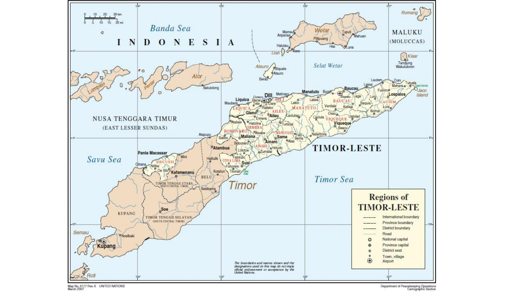
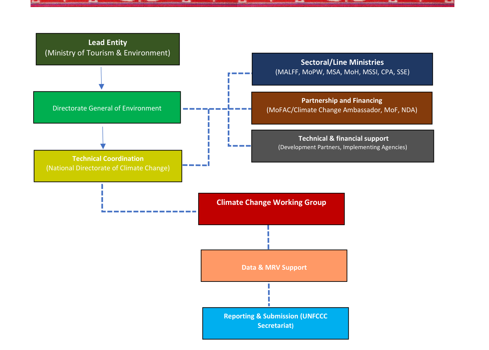
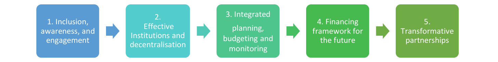
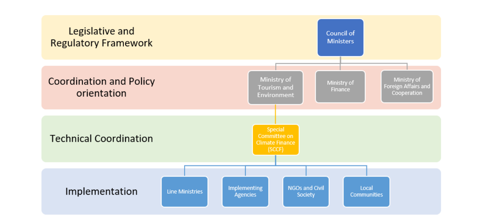

Draft 0.06 2026-01-16
Climate change is no longer a distant threat for Timor-Leste—it is a present and escalating reality affecting our communities, ecosystems, food systems, water security, and economic stability. As a proud young nation, and as both a Least Developed Country (LDC) and Small Island Developing State (SIDS), we stand on the frontlines of climate impacts despite contributing only a negligible share of global greenhouse gas emissions. Yet Timor-Leste remains steadfast in its resolve to act responsibly, protect its natural wealth, and pursue a development pathway that is resilient, inclusive, and sustainable.
Through its Third Nationally Determined Contribution (NDC 3.0), extending to 2035, Timor-Leste strengthens its ambition under the Paris Agreement and translates commitment into concrete, measurable action. The NDC advances integrated climate risk governance and accelerates mitigation through renewable energy expansion, energy efficiency standards, and the promotion of electric mobility. Flagship investments—including the 72 MW Manatuto solar power plant with battery storage, sustainable forest and mangrove restoration, vehicle import regulations, and plastic recovery—demonstrate our determination to transition toward low-carbon development.
As a maritime nation, the Blue Economy is central to our strategy. NDC 3.0 promotes sustainable fisheries and aquaculture, marine conservation, mangrove restoration, and coral reef rehabilitation to strengthen coastal resilience, protect biodiversity, and secure livelihoods. Nature-based Solutions across agriculture, forestry, and coastal systems—supported by the updated National Biodiversity Strategy and Action Plan—will enhance food security and ecosystem integrity while limiting emissions growth. For the first time, NDC 3.0 introduces a dedicated pillar on Loss and Damage, reinforcing disaster risk reduction, early warning systems, and targeted support for vulnerable groups to ensure a just transition.
We extend our sincere appreciation to all ministries, institutions, development partners, civil society, academia, and communities whose dedication and expertise contributed to the preparation of this document. Moving forward, continuous collaboration and strengthened partnerships will be essential to harness synergies, mobilize resources, and effectively deliver on these commitments. NDC 3.0 reflects Timor-Leste’s collective determination to transform ambition into action and secure a resilient and prosperous future for present and future generations.
Francisco Kalbuadi Lay | =e Deputy Prime Minister Coordinating Minister for Economic Affairs Minister of Tourism and Environment
DLP) LOOT FT Oe He THT ee eae hd nla nth Li tiet mek eee ae
The review of Timor-Leste’s Nationally Determined Contribution (NDC) for the years 2022- 2030 and the development of the subsequent NDC for the years 2026-2035 have been carried out under the leadership of the Directorate General for Environment, Ministry of Tourism and Environment and the guidance of the Climate Change Working Group (CCWG) and Timor- Leste Special Envoy on Climate Change Affairs. Special thanks are extended to all members of the CC WG and officials from sectoral ministries and government agencies, including the Ministry of Agriculture, Livestock, Fisheries and Forestry, the Ministry of Foreign Affairs and Cooperation, the Ministry of Public Works, the Ministry of Finance, the Ministry of Transport and Communications, the Ministry of Health, the Secretary of State for Equality, the g7+ Secretariat, Civil Protection Authority, Autoridade National dos Minerais (ANM I.P.), Murak Rai Timor, E.P., TIMOR GAP E.P., National Designated Authority (NDA), BTL E.P., and EDTL E.P., actively supporting the preparation of the NDC 3.0 throughout the project’s implementation period.
Technical support to the development of the NDC 2026-2035 was provided by the United Nations Development Programme (UNDP) under the Umbrella Programme to Support NBSAP Update and the 7th National Reports, with contributions from the Development Partners, and the UN Country Team, led by the UN Resident Coordinator.
Representatives of NGOs, civil society, youth groups, women, the private sector, and academia actively participated in consultations. These include World Fish, TOMAK, Blue Ventures, OXFAM, Care International, Fundasaun Rai Matak, Ho Musan Ida, Fundação Carbon Offset Timor (FCOTI), Konservasaun Flora & Fauna, Coral Triangle Center, Rede Feto, L-COY – Laudato Si' Movement Timor-Leste, Grupo Konservasaun Com, PERMATIL, Konfederasaun Sindikatu Timor-Leste (KSTL), Rede HASATIL, Fundasaun NETIL, ATKOMA, ACBIT, and Da Silva Teixeira & Associados. The NDC also includes inputs provided as written submissions, including the Youth Statement on Climate Change submitted during the technical consultation phase.
Page
Timor-Leste’s Third Nationally Determined Contribution (NDC 3.0) strengthens the low- carbon development direction of the country and puts climate ambition at the centre of its long-term vision. As one of the Least Developed Countries (LDCs) and a Small Island Developing State (SIDS) that gained independence only in 2002, Timor-Leste faces many development challenges compounded by loss and damage resulting from the changing climate and its impacts.
Timor-Leste’s NDC 3.0 will be implemented over the next 10 years, until 2035. It continues the priorities and measures planned under NDC 2.0 until 2030, and proposes new activities and strategies over the whole implementation period until 2035, to reflect the processes and outcomes of international climate and environmental negotiations such as the first Global Stocktake and other outcomes under the Paris Agreement and the UNFCCC, including the UAE Framework for Global Climate Resilience, the Kunming-Montreal Global Biodiversity Framework and the Kigali Agreement to the Montreal Protocol.
The New NDC takes stock of the priorities and measures implemented so far and continues the NDC 2.0 approach of a mature strategy focused on integrating climate risk management into all sectors of the national economy and on a just transition for all its citizens. The NDC 3.0 covers all sectors impacting Timor-Leste’s global carbon footprint: energy, agriculture, forestry and other land use (FOLU), and waste. Having responsibility for just 0.003 % of historical global greenhouse gas emissions, Timor-Leste commits to continue developing through sustainable low-carbon strategies, strengthening its ambition over time, and demonstrating progress in implementation of climate action to contribute to the long-term goals of the Paris Agreement through consistent monitoring, reporting and verification of its GHG emissions and a monitoring and learning (MEL) approach to the planned adaptation to climate change.
Like its NDC 2.0, Timor-Leste organises its planned areas of intervention into four core pillars: Climate Risk Governance, Nature-Positive Growth and Transition, Low-Carbon Development and Adaptation and Resilience-Building, strengthening its NDC 3.0 through a fifth core pillar of Loss and Damage.
These five pillars will organise all the planned activities and enable Timor-Leste to include new interventions that support the achievement of the country’s climate policy objectives.
Pillar 1: Climate Risk Governance will continue strengthening the institutional capacity of Timor-Leste to respond to and manage climate risks and complex development challenges.
Pillar 2: Nature-Positive Growth and Transition will continue the implementation of Nature- based Solutions (NbS) and provide enabling environment through capacity-building, upscaling and land tenure reforms.
Pillar 3: Low-Carbon Development will continue support and strengthen the shift towards a green economy, enabling green electricity transition, a shift to electricity-powered clean transportation, development of a blue economy, supporting sustainable aquaculture, sustainable fisheries, eco-tourism and development of a circular economy to support the sustainable economic growth, benefiting all the citizens and reflecting the principles of a just transition.
Pillar 4: Adaptation and Resilience-Building will continue and develop Timor-Leste’s proactive efforts to protect livelihoods and build resilience to future risks, ensure food and clean water for the population of Timor-Leste, strengthening activities around WASH and ensuring that public health is a matter of priority. Climate adaptation priorities continue focussing around agriculture and food security, addressing the issue of malnutrition, affecting particularly children and women, and the loss of crops linked to climate change and compounded by development issues. Water resources and their protection is another adaptation priority in the context of shifting rainfall patterns, increased unsustainable use of water resources and saltwater intrusion in the coastal municipalities. Increasing coastal resilience against a sea-level rise of 5.5 mm per year, which is significantly higher than the global average by promoting a large-scale restoration of mangroves and protection afforded by the new Blue Economy Policy and Action Plan, and strengthened focus on health, protection of children, youth and vulnerable persons, and a cross-sectoral integration of Just Transition into all planned policies and measures.
Pillar 5: Loss and Damage will focus on addressing unavoidable, residual impacts and damages that exceed the capacity of adaptation measures, including both, sudden-onset disasters such as floods, mudslides and cyclones, and slow-onset events such as sea-level rise. Activities planned in the coming decade include anticipatory action and building readiness to emergency response, data collection and monitoring, assessment of non-economic losses (NELs), increasing readiness to access, manage and distribute funds to address loss and damage, particularly following extreme weather events, and planning for forced displacement caused by the rising sea levels, among others.
The NDC revision and update process ensured country ownership and inclusivity, taking a whole-of-government and whole-of-society approach to the review of NDC 2.0 and the design of the NDC 3.0. The consultation process involved all levels of government, civil society organisations, the private sector, local communities, women and youth groups, and ensured that the proposals of these groups and the interests of the most vulnerable members of society are safeguarded and reflected in the NDC 3.0 priorities in just and balanced ways.
The NDC 3.0 is aligned with all key national policies and measures such as the second National Biodiversity Strategy and Action Plan, the National Climate Change Policy, the National Adaptation Plan, and the Strategic Development Plan 2011-2030, and is guided by the UN Sustainable Development Goals. The government has undertaken measures to strengthen the enabling means of implementation, by undertaking the preparation of technology needs assessments and proposing a way forward in continuous capacity-building and education. Finance is understandably the key enabler of climate action and, despite all domestic efforts planned to be financed from the state budget, international financial support will be a game- changer and a precondition for many of the planned measures. The Government of Timor- Leste is committed to enhancing its monitoring and evaluation (M&E) of key environmental and climate actions in its "Dalan ba Futuru" ("Road to the Future") framework, designed to streamline the government planning, budgeting, and performance tracking. Timor-Leste will strengthen its MRV capacity under the Enhanced Transparency Framework, submitting its first Biennial Transparency Report (BTR1) in 2026, and its third National Communication, enabling the country to take stock of its GHG emissions and adaptation efforts undertaken in line with the National Adaptation Plan.
|
ADB |
Asian Development Bank |
|
AFoCO |
The Asian Forest Cooperation Organization |
|
AFOLU |
Agriculture, Forestry, and Other Land Use |
|
ANM, I.P. |
Autoridade National dos Minerais Instituto Público |
|
ANP, I.P. |
Autoridade Nacional do Petróleo |
|
BESS |
Battery Energy Storage Systems |
|
BTL, E.P. |
Bee Timor-Leste Empresa Pública |
|
CCS |
Carbon Capture and Storage |
|
CCWG |
Climate Change Working Group |
|
CPA |
Civil Protection Authority |
|
DFAT |
Department of Foreign Affairs and Trade |
|
DG FCIP |
Directorate General of Forests, Coffee and Industrial Plantation |
|
DNA |
Designated National Authority |
|
EbA |
Ecosystem-based Adaptation |
|
EDTL, E.P. |
Electricidade de Timor-Leste Empresa Pública |
|
EVs |
Electric Vehicles |
|
FAO |
Food and Agriculture Organization |
|
FCOTI |
Fundação Carbon Offset Timor |
|
FRLD |
Fund for Responding to Loss and Damage (FRLD) |
|
GCF |
Green Climate Fund |
|
GEDSI |
Gender Equality, Disability and Social Inclusion |
|
GEF |
Global Environment Facility |
|
GWP |
Global Warming Potential |
|
HCFCs |
Hydrochlorofluorocarbons |
|
HFCs |
Hydrofluorocarbons |
|
ILO |
International Labour Organization |
|
INDC |
Intended Nationally Determined Contribution |
|
IOM |
International Organization for Migration |
|
JICA |
Japan International Cooperation Agency |
|
KFF |
Konservasaun Flora & Fauna |
|
KOICA |
Korea International Cooperation Agency |
|
KSTL |
Konfederasaun Sindikatu Timor-Leste |
|
LDC |
Least Developed Country |
|
MALFF |
Ministry of Agriculture, Livestock, Fisheries and Forestry |
|
MEL |
Monitoring and Learning |
|
MoF |
Ministry of Finance |
|
MoFAC |
Ministry of Foreign Affairs and Cooperation |
|
MoH |
Ministry of Health |
|
MoPW |
Ministry of Public Works |
|
MoTE |
Ministry of Tourism and Environment |
|
MPSI |
Ministry of Planning and Strategic Investment |
|
MSA |
Ministry of State Administration |
|
MSME |
Micro, Small and Medium Enterprises |
|
NbS |
Nature-based Solutions |
|
NBSAP |
National Biodiversity Strategy and Action Plan |
|
NDA |
National Designated Authority |
|
NDC |
Nationally Determined Contribution |
|
SALT |
Sloping Agricultural Land Technology |
|
SDGs |
Sustainable Development Goals |
|
SDP |
Strategic Development Plan |
|
SIDS |
Small Island Developing States |
|
SNLD |
Santiago Network for Loss and Damage |
|
SSE |
Secretary of State for Equality |
|
TILOFE |
Timor-Leste Organic Fertilizer |
|
UNCBD |
United Nations Convention on Biological Diversity |
|
UNCCD |
United Nations Convention to Combat Desertification |
|
UNCLOS |
UN Convention on the Law of the Sea |
|
UNDRR |
United Nations Office for Disaster Risk Reduction |
|
UNDP |
United Nations Development Programme |
|
UNEP |
United Nations Environment Programme |
|
UNESCAP |
United Nations Economic and Social Commission for Asia and the Pacific |
|
UNESCO |
United Nations Educational, Scientific and Cultural Organization |
|
UNFCCC |
United Nations Framework Convention on Climate Change |
|
UNICEF |
United Nations Children’s Fund |
|
UNRCO |
United Nations Resident Coordinator’s Office |
|
WFP |
World Food Programme |
|
WHO |
World Health Organization |
In accordance with Decision 1/CP.21 of the Conference of the Parties of the United Nations Framework Convention on Climate Change (UNFCCC), the Democratic Republic of Timor- Leste communicates hereby its Nationally Determined Contribution (NDC) for 2026-2035.
The National Constitution of the Democratic Republic of Timor-Leste protects the right of Timorese citizens to “a humane, healthy, and ecologically balanced environment”, providing the cornerstone of Timor-Leste’s response to the impacts and implications of anthropogenic climate change.
Like previous NDCs, this third NDC of Timor-Leste, communicated in accordance with Article 4, paragraph 3, of the Paris Agreement, supports the national development priorities and objectives outlined in key policy documents such as the Strategic Development Plan (SDP) for the period 2011-2030, National Climate Change Policy (2022), Timor-Leste’s National Adaptation Plan,1 guiding Timor-Leste in building resilience through ecosystem-based adaptation, and the National Biodiversity Strategy and Action Plan (NBSAP), a framework for conserving biodiversity. This NDC also reflects the priorities of the Roadmap for the Implementation of the 2030 Agenda and the SDGs2 and the strategic direction of the Blue Economy Policy and Action Plan for the Promotion of a Resilient and Sustainable Economy of the Sea in Timor-Leste (2025-2035).3
This NDC has been formulated based on a review of Timor-Leste’s second NDC and a stocktake of policies and measures implemented between 2023 and 2025, followed by an assessment of options for policy and regulatory reforms, enabling the upscaling of ambition of Timor- Leste’s climate policies, while taking into account the national circumstances and capabilities of the country. The second NDC (NDC 2.0) of Timor-Leste was in its own right a continuation and an update of the first NDC of Timor-Leste from 2016, confirming the direction of the country’s climate change policies and determination of Timor-Leste governments to consistently respond to challenges and threats of climate change, while taking up opportunities to promote sustainable, low-carbon development ensuring the future of the country and a fair contribution to global efforts limiting climate change under the Paris Agreement. The current update was guided by the capabilities and ambitions of the country, the latest science summarised in the IPCC AR6, reflections on the outcomes of the first Global Stocktake, the UAE Framework for Global Climate Resilience, and the pathways set by the Kunming-Montreal Global Biodiversity Framework towards halting and reversing biodiversity loss. The review process was led by the Climate Change Working Group (CCWG) representing all the key ministries and agencies of the government at both the national and subnational levels, with technical expert support, contributions from the UN agencies active in the country and in consultations with key stakeholders representing civil society, academia, youth, women groups, the private sector, local communities, and other vulnerable groups.
In light of the national circumstances and capabilities of Timor-Leste, the new NDC, with a revised timeframe of 2026-2035, will pursue the objectives and implement activities outlined in the current NDC for the years 2022-2030. Policies and measures that Timor-Leste intends to implement after 2030 will continue in line with the four pillars of NDC 2.0: Climate Risk Governance, Nature-Positive Growth and Transition, Low Carbon Development, and Climate Change Adaptation and Resilience Building. Taking into account the significance of loss and damage to the continued existence of Timor-Leste and the growing threat of climate change to which adaptation is impossible, NDC 3.0 proposes the adoption of a fifth pillar of Loss and Damage.
Timor-Leste’s status as a Least Developed Country (LDC) and a Small Island Developing State (SIDS) reflects national vulnerability and particular exposure of the country to climate change risks. Climate change poses an immediate threat to national food and water security and the health and welfare of the Timorese people. The Government of Timor-Leste is committed to proactively managing and reducing the impacts of climate change on national economic, physical, environmental, and social security. Adaptation to climate change and resilience- building are key priorities for a country that has a globally insignificant carbon footprint. Despite a rise in emissions resulting from development underway in Timor-Leste since the country gained independence in 2002, the nation’s cumulative annual emissions amount to 0.003% of global emissions. According to the latest 2015 inventory data quoted in the Second National Communication (SNC) total GHG emissions in 2015 (for the three main GHGs: CO2, CH4 and N2O) were estimated to have reached 3,825.12 Gg CO2 (SNC, p. 28) In 2015, the emissions from energy, agriculture and waste sectors reached 5,303.85 Gg CO2e, while the Forestry and Other Land Use (FOLU) sector provided net sink of 1,478.73 Gg CO2e.4 The SNC provided GHG emission projections until 2030, estimating total 2025 BAU emissions to drop to 2,291 Gg CO2e. The numbers will be verified in the context of the 3rd National Communication.
Without concerted actions to address climate risks, climate change will exacerbate Timor- Leste’s existing problems and erode hard-won development gains, undermining progress toward a sustainable, low-carbon future. Timor-Leste will aim to address the gaps and needs in the available means of implementation by concerted efforts to improve human capacity, access financial resources, and facilitate the transfer of technologies that will help it to achieve its development objectives, while contributing to the long-term goals of the Paris Agreement.
In line with the progressing climate change, the NDC implemented in the years 2026-2035 will aim to increase Timor-Leste’s adaptation efforts, mainstreaming adaptation in all relevant strategies and implementation plans, improve multi-hazard early warning systems, and comprehensively address loss and damage (L&D) that threaten national capacity to adapt to climate change and achieve its long-term development goals. At the same time, Timor-Leste reaffirms its commitment to sustainable low-carbon development. Recognizing the central role of agriculture for the national economy and livelihoods, the country aims to prevent and reduce climate impacts through Ecosystem-based Adaptation (EbA), by scaling up nature- based solutions (NbS), and enhancing efforts to protect biodiversity and the environment.
The commitment of the Timorese people to managing natural resources sustainably, protecting biodiversity, and conserving vital habitats and ecosystems is indispensable for the successful implementation of national policies enabling sustainable development of Timor- Leste and the achievement of SDGs. The population must also be prepared for increasingly systemic climate-related risks that threaten lives and unsettle livelihoods. Timor-Leste needs to invest in capacity-building across all sectors of the economy addressing the needs of all the stakeholder groups in the Timorese population, promote the adoption of technologies relevant to the national circumstances, and raise financial resources to build on the willingness of its people to take action to address climate risks, prepare themselves and protect their livelihoods and their environment. Capacity-building and community-level education about climate risks, sustainable climate-smart agriculture and nature conservation, recognising the importance of forests in supporting livelihoods and strengthening climate resilience, are among the key elements enhancing the implementation of NDC 2026-2035.
Mainstreaming the principles of GEDSI into activities adopted in the NDC 3.0 will ensure social inclusivity, equity, and effectiveness, promoting social cohesion of Timor-Leste's society. Drawing on the experience with mainstreaming Gender issues into the national legislation, national policies and local plans and programmes, a similar approach will be applied to other elements of the GEDSI framework, in line with government policies and international commitments and frameworks adopted by Timor-Leste since gaining independence such as the Universal Declaration on Human Rights, UN Convention on the Rights of Persons with Disabilities, International Convention on the Elimination of All Forms of Racial Discrimination (ICERD), International Covenant on Economic, Social and Cultural Rights (ICESCR), Convention on the Elimination of All Forms of Discrimination Against Women (CEDAW).
In accordance with these objectives, this revised and enhanced Nationally Determined Contribution (NDC) to the Paris Agreement builds on Timor-Leste’s 2022-2030 NDC (NDC 2.0) and further articulates national intentions to progress on the pathway of low carbon development and nature positive growth, supported by improved climate risk management, resilience-building and mainstreaming adaptation to changing climate into all sectoral policies, planning processes, implementation strategies and investment plans.
Timor-Leste is a country of approximately 15000 square kilometres located on the island of Timor in South-East Asia, north of Australia. To the west, Timor-Leste shares border with Nusa Tenggara Timur, a province of Indonesia. It also comprises the municipality of Oé-Cusse Ambeno, located within Western part of the Timor island, the Ataúro island, and the uninhabited Jaco Island. Nearly half of the country has slopes greater than 40%, which contributes to soil erosion caused by heavy rainfall. Central mountains of Timor rise to 3,000 meters about sea level. In the southern part of the country, there are also some coastal plains. Timor-Leste’s development approach, economic basis, and climate ambitions continue to be defined by various key factors and national circumstances, including the local cultures and traditions of the people of Timor-Leste, the natural resources and environments in which the national identity is defined, and the values, principles, and partnerships on which the nation has been built.

The population of Timor-Leste is one of the youngest in the world, with 42% of the country’s citizens under the age of 18 or children. The median age is just 19.6 years (UNICEF, 2025). Yet, it is a small nation of barely 1,4 million people, with 36% living in urban areas, and the remaining 64% living in the countryside. Young Timorese are aware of climate change impacts on the environment and the threats to further socio-economic development of their country, and are motivated to support climate action, but lack capacities and resources.
Over the past 10 years, the annual population growth rate has fluctuated between 1.7 and 2.5%. At present the number of people living in the country is increasing at the rate of 1.28%. It is to be expected that population growth will continue in the coming decade and will be a driver of change and one of key policy issues, prioritising health, education, employment and housing policies. A child-focused policy is a core component of national risk mitigation and a strategic investment in the country’s most valuable resource, its people. Like other small island developing states, the development and upskilling of Timor-Leste’s workforce is vital for the future of the economy. Increasing women’s participation in the formal economy is an ongoing priority.
Despite progress made to strengthen national infrastructure and public services, and increase employment, poverty in Timor-Leste remains widespread. Between 2007 and 2014, the proportion of citizens living below the poverty line declined from 50.4% to 41.8 %. Between 2015 and 2022, living conditions in Timor-Leste improved but many disparities are still present between rural and urban households. In 2022-2023, most of the population qualified for government support in various forms.5 In 2024, the proportion of employed population living below $2.15 purchasing power parity a day was 16.0% (ADB, Basic Statistics 2025).
The main sectors of the economy include public administration (with c. 25% share of GDP due to government spending and donor support), agriculture, forestry and fishing (c. 17% of GDP), wholesale and retail trade (c. 12% of GDP), driven by domestic consumption and imports, and construction (c. 10% of GDP) fuelled by public infrastructure projects, followed by education and health services (c. 8% of GDP), transport and communication (c. 7% of GDP), finance and real estate (c. 6% of GDP), manufacturing (c. 3% of GDP), growing from a low base and limited mostly to small-scale production, and tourism and hospitality (c. 2% of GDP) an emerging sector with growth potential.6 Post-independence, Timor-Leste’s economy has been structured around the oil and gas industry. While oil and gas revenues have been the largest contributor to government revenue overall, the revenue from oil and gas has declined significantly since 2012. In 2019, petroleum products constituted less than 40% of Timor- Leste’s exports. Since then, Timor-Leste’s petroleum sector has gradually ceased production, and the country now relies on its Petroleum Fund for fiscal support. In 2024, domestic non- oil revenues totalled $260 million, declining by 9% from 2023.7 To address the imbalances, the government is actively seeking to shift economic activity toward non-oil sectors to ensure long-term economic stability. Continued investment in economic development objectives and infrastructure services, as well as improved access to education, are required to build greater socio-economic resilience in Timor-Leste. Current weak public and private investment levels also need to improve as otherwise these factors may impact the long-term growth prospects.8 Diversification and growth of the non-oil economy in Timor-Leste, ensuring energy and food for all, strengthened environment protection and safeguarding biodiversity, and building resilience to climate change, require an ongoing focus on upscaling agricultural production and market access, improving the structure and scope of Timor-Leste’s emerging tourism sector, sustainable and consistent investment in resilience building, and land tenure reform.
Agriculture is the key economic sector of the country, and food security remains one of its key concerns in the context of the growing population. Climate change and natural hazards have been destabilising factors for the food security of the population. Around 66% of households depend on some form of subsistence farming. Even though agriculture contributes to about 16% of Timor-Leste's gross domestic product, the country is not self- sufficient with regard to food production. Due to inauspicious farming conditions and the near absence of climate-smart agriculture practices, agricultural productivity is low. Around 60% of food consumed in Timor-Leste comes from imports, including nearly half of rice, the main staple. Given its substantial dependence on imported food, Timor-Leste remains highly vulnerable to external shocks: supply-chain disruptions, global inflation, and geopolitical conflicts undermine national food security and disproportionately impact low-income households. Interventions improving Timor-Leste food security and food systems will require substantial investments in inputs, infrastructure, and services, changes in practices along the value chain from field to table, and behavioural changes. Food security will be improved by strengthening food storage, improving distribution and bolstering local food industry while sustainable agricultural practices and diversity of crops will also strengthen biodiversity conservation, and boost renewable energy demand.
At the same time, Timor-Leste strives to protect its forests. From 2001 to 2024, Timor-Leste lost 34 thousand hectares of tree cover, equivalent to a 5.0% of its 2000 tree cover area. In 2020, 67% of its land area was covered by natural forest. Agriculture and development persistently drive further deforestation in some areas but the main deforestation drivers are the wildfires, other natural disturbances, and illegal logging. Four regions: Covalima, Lautem, Bobonaro, and Viqueque are responsible for 58% of tree cover loss. Deforestation and forest degradation are ongoing problems that the country must address in the broader context of sustainably managing land use change.
Timor-Leste is an island state with exceptional marine ecosystems in its territorial waters, including coral reefs with 400 reef-building coral species that provide home to over 1,200 species of reef fish, and many rare species. 30 species of the world’s 90 cetaceans live in or pass through Timorese waters. The sustainably managed fisheries and aquaculture sector developed in line with a low-carbon pathway can significantly contribute to the food security and improved nutrition of Timor-Leste, due to high concentration of micro and macro- nutrients. The Government of Timor-Leste is committed to building a sustainable blue economy to ensure the growth of its ocean-based economic sectors. In February 2026, the IX Constitutional Government of Timor-Leste adopted a Blue Economy Policy and Action Plan for the years 2025- 2035.9 In alignment with the Kunming-Montreal Global Framework, by 2030, 30% of marine areas of Timor-Leste will be designated for conservation. A national park will be set up in Ataúro Island together with a Marine Research and Education Centre to protects its marine ecosystems and to provide jobs and economic opportunities to local people.
Timor-Leste’s climate is influenced by seasonal variability and cyclical climate phenomena, the El Niño Southern Oscillation (ENSO), the Indian Ocean Dipole (IOD), Pacific Decadal Oscillation (PDO), and Madden-Julian Oscillation (MJO). These factors affect precipitation and water availability. El Niño typically results in drier conditions, reduced rainfall during the wet season, and delays in the start of the wet season by 2–3 months, leading to drought and reduced groundwater availability, with serious impacts on agriculture. The wet season is characterized by the increasing incidence of extreme rainfall events. At the same time, rainfall received during the dry season is decreasing, and this trend is expected to continue into the future. As reported in the SNC, data from the Disaster Information Management System for the region of Timor-Leste confirm that in the period 1992 – 2017 the country experienced 404 events of strong wind, 119 floods, and 45 landslides (SNC, p.94). Trend analysis of annual count of days referred in SNC demonstrates that most of the area in Timor-Leste experience increasing frequency of daily rainfall above 20 mm/day (SNC, p.112).
The growth of average temperatures due to climate change will continue to impact Timor- Leste over the coming decades. The number of hot days (with temperatures above 30°C) is projected to increase from on average 26 hot days per year to 86 days during 2040-2059 (SSP3-7.0 scenario).10 As confirmed by science, rising heat affects learning, lowering the cognitive performance of students. Prolonged exposure to rising ambient temperatures affects workers and lowers their productivity. In parallel, rising temperatures negatively impact the elderly and the infirm.
Timor-Leste’s climate is highly variable and will become more so in the future as climate change interacts with and exacerbate pre-existing variability and increases the potential for extreme weather events. The worsening impacts of climate change and the growing frequency of disaster events in Timor-Leste are compounding existing socio-economic development challenges, increasing the vulnerability of rural and urban communities, and driving up the aggregate cost of development and public services. The provision of social services, such as health education and protection, is also undermined. Climate change impacts on agriculture and water security have the potential to amplify the risk of malnutrition and the risk of waterborne diseases. Lack of access to clean, safe water increases threats to human health in the country.
Agriculture is not the only economic sector threatened by the changing climate. The fisheries and aquaculture will be affected through climate change impacts on coastal and marine ecosystems, driven by changes in precipitation frequency and intensity that will lead to the destruction of shallow freshwater habitats, increased river discharge and sedimentation, damaging wetlands and mangroves. Increasing sea-surface temperatures are expected to accelerate coral bleaching and ocean acidification, compounding the pressure on Timor- Leste’s reefs.
Sea level has risen around Timor-Leste at a rate of 5.5mm per year since 1993 - well above the global average (2.8mm – 3.6 mm per year). Projections of future sea level rise indicate that, on average, the predicted rate of that phenomenon around the country’s main island based on multi-mission satellite altimetry is expected to reach about 5.5 mm/year. Increases of this magnitude would result in a sea level rise of about 50 cm during the 21st century. The Intergovernmental Panel on Climate Change’s Sixth Assessment Report (IPCC AR6) anticipates that, in the worst-case scenario, sea level in the northeast region of the South Pacific Convergence Zone could rise by over 100 cm in comparison to 1995-2014 levels by 2100. Another projection, made under the Pacific-Australia Climate Change Science and Planning Program in 2015, indicates that sea level around Timor-Leste could rise by about 43-88 cm by 2090 under the Very High Emissions Scenario. In fact, it was noted that the possibility of sea level rise greater than the range of 0.5-1.0 m by 2100 relative to 1990 values cannot be ruled out.11 This slow-onset threat hangs over the livelihoods of 75-85% of Timor-Leste’s population residing in low and coastal areas of the country. In the event that the high-end estimates materialize, the consequences would be devastating for Timor-Leste without major investments to fortify coastlines and relocate communities and infrastructure.
Timor-Leste’s contribution to climate change has been minimal, with historical emissions since 1850 amounting to 0% and current national emissions equivalent to 0.003% of global emissions.12 Overall greenhouse gas emissions in Timor-Leste have fluctuated significantly over the last two decades (2000-2020). The drivers of this fluctuation have been sensitive to changes in the forestry and land-use sector as well as the changing productivity levels and resulting emissions profile within the oil and gas industry. The country intends to pursue its development goals along a sustainable low emissions pathway, in line with the long-term goals of the Paris Agreement, and continue efforts to minimize the impacts of climate change. However, Timor-Leste is particularly susceptible to loss and damage caused by climate change. In April 2021, Timor-Leste was struck by its worst floods in 50 years: Tropical Cyclone Seroja brought torrential rains that inundated the capital, Dili, and all 13 municipalities, destroying roads, bridges and 2,100 ha of crops, causing 34 deaths, displacing over 13,000 people, and affecting over 25,000 households. In 2023, the country had to face a significant drought and a heatwave caused by El Niño, leading to severe agricultural decline of staple crops and coffee which is the main export-oriented crop. Heat and drought caused severe food insecurity, affecting 27% of the entire population of Timor-Leste in late 2023 and early 2024. The livelihoods of people living off the land were particularly disrupted, prompting
|
support through immediate food aid. |
The frequency of such disasters is expected to increase |
|
|
during this century, undermining the country’s efforts to lift all of |
its population out of |
extreme poverty and malnutrition.
As sea level continues to rise over the coming decades, the resulting impacts on freshwater resources, soils, and coastal zones will continue irrespective of short-term changes to global emissions trends. The increased risk of floods, droughts, extreme weather events, coastal flooding, and saltwater intrusion, as well as impacts on coral reefs and fisheries, have the potential to drastically impact food security by increasing the potential for crop loss, reducing agricultural productivity, and driving biodiversity loss and fisheries decline.
The IPCC AR6 has provided the overarching scientific basis for the consideration of current and future climate change risks in Timor-Leste and has been used to support the commitments and priorities set out by this revised and enhanced nationally determined contribution to the Paris Agreement.
The impacts of climate change extend to food security and livelihoods, requiring the development of resilient and adaptive strategies to protect agricultural value chains and ensure a stable food supply for the population. Climate change and natural hazards have an increasingly destabilizing influence on food security which is high in Timor-Leste. The average rate of moderate or severe food insecurity amounts to 36% compared with 18% in Southeast Asia. Timor-Leste ranked 107 out of 123 countries in the Global Hunger Index 2025. Agriculture accounts for about 16% of the country’s GDP. However, 60% of the food is imported, including 45% of rice, which is the main staple. High food import dependence makes Timor-Leste susceptible to supply chain disruptions, global inflation driving the price of food, and international conflicts, undermining food security, especially for the poor citizens. Enhancing food security through measures supporting agricultural productivity is a key priority for the government. The low productivity of the agricultural sector can be boosted by new technologies and farmers' training, and by ensuring better market access for local producers and improved storage of agricultural produce and food, aiming at zero waste. Post- harvest losses can be significantly reduced by better storage facilities for grains and seeds. Demand for the workforce derived from improved agrifood systems will also lead to new employment opportunities.
Good, climate-smart agricultural practices combined with better quality and variety of seeds will increase the yields and farmers’ incomes while also increasing the availability of locally produced food and, with the improvements of distribution, lower food prices for all. The impact of climate change on nutrition is especially serious for children under five. Adequate nutrition during early childhood is essential for healthy physical growth and cognitive development and helps prevent conditions such as stunting and wasting.
Improved road networks linking the rural communities with bigger towns can provide market access and lower post-harvest losses linked to poor transport infrastructure. Many rural areas are partly inaccessible during the wet season when landslides may limit road access to municipalities.
Poverty of the rural population is a great development obstacle to smallholders’ investment in technologies and equipment. Addressing the problems of low agricultural productivity with a mix of measures improving productivity, limiting and eliminating food waste, ensuring transport and providing access to local markets will support the goal of eliminating food insecurity. However, these policy measures require significant financial support to the rural communities.
Water scarcity continues to be a development challenge for Timor-Leste. The country receives annually between 1,500 and 2,500 mm of rainfall. 80% of rainfall is concentrated in the wet season from December to April. However, only about 30% of that rainfall is captured and utilized. The main obstacles to harvesting rainwater include poor infrastructure, lack of water storage capacity and rapid runoff. Soil erosion and deforestation combined with forest degradation have diminished the groundwater retention capacity.
Only a small fraction of households in Timor-Leste has access to piped water. As of 2024, 87.3% of Timorese population is estimated to have at least basic water access. However, the availability of water throughout the year remains a challenge, especially in rural areas. According to the 2022 Census, 54.42% of Timorese households responded that they “experienced any water shortage in the past 6 months”. Rural population depends on rivers, springs or wells for water access. Groundwater extraction accounts for 70% of water supply in rural areas and is unregulated. Saltwater intrusion affects up to 25% of freshwater wells in coastal areas.13 Most of agriculture across the country is rain-fed, the absence of irrigation turns farming into an uncertain task, undermining livelihoods and increasing the climate vulnerability of subsistence farming. In the dry season (May to November), water sources can become contaminated or depleted. The country needs modern sustainable irrigation systems and water management to ensure access to clean water for the population and raise the productivity of agriculture. The answers can be provided through nature-based solutions (NbS) that are durable, have a positive environmental footprint and are relatively low-cost, as engineering work on irrigation channels is supplemented by soil-bioengineering techniques and revegetation.14 The provision of abundant water increases the productivity of agriculture, enabling farmers to grow crops twice a year, maximising the use of land and water, and diversifying to other crops beyond staples, fruit and vegetables. Without addressing the problem of water scarcity and improving water access, water management, water retention and irrigation, agricultural production will remain precarious. The Government of Timor-Leste recognizes that clear reinforcement of investment in access to drinking water and basic sanitation is urgently needed, as it means investing in health, education, the environment, and economic growth, improving job opportunities and the country's productivity. Ensuring water access, availability, and quality across the country remains a challenge, but it is key that people can use safe water at their households, schools, health facilities and communities.
Timor-Leste’s economy is heavily reliant on agriculture (crop, livestock), fisheries, and forestry. The government prioritizes building resilience in agricultural and aquatic food systems to protect food security and livelihoods of over 80% of the population that directly rely on agriculture and fisheries as main source of income and food. Low agricultural yields are linked to steep slopes, poor soil and high variability of rainfall. Agriculture across the country is already impacted by climate change and the projections indicate that these impacts will grow in the future. Farmers face increased risks from extreme weather events, which damage crops and disrupt supply chains. Droughts or flash floods compound poverty in rural areas, and affect especially children’s welfare and physical development. Good, climate- smart agricultural (CSA) practices combined with better quality and diversified seeds will increase yields and farmers’ incomes while expanding the availability of locally produced food. The Ministry of Agriculture, Livestock, Fisheries and Forestry (MALFF), in collaboration with development partners, has begun supporting low-income smallholder farmers to manage risks by introducing CSA practices that integrate sustainable natural resource management. Although still in the early phase, more effort is needed to ensure widespread adoption. CSA also helps prevent land degradation through sustainable land management— minimum soil disturbance, biomass mulch soil cover, and crop diversification. Post-harvest losses can be significantly reduced by better storage facilities for grains and seeds. With improved distribution systems, these gains can lower food prices and improve nutrition, especially for children.
Climate change is projected to have significant impacts on Timor-Leste's marine ecosystems, with shallow coral reefs, seagrass meadows, and mangroves identified as highly vulnerable habitats. The vulnerability of these habitats is driven by projected increases in sea surface temperatures (SST), sea-level rise, and a decline in rainfall. These climatic factors exacerbate existing pressures, such as limited formal management and overfished stocks. As a result, coastal fish stocks are projected to decline by 30-60%, while offshore pelagic fish are expected to be less impacted. The overall drop in total fish biomass is projected to be between 5-50%. To mitigate these impacts and address the overfished nearshore stocks, investments in adapting to offshore fishing with anchored fish aggregating devices (FADs) would be promoted. This approach reduces pressure on vulnerable nearshore species and supports the long-term food security and livelihoods of local communities. The government has recently approved the Blue Economy Policy and Action Plan which will be implemented progressively until 2035.15
Climate-smart management of aquaculture would leverage benefits from increased water temperatures in inland, elevated areas, increasing fish growth rates and farm productivity in aquaculture systems, providing new sources of food in some of the most impoverished areas of the country. These adaptations reduce pressure on vulnerable nearshore species and ecosystems, supporting the long-term food security and livelihoods of local communities.
Timor-Leste’s forests cover 61.8% of the land. However, the country is affected by an estimated annual deforestation rate of 1.7% and a forest degradation rate of 5.8%, one of the highest in South Asia and South-East Asia. Deforestation and forest degradation are driven by overgrazing, farmland expansion, growing demand for fuelwood and charcoal, urban expansion, and logging. Human-induced destruction of mangrove forests has also been significant; since the 1940s, Timor-Leste has lost approximately 80% of its mangrove cover. Currently, the country has about 921, 000 ha of forests. In recent years, Timor-Leste’s forestry and land-use sector has transitioned from a net source of carbon emissions to a carbon sink. However, multidimensional poverty and climate-related natural disasters continue to drive further forest degradation. Increased access to affordable alternative fuels and affordable electricity for cooking would substantially reduce demand for firewood. Options such as planting fast-growing energy crops may be less optimal, due to limited land availability and potential competition with food crops, but should be researched, subject to external support.
The government is looking into mechanisms safeguarding forests through results-based payments (RBPs) that would incentivise rural communities to protect native forests. The Government of Timor-Leste intends to explore options to engage with UN-REDD Programme and other international programmes such as the Forest Carbon Partnership Facility.
Since regaining independence, Timor-Leste has not conducted a national forest inventory, although a few project-based local inventories have been carried out. This absence of comprehensive national data limits effective forest management by constraining the country’s ability to assess forest condition, monitor change, and design evidence-based policies.
Timor-Leste’s waste management system is anchored in Decree-Law No. 2/2017, which establishes the Urban Solid Waste Management System and assigns municipalities responsibility for collection and treatment. Decree-Law No. 37/2020 strengthens this framework by restricting the sale, import, and production of single-use plastics—advancing the country’s Zero Plastic Policy to promote recycling, reuse, and local alternatives. The implementation of environmental licensing (Decree-Law 5/2011) under the mandate of the National Authority for Environmental Licensing ensures further environmental safeguards and constraints limiting impacts of waste-generating projects.16
The country continues to face major challenges in managing solid waste and wastewater, including limited infrastructure and treatment systems. Although the management of single- use plastics is regulated, plastic pollution remains a persistent problem due to limited enforcement and low public awareness. Timor-Leste must improve its waste collection and disposal system, ensuring that waste is segregated and all recyclable materials are recovered. At present, the country does not have sufficiently developed wastewater treatment infrastructure and around 47.7% of the grey wastewater is discharged into sewers that transport the untreated wastewater to the sea.17 Action in this area is needed urgently to improve public health, and protect ecosystems.
Timor-Leste recognizes that climate-related human mobility, including displacement, migration, and planned relocation, is both a consequence and a form of loss and damage. The NDC commits to integrating human mobility into loss and damage frameworks, ensuring that the economic and non-economic costs of displacement are addressed, and that affected communities have direct access to support and funding. Timor-Leste is one of the countries that are grappling with increasingly severe impacts of climate change that are beyond the limits of adaptation. Averting, minimizing, and addressing loss and damage is the primary concern. Timor-Leste undertakes to avert climate change by pursuing low-carbon development pathways, and minimise its impacts through adaptation based on nature, biodiversity, and ecosystem protection. However, the government must also plan to address the increasing threats and actual occurrences of loss and damage, such as displacement, destruction of infrastructure and ecosystems, loss of homes, and loss of lives caused by extreme weather events.
As reported in Timor-Leste’s National Adaptation Plan, the country has been experiencing massive floods, droughts, landslides, fires, and extreme wind events. These climate change impacts lead to a decrease in agricultural production, food insecurity, water shortage, destruction of infrastructure, loss of human life and biodiversity as well as human mobility including migration and displacement. Coastal erosion linked to both, sea level rise and extreme weather events is damaging ecosystems, infrastructure and other assets in the coastal areas.
Irreversible climate change threatens Timor-Leste coral reefs which are the most biodiverse in the world, and will undermine the prospects of the blue economy, impacting biodiversity, threatening internationally recognized megafauna in the Timor Sea sub-region, as well as fish and other species important for food security and jobs of local people in fishing and tourism. Already in its INDC (NDC 1.0), the Government of Timor-Leste signalled the need to enhance understanding, actions and support in areas including comprehensive risk assessment and risk management, risk insurance and risk transfer, rehabilitation, early warning systems, emergency readiness, slow onset events, risk insurance facilities like crop insurance. However, the needs of addressing loss and damage require a more comprehensive support.
The IX Constitutional Government of Timor-Leste will continue the implementation of the National Adaptation Plan to reduce vulnerability, increase resilience and integrate adaptation to climate change into sectoral policies, programmes, and plans. The increasing frequency of extreme rainfall events and longer and more intense droughts due to climate change are likely to continue to exacerbate development challenges. In response, increased emphasis on investment in integrated water resource management and flood protection remains central to Timor-Leste’s ability to build resilience to climate change. Another challenge is to climate-
|
da Costa, Z. X., Boogaard, F. C., Ferreira, V., & Tamura, S. (2024). Wastewater Management Strategy for |
|
|
Resilient Cities—Case Study: Challenges and Opportunities for Planning a Sustainable Timor- |
|
|
Leste. Land, 13(6), 799. https://doi.org/10.3390/land13060799 |
proof the infrastructure and minimise adverse impacts on agriculture, forests, and other ecosystems. Timor-Leste should also strengthen resilience, preparedness, and recovery at household and community levels, to better anticipate, prevent, and respond to climate- related losses, focussing on children and the impacts of the loss of homes and displacement will have on their psychological well-being, sense of security and identity.
The priority actions identified with regard to climate risk management include building up national loss and damage assessment framework, strengthening coordination mechanisms and developing systems for evidence-based decision making supported by analytical tools, including the Multi-Hazard Vulnerability Risk Assessment (MHVRA) and Timor Emergency and Response System (TERS).
Ensuring energy security and improving access to reliable energy services remain priorities for Timor-Leste. The country is at present served by 5 power plants with close to 300 MW installed capacity combined: 119.5 MW Hera (Dili) power plant, 136.6 MW Betano plant, 27.5 MW Comoro power plant and 17.3 MW Oé-Cusse (Inur Sakato) plant, with a small 2.6 MW plant serving Atauro Island.18 The 150 kV transmission line has 603 km and 9 substations. Average peak production reaches 82 MW. The plants run almost exclusively on imported diesel as feedstock, using in excess of 75% of Timor-Leste’s oil imports. An estimated 90% of the operating costs of the electricity system are the costs of fuel to power electricity generation. With the electricity tariff set below the cost-recovery level, in line with the purchasing power of the population, the state has to subsidize the production. In 2020, the operator of the grid and Timor-Leste state electricity enterprise, EDTL spent US$ 100 million on fuel.19 Diversification of energy sources and move to renewable electricity is of paramount importance. Pilot projects aimed at delivering solar lighting for rural communities have been trialled that utilise a pay-as-you-go model. Such schemes will be scaled up in future to help enable off-grid communities to access affordable home lighting solutions. Timor-Leste first utility-scale solar photovoltaic power plant and a battery energy storage system (BESS) in Laleia, in the Municipality of Manatuto with a combined capacity of 100 MW has been launched with signing of the Purchasing Power Agreement (PPA) between Electricidade de Timor-Leste (EDTL), Timor-Leste electricity enterprise and the consortium of Électricité de France (EdF) and Itochu Corporation in July 2025.20 The investment in solar energy and storage infrastructure will help to reduce dependence of Timor-Leste on fossil fuels, improve the stability of the grid and upscale energy access across the country. EDTL has also commissioned feasibility studies for a wind energy project and for the conversion of diesel fuel generators to gas. The government is also exploring options for small hydro, subject to external investment and positive environmental impact assessment.
Timor-Leste will integrate clean cooking as a priority mitigation and adaptation action in NDC 3.0 by setting measurable targets to expand access to modern, low-emission cooking solutions aiming to reach 50 percent of households and institutions by 2030 and progress toward universal access by 2040. This will be supported by digital MRV systems (including IOT), carbon finance mechanisms and international partnerships, recognizing that scaling up clean cooking delivers significant emissions reductions and co-benefits for health, gender equality and sustainable development.
In Timor-Leste’s context—where rural livelihoods, climate vulnerability, and unequal access to services intersect—women and girls, persons with disabilities, youth, and other marginalized groups face disproportionate climate risks and barriers to participation. NDC 3.0 should therefore systematize GEDSI mainstreaming across governance, programming, financing, implementation, and monitoring, building on existing national mechanisms for gender mainstreaming and inter-ministerial coordination, and strengthening coordination with the Ministry of Social Solidarity and Inclusion to ensure that climate policies and measures are designed and delivered with an inclusive lens.
The Government of Timor-Leste has articulated a commitment to human capital development as a fundamental priority. The program recognizes that "the development of social capital, which encompasses the health, education, and quality of life of the population, is a fundamental priority for achieving a just and developed society". The integration of children into the NDC 3.0 is not a new policy direction but rather a critical mechanism for achieving the government's pre-existing human capital development agenda. The threats posed by climate change, from crop failures and food insecurity to infrastructure damage and public health crises, directly undermine the health and well-being of the population and impede economic growth.
The NDC 3.0 thus becomes a central tool for accelerating the government's vision of a more skilled, productive, and resilient workforce that contributes to economic growth. Gender inequality deepens climate-related risks in Timor-Leste. As climate impacts disproportionately affect women, children, young people, people with disabilities and other vulnerable population groups, Timor-Leste will undertake efforts to enhance participation of stakeholders representing these groups in climate action through, among others, ensuring representation of women and youth, workers and employers in climate action planning and decision-making processes and involving women, young people and other vulnerable population groups in project-based participation in the implementation of activities. Community infrastructure projects, implemented through the Community Employment Scheme (CES) provide examples of a participatory engagement of the local population in infrastructure in projects strengthening resilience against climate change, providing employment and empowering local communities. Capacity building is part of the proposed approach. Strengthening access to early warning systems for all is a priority and a part and parcel of Just Transition promoted by the government.
In 2015, the Government of Timor-Leste adopted the 2030 Agenda and established an SDG Working Group through the Government Resolution 34/2015. The implementation of the SDGs is mainstreamed into the Strategic Development Plan (2011-2030)
Timor-Leste’s definition of sustainable development refers to: ‘development based on effective environmental management that meets the needs of the current generation without compromising the environmental balance and the possibility for future generations to meet their needs as well"21
Socio-economic sustainable development in Timor-Leste is dependent on achieving social equality and Timor-Leste is committed to creating a gender-fair society where human dignity and women’s rights are valued, protected by law and culture. Timor-Leste’s SDP 2011-2030 predates the United Nations Sustainable Development Goals (SDGs) but remains well aligned with many of the 17 SDGs, for instance, through its targets to ensure universal access to electricity, healthcare and education before or by 2030.
Gender inequality remains a challenge in Timor-Leste but has been met with a proactive approach. In 2011 the Timor-Leste government approved the establishment of a dedicated working group to support and improve gender equity and equality at the national and municipality levels. To deliver upon the Government´s commitment to gender equality, recognized in Article 17 of the Constitution of the Democratic Republic of Timor-Leste, the Government is committed to strengthening the integration of gender issues and data into the design, analysis, execution, and monitoring of national and local policies, programmes, legislation, and plans. The Government has established and implemented mechanisms within each Ministry and Secretariat of State, which ensure the integration of a gender perspective in the development of strategies, policies, programs and legislation. The Government has established a framework for inter-sectoral cooperation and coordination to ensure concerted action to promote equality and affirm the role of women in Timorese society. Gender Focal Points have been identified in each Ministry/Secretariat of State and an Inter-Ministerial Working Group was established composed of the Gender Focal Points, coordinated by the Secretariat of State for Equality and Inclusion (SEI), to ensure collaboration effective and gender mainstreaming in Government activities. This initiative has enhanced the Government's efforts to incorporate gender-related issues into its policies, programmes, plans and legislation.
Timor-Leste reaffirms that climate action under NDC 3.0 (2026–2035) must deliver a just, rights-based, and inclusive transition that leaves no one behind. To improve mainstreaming of gender issues into climate action, the NDC will promote involvement in the coordination of climate policies of the Secretariat of State for Equality (SSE) supported by the Ministry of Social Solidarity and Inclusion. It is a key body for gender-related issues and is tracking government efforts towards the emancipation of women and social inclusion of other vulnerable groups. By mainstreaming gender issues into climate policies, NDC 3.0 presents Timor-Leste with the opportunity to strengthen existing mechanisms on gender, ensuring that the development and implementation of all climate strategies and actions are informed by a gender-inclusive perspective. This will not only enhance the effectiveness of climate action but also align it with broader national sustainable development goals.
The Nationally Determined Contributions to the Paris Agreement are anchored in national policies that shape the future of Timor-Leste and reflect international commitments, including those under the three Rio Conventions, provided with a legal framework by the Basic Law for the Environment, adopted in 2011. That year, the Government of Timor-Leste also adopted a framework for biodiversity protection in the form of the National Biodiversity Strategy and Action Plan (NBSAP), and the Strategic Development Plan (SDP) for the country.
The Strategic Development Plan for the years 2011-2030 has provided overarching strategic guidance to the two previous NDCs, and it will continue to do so for the current NDC until 2030, whereas its successor framework policy document will guide the implementation of the NDC post-2030. The SDP outlines a comprehensive roadmap towards the Timorese people’s goals of a prosperous, resilient, and sustainable future based on its three main pillars: social capital, infrastructure development, and economic growth. The current SDP recognises, and in its revised and adjusted form will continue to recognise that climate change presents a fundamental threat to Timor-Leste and creates physical, environmental, and political challenges for the nation that with the progress of climate change will become existential threats. Sustainable development in Timor-Leste requires that a future planned revision of the SDP is founded on a balanced approach and ensures a reconciliation of the needs and aspirations of the future generations with the needs and challenges facing the present generation.
The overall guidance for climate policy is provided by the National Climate Change Policy (NCCP) adopted by the Government Resolution 8/2022, a central policy framework for the national approach to climate change. NCCP aims to increase the resilience of Timor-Leste to climate change while promoting people’s right to a healthy and ecologically balanced environment. It sets the foundation for a low-carbon economy aligned with the Sustainable Development Goals, consolidating ongoing adaptation and mitigation efforts and integrating the goals of the SDP 2011-2030, NDC 2.0 and the National Adaptation Plan (NAP).
The National Adaptation Plan (NAP) was adopted by the government and submitted to the UNFCCC Secretariat in March 2021. The NAP was designed to expand existing policy documents, policy initiatives, and cross-cutting priorities, including the first Nationally Determined Contribution (NDC 1.0), the National Adaptation Programme of Action (NAPA), the national communications to the UNFCCC (NC1 and NC2), and the Green Climate Fund Country Programme, among others. It facilitates the identification of key adaptation issues, gaps, priorities, and resource requirements for more effective planning, implementation, and monitoring of adaptation to climate change in Timor-Leste. It is anticipated that a revised NAP will be submitted a few years from now, after in-depth assessments under the GCF NAP Readiness Support. The overall vision of the NAP is to set up a climate-resilient development pathway for the country and its people. The document aggregates adaptation activities that reflect the national circumstances and priorities of Timor-Leste and identifies several priorities for further action in key sectors, including agriculture, water and sanitation, health, coastal systems, marine resources, infrastructure, and tourism. It is also focusing on disaster risk management. The NAP formulates Timor-Leste’s medium-term and long-term policy addressing adaptation to Climate Change and building climate resilience.
The National Biodiversity Strategy and Action Plan for 2011-2020 (NBSAP) provided Timor- Leste’s institutions, NGOs, private sector, and academia with a policy framework that guided approaches to managing ecosystems and conserving biodiversity. It also served as a roadmap for achieving the NDP’s environmental and sustainable development goals, providing a basis for cooperation between national and sub-national authorities, civil society, and the private sector. The NBSAP was aligned with and, in turn, provided guidance to other national policies, including the National Adaptation Plan, the National Action Programme to Combat Land Degradation, the Fisheries Sector Plan, and the Forestry Sector Plan. Policies and measures are maintained and updated to ensure continuity, sustainable development, and Timor- Leste's response to the adopted and assumed international obligations. Timor-Leste is preparing the next NBSAP for 2026-2030, currently in its final phase after public consultations were concluded in October 2025. The soon to be adopted second NBSAP will strengthen biodiversity protection and ensure continuity of earlier efforts to implement the Aichi Targets and the Convention for Biological Diversity by adopting new measures incorporating into national policies the key elements of the Kunming-Montreal Global Biodiversity Framework. Since 2016, Timor-Leste has a law on the National Protected Areas System (Decree-Law No 5/2016 of 20 April. More protected areas are planned under the recently adopted Blue Economy Policy and Action Plan (2025 – 2035).
Mobilisation of rural communities to protect forests, and the promotion of sustainable agriculture, and other activities increasing resilience to climate change, to ensure that the people of Timor-Leste have access to the environmental, social, and economic benefits provided by natural ecosystems are among the top priorities of the government. Policies guiding forest management are grounded in the National Forest Policy (2017), framing the sustainable management of forest resources and watersheds. In 2020, Timor-Leste passed the Biodiversity Decree-Law (6/2020), establishing a legal regime for protecting and conserving biodiversity. The law reflected the requirements of the National System of Protected Areas and the relevant provisions of the Basic Law for the Environment. Community-level engagement has been prioritized by several government-led initiatives and donor-funded activities that have supported participatory land-use planning to improve decision-making and ensure that local communities are involved in the design of key development activities. To diversify economic activities while supporting nature conservation, Timor-Leste adopted National Tourism Policy (2017) encouraging the development of eco-tourism activities and sustainable growth of the emerging tourism sector.22
To provide a transparent, comparable, and consistent reporting on the country’s climate policies and measures, its greenhouse gas (GHG) emissions, mitigation activities and adaptation measures, Timor-Leste has prepared and submitted to the UNFCCC two national communications. Its Second National Communication (NC2) was submitted to the UNFCCC in November 2020. The NC2 highlights key policy developments, as well as challenges, gaps, and climate risks experienced by the country. The government, supported by FAO, is preparing its NC3 that will be submitted to the UNFCCC in 2026.
Since 2023, Timor-Leste has intensified efforts to turn its climate and biodiversity commitments into enforceable national measures. In its 2023 Voluntary National Review, the Government reaffirmed climate action and biodiversity conservation as priorities, pledging a low-carbon development path aligned with the second NDC (2022–2030). The NDC 2.0 calls for a National Climate Change Strategy and Action Plan and a Climate Change Base Law to provide a binding framework for mitigation, adaptation, and loss and damage. In June 2024, the National Directorate of Climate Change (NDCC) conducted nationwide consultations on the draft Climate Change Base law, which defines institutional responsibilities, integrates climate action into planning and budgeting, and introduces carbon farming mechanisms. Although revised several times and discussed widely, the law has not yet been approved by the Council of Ministers. However, if adopted, it will represent a significant step toward legally enforceable climate governance for NDC 3.0 and beyond.
Between 2023–2025, Timor-Leste has also strengthened climate finance governance and transparency. The Government is operationalizing an Integrated National Financing Framework (INFF) and climate budget tagging to align domestic resources, international climate finance, and private investment with national adaptation and mitigation priorities. This includes scaling up Green Climate Fund (GCF) investments focused on climate-resilient rural infrastructure, watershed protection, and livelihood security for vulnerable communities, as well as work with partners such as the UNDP and UNEP to establish climate- risk information systems and climate-smart standards for roads, water supply, irrigation, and flood protection. The NDC 2.0. and the National Climate Change Policy highlighted the need for institutionalization of loss and damage considerations, mainstreaming gender equality, and recognition of the constitutional right of citizens to a “healthy and ecologically balanced environment,” positioning climate resilience as both a development and a human-rights obligation.
The Government of Timor-Leste is committed to the effective and transparent implementation of the Paris Agreement. In keeping with Article 4.6 of the Paris Agreement and in alignment with Timor-Leste’s status as a Least Developed Country and Small Island Developing State, National Contributions to the Paris Agreement communicate ‘strategies, plans, and actions for low greenhouse gas emissions development’ while reflecting Timor- Leste’s special circumstances. In line with Article 4.3, the successive NDCs represent a progression and reflect the highest possible ambition of Timor-Leste. By committing to a low- carbon development and including all sectors of the economy in climate action through applying measures compatible with climate and biodiversity protection, Timor-Leste aims to contribute to the long-term goals of the Paris Agreement, resulting in lower cumulative emissions globally.
The first NDC, submitted as Intended Nationally Determined Contribution (INDC) in 2017, in accordance with decision 1/CP.21, paragraph 24 and associated relevant provisions of the Paris Agreement, was recognised as NDC 1.0 after the entry into force and ratification of the Paris Agreement by Timor-Leste. NDC 1.0 acknowledged vulnerability of Timor-Leste to climate change and its minimal contribution to global historical greenhouse gas emissions. It did not specify a quantifiable emissions reduction target but focused on resilience-building and climate change adaptation, underlining long-term impacts of the increasing occurrence of extreme weather events and rising sea level as threats to public health, development and the economy, with a focus on agriculture. The NDC was aligned with the policies and objectives of the SDP (2011-2030) aiming at developing nationally appropriate mitigation and adaptation actions (NAMAs), strengthening adaptation measures, including nature-based solutions, to protect the livelihoods, economy, agriculture and public health.
The revised NDC 2.0 was communicated to the UNFCCC in November 2022 in accordance with the relevant provisions of the Paris Agreement and decisions made by the Conference of the Parties to the United Nations Framework Convention on Climate Change (COP) and the Conference of the Parties serving as the meeting of the Parties to the Paris Agreement (CMA). The updated NDC confirmed the priorities highlighted in the first NDC, focusing on enhancing climate resilience and integrating climate risk management across all sectors. It was aligned with the SDP, the NCCP,23 and the NAP, guiding adaptation to climate change and resilience building. The revised NDC 2.0 also featured additional Information to enhance Clarity, Transparency, and Understanding (ICTU), including:
NDC 2.0 built on NDC 1.0 by setting up four pillars of national action: climate risk governance, nature-positive growth, low-carbon development, and adaptation and resilience building. It did not adopt quantified emissions reduction targets but promoted sustainable development, environmental integrity, increased adaptation and improved risk management, and minimizing loss and damage from climate change.
Although the NDC 2.0 timeframe extends from 2022 to 2030, the Government of Timor-Leste recognises the need to update its national contribution to the Paris Agreement to reflect the outcomes of COP28 and COP29 through the links to the first Global Stocktake (GST) and the latest scientific knowledge. The NDC update has been conducted based on the continuous learning process from the implementation of the NDC 2.0 and guided by the country’s capabilities and ambitions.
The first Global Stocktake, conducted by Parties to the Paris Agreement and finalised in December 2023, provided answers to what countries can do collectively to reach net-zero GHG emissions in line with 1.5 °C pathways by 2050, as advocated by the IPCC to protect planetary health and minimise economic and environmental losses resulting from unmitigated climate change. Global Stocktakes are key in informing Parties to the Paris Agreement in the preparation of their new and updated NDCs.24
With adaptation to climate change and resilience building remaining one of the four pillars of Timor-Leste’s NDC, the UAE Framework for Global Climate Resilience, aiming to operationalize the Global Goal on Adaptation, is of particular importance for the review and update of the NDC. The UAE Framework for Global Climate Resilience is effectively the process equivalent to the global stocktake, reviewing the progress achieved by Parties in reducing climate impacts, risks, and vulnerabilities, and aiming to enhance action and support for adaptation. The forward-looking function of the UAE Framework is to support the enhancement of adaptive capacities, the reduction of vulnerabilities, and the strengthening of resilience. In response to the objectives of the UAE Framework, the NDC 3.0 will support long-term transformational and incremental adaptation, safeguarding the collective well- being of all citizens, protecting livelihoods and the economy, and preserving and regenerating nature, for current and future generations. Elaboration and implementation of current and future national adaptation plans in the iterative adaptation cycles (IAC) will be based on the best available science, the values and worldviews of local people, and inputs from other vulnerable population groups, promoting the inclusion of a variety of participatory, transparent, and gender-responsive adaptation approaches best suited to the national circumstances. The NDC 3.0 aligns with the seven thematic targets of the UAE Framework adopted in COP28: water, food and agriculture, health, ecosystems and biodiversity, infrastructure, poverty eradication, and cultural heritage.
The NDC 3.0 aims to recognise environmental stewardship as a cornerstone of national development, delivering benefits for present and future generations. This goal aligns with the 2022 Kunming-Montreal Global Biodiversity Framework agreement, which outlines decisive roadmaps to halt and reverse biodiversity loss by 2030. All 196 countries participating in the framework should revise their NBSAPs, thereby aligning with this ambitious goal. In line with the obligation, Timor-Leste finalised the update of its NBSAP for 2026-2030, thereby aiming to step up biodiversity conservation, embedding biodiversity concerns into sectoral policies and measures, and ensuring inclusive participation of all stakeholders, the government and public administration, civil society and the private sector in developing and implementing biodiversity conservation plans, raising public awareness and educating the public about the value of biodiversity and nature protection for safeguarding nature-positive growth and supporting the economy. The biodiversity ambitions of Timor-Leste included in the 2026-2035 NDC are aligned with the 2050 goals of the Global Biodiversity Framework, and specified in the second NBSAP, aiming at achieving conservation, sustainable use, access and benefit- sharing, safeguarded by aligned financial flows and resource mobilisation.
4.4.1. National Institutional Arrangements
Since the submission of Timor-Leste’s first National Communication in 2014 and the development of Timor-Leste’s INDC in 2016 (communicated to the UNFCCC in 2017), the Government of Timor-Leste has advanced efforts to formalise and subsequently strengthen the national institutional arrangements required for an integrated response to climate change risks and challenges. Timor-Leste has established a structured institutional framework to implement its NDC 2.0, anchored by the National Climate Change Policy, which sets national priorities for mitigation, adaptation, and resilience.
The formulation and implementation of Timor-Leste’s NDC is led by the Ministry of Tourism and Environment (MTE), reflecting the Government’s commitment to integrating climate action within national development and environmental governance frameworks. Under MTE, the Directorate General of Environment (DGE) serves as the senior coordinating authority for NDC implementation, providing overall policy guidance and ensuring that NDC commitments remain aligned with national priorities, sectoral strategies, and international obligations under the Paris Agreement.
The DGE plays a central coordination role by working closely with line ministries (MALFF, MoF, MoPW, MSA, MoH, MSSI, CPA, SSE), donors/development partners, UN agencies non- governmental organizations (NGOs), civil society organizations (CSOs), and academia to mobilize resources, establish partnerships, and strengthen institutional and technical capacity for NDC delivery. It also collaborates with the National Designated Authority (NDA) to facilitate accreditation processes and access to international climate finance, including the Green Climate Fund and other multilateral mechanisms. In parallel, DGE engages with the Ambassador for Climate Change under the Ministry of Foreign Affairs and Cooperations on matters related to international climate negotiations and representation, including loss and damage. To ensure coherence between climate priorities and development assistance, DGE coordinates with the Directorate General for Mobilization and Management of External Resources under the Ministry of Finance, particularly on climate- and environment-related financing and development cooperation.
|
Climate Change Working Group Data & MRV Support Reporting & Submission (UNFCCC Secretariat) |
||
|
Climate Change Working Group |
||
|
Data & |
MRV Support |
|
|
Reporting & Submission (UNFCCC Secretariat) |

The National Directorate for Climate Change (NDCC), which sits under DGE, functions as the technical coordinator and operational hub for climate-related actions. NDCC leads the development and implementation of climate policies, including the NDC review and revision process, and reporting to the UNFCCC within the Enhanced Transparency Framework (ETF). The NDCC is supported by the Climate Change Working Group (CCWG) — a multi-sector platform, bringing together representatives of sectoral ministries, international agencies, donors, academia, and other entities. The CCWG was established by Diploma Ministerial No. 2/2017 – Climate Change Working Group. Each line ministry and agency holds responsibility for planning, implementing, and overseeing programmes and activities under its respective sectoral measures. The NDCC, supported by the CCWG, is also implementing the National Adaptation Plan (NAP). The CCWG, which convenes on quarterly-basis, supports NDC implementation through data sharing, technical inputs, and knowledge exchange, serving as the primary consultative mechanism for evidence-based climate governance.
The draft Climate Change Base Law, designed to formalize institutional mandates and ensure legal accountability across sectors and municipal levels, has not been yet adopted. As a result, MRV systems, sub-national coordination mechanisms, and enforcement provisions are still under development. The system is strong on policy commitment but still evolving toward full legal and operational maturity.
4.4.2. The Review of the NDC Implementation in 2023-2025
A thorough review of the NDC, guided by the country’s capabilities and ambitions, scientific knowledge, considerations of the outcomes of the first Global Stocktake, the priorities of the UAE Framework for Global Climate Resilience and its guidance on iterative adaptation cycle targets, and the Kunming-Montreal Global Biodiversity Framework, was initiated in September 2025. The revision examined:
The review of the NDC 2.0 started with an assessment of progress made since its adoption
in 2022, focusing on identifying areas where improvements are needed and gaps have been identified. This process used the framework of the CCWG, with support from various stakeholders. The technical review was carried out as a series of workshops and interviews with government officials and representatives of UN agencies active in Timor-Leste: UNDP, UNEP, FAO, ILO, WHO, UNICEF, and UNFPA. Online meetings with representatives of all the UN agencies present in Timor-Leste were organized to explain the process and ask for feedback which was provided in writing.
The scoping workshop with the CCWP and active participation of the representatives of key ministries, government departments, and agencies has been organized to discuss the review, the methodology of data collection, and to identify key gaps and needs. The engagement at the CCWP level continued at the sectoral level. Individual online interviews with officials and employees of the government institutions, focusing on sectoral progress in the implementation of NDC 2.0 enabled the technical experts to compile a list of programmes, projects, and activities implemented in the years 2023-2025 and identify these activities that will continue in 2026 and beyond.
A whole-of-government approach was supplemented by a national consultation workshop to inform stakeholders other than the central administration about the NDC review process and solicit inputs and recommendations on the scope of NDC 3.0. The participants of the consultation workshop included representatives of local governments, civil society, academia, private sector, youth, women groups, traditional leaders, other vulnerable and marginalised groups. These stakeholders contributed to the NDC review process during the second consultation workshop and during the validation workshop unveiling the finalised NDC 3.0. The UN agencies and the CCWP members were asked to review the consecutive drafts of the NDC and provide suggestions and comments, which they did, ensuring the draft NDC 3.0 covered all the key issues. The process, improved through the continuous learning from the implementation of NDC 3.0, will be repeated before the next NDC formulation, followed by the submission of NDC 4.0 to the UNFCCC after the second Global Stocktake in 2028.
The sectoral priorities and measures implemented in 2023-2025 reflected Timor-Leste’s national and subnational needs, and will continue to be relevant for the implementation period of the proposed NDC that will be guiding climate policies of Timor-Leste until 2035. On the subnational level, the priorities will be dictated by different risk profiles of the territories and communities, in line with their vulnerabilities corresponding to the exposure to climate variability and extreme events in rural and coastal areas, taking account of their geographic, social and hazard-specific differences. From a risk-informed development perspective, particular importance should be placed on understanding where risks are concentrated and how development choices may increase or reduce exposure over time.
4.5.1. Agriculture and Water
From 2023 onward, the Government of Timor-Leste expanded climate-smart agriculture (CSA) and diversification initiatives. Through its partnership with FAO, smallholder women farmers adopted conservation agriculture techniques—minimum tillage, permanent soil cover, crop diversification—under EU-funded support, leading to higher productivity and more resilient farm systems. Since 2019, the country has also piloted other CSA technologies identified in the TNA, including biochar and composting. Biochar trials—mainly using rice husks—were led by the ACIAR-backed AI-Com/UNTL research program, in collaboration with MALFF, demonstrating strong yield improvements in vegetables and staple crops. Composting activity initiated by TILOFE in Ermera municipality continues to expand, directly benefiting local youth through employment opportunities. Meanwhile, the national commitment “Supporting Climate-Resilient and Diversified Agriculture” (2025–2030), led by the Scaling Up Nutrition (SUN) Secretariat, mandates increasing adoption of resilient crops by 60% in targeted communities—especially nutrient-dense foods—and strengthens linkages between agriculture, nutrition, and social protection.
In parallel, adaptation and landscape restoration initiatives were rolled out to protect agricultural livelihoods. The (UNEP) “Ecosystem-based Adaptation” project (2023–2028) is restoring degraded catchments, developing climate-smart agribusiness systems, and providing water access to rural farming communities, directly supporting the NDC focus on sustainable land use and drought/flood resilience.
To support implementation, institutional and financing measures were strengthened. The Asian Development Bank (ADB) in 2024 approved a project to improve climate resilience and rural livelihoods, including water access, farm productivity and agroforestry systems, reinforcing the NDC’s mainstreaming of agriculture adaptation and mitigation. In addition, the Australian Centre for International Agricultural Research (ACIAR) is supporting 9 research- for-development projects in 2024–2025 tailored to enhancing climate-resilience of agricultural systems in Timor-Leste, strengthening the evidence base for policy, CSA technologies and institutional capacity. The government established a designated high-level body for overseeing interagency coordination required to implement NAP objectives, attributing these functions to the Climate Change Working Group, supported by the establishment of technical working groups. As part of the improved institutional capacity, the Government of Timor-Leste established a Focal Point for the Fund for Responding to Loss and Damage.
4.5.2. Fisheries
Between 2023 and 2025, Timor-Leste began translating its NDC 2.0 targets for oceans and coastal resilience into concrete measures in the fisheries sector. National direction increasingly links fisheries, food security, and climate adaptation, positioning small-scale fisheries, coastal ecosystems, and near-shore livelihoods as critical to both nutrition and resilience for coastal communities. In 2023, the Government declared two new marine protected areas (MPAs) — the Atauro Island MPA and the Samba Sembilan MPA — bringing the total number of MPAs in the country to four formal sites to date.
At the policy level, the IX Constitutional Government of Timor-Leste included the 2023 campaign Ha’u nia Tasi, Ha’u nia Timor (“My Sea, My Timor”) as a central pillar of its Blue Economy strategy — aiming to raise awareness about maritime sovereignty and sustainable use of marine resources. The Government recently approved the National Blue Economy Policy and Action Plan 2025 – 2035, which explicitly links fisheries management to climate resilience and livelihood protection. Public consultation of this document was organized in September 2025, and it is expected to be adopted in 2026. The National Fisheries Strategy 2025-2035 has been developed to the late-draft stage by Government with the support of WorldFish, and includes strategies that support a sustainable increase in fisheries production while building resilience to climate impacts.
Coastal ecosystem restoration is also underway as an adaptation measure directly tied to fisheries. The GEF-funded IkanADAPT project (2022–2027) focuses on fisheries and aquaculture sector adaptation, and biodiversity conservation in coastal and aquatic habitats. Since 2019, the Government of Timor-Leste has formally adopted PeskAAS as the national monitoring system for small-scale fisheries, developed and piloted by WorldFish in partnership with MALFF. The government and partners are scaling community-based coastal fisheries management: co-management of the near-shore resources, women’s roles in gleaning and nutrition, local monitoring systems coupled with customary restrictions (tara bandu) to protect reef and inshore fisheries productivity under climate stress. The newly declared MPAs in Atauro and Samba Sembilan serve as anchors for these community-based initiatives, enhancing habitat protection and biodiversity while strengthening local governance and resilience to climate impacts. In addition, under the Kiwa Initiative’s regional “RESTORE” work, Timor-Leste mapped and assessed mangrove forests in a coastal municipality located on the north coast in 2025 and initiated community-led mangrove rehabilitation. These mangrove activities support blue-carbon sequestration, habitat for fish- nursery species and coastal livelihood resilience — directly aligning with NDC 2.0’s dual mitigation/adaptation objectives.
4.5.3. Forestry and Land Use
Between 2023–2025, Timor-Leste's Government continued to expand forestry-focused initiatives, programmes, and activities to advance its NDC 2.0. They particularly correspond with NDC 2.0. Pillar 2 on “Nature-Positive Growth and Transition,” which commits the country to sustainable forest management, watershed restoration, mangrove protection, tree planting, reform of land tenure to support nature-based solutions, and the creation of a carbon farming framework.
In 2022, the MALFF, supported by FAO, developed a National Community Forest Strategy to strengthen local management of forest resources and promote agroforestry. The goal of the strategy is to reduce deforestation driven by agriculture, empower communities, improve livelihoods. It was aligned with the 2017 Forest Policy and provides guidelines and recommendations on legal and regulatory framework to DG FCIP (Directorate General of Forests, Coffee and Industrial Plants) promoting community-based sustainable forestry.
The national REDD+ readiness project launched in August 2020 has led to Timor-Leste establishing a national REDD+ Forest Reference Level (FRL), with technical support from FAO, which was communicated to the UNFCCC in 2023.25The technical assessment of the proposed FRL was published in March 2025. The modified FRL for the reference period 2017-2021 corresponds to annual emissions of 196,723 tCO2e.26
In the years 2023-2025, the MALFF, supported by AFoCO and the Korea Forest Service, implemented programme “Regreening Timor-Leste”, focusing on reforestation, forest protection and restoration of ecosystems. Joint work programme of Timor-Leste and Republic of Korea on forest restoration and protection is a model example of South-South cooperation. In 2025, MALFF, Korean Forestry Service and AFoCO signed an MoU on the acceleration of the regreening programme, starting with pilot projects. Another project implemented within this framework by a Korean company SK Forests focused on mangrove rehabilitation and the distribution of clean cookstoves in municipalities with high firewood consumption.
In 2024- 2025, a draft Forestry Sector Strategy for 2026-2025 was prepared by DG FCIP with ADB support. The strategy will be adopted in 2026 and implemented under the NDC 3.0.
On-the-ground landscape restoration and forest protection expanded over 2023–2025, driven by large climate adaptation programmes. The Green Climate Fund–financed project “Safeguarding Rural Communities and their Livelihoods in Timor-Leste from Climate-Induced Natural Disasters” is scaling nature-based solutions in priority watersheds and farming areas. It rehabilitates degraded hillsides, slows erosion, and protects river catchments using vetiver grassing, agroforestry, tree planting, and community-led disaster risk reduction.
Ho Musan Ida (WithOneSeed) Programme established in 2010 and certified by Gold Standard in 2016 has engaged more than one thousand farmers to manage more than 600,000 trees. The programme has been helping to reduce land degradation, restore forest cover and build village economies. In 2024, the programme was AA-rated by BeZero, a prominent ratings agency in the carbon markets placing it in the top 2% of reforestation/afforestation projects globally.
Fundasaun Rai Matak was established to build on the successful Ho Musan Ida community forestry model and in 2024 obtained Gold Standard certification under a National Program of Activities, the first of its kind in Timor-Leste. The Rai Matak programme is being currently implemented in the municipalities of Baucau, Lospalos, Viqueque, Liquica and Covalima and over a 50 year-period it will seek to plant over 10 million trees and engage over 20,000 subsistence farming families across Timor-Leste.
Fundação Carbon Offset Timor (FCOTI), established in 2018, is another local NGO advancing carbon farming through community-based reforestation and sustainable socio-economic development. FCOTI’s flagship Halo Verde project is the country’s first internationally certified carbon removal initiative, certified by the UK-based Plan Vivo Foundation. By 2025, FCOTI had engaged more than 1,000 farmers and supported the planting of nearly 750,000 trees— averaging about 50,000 trees annually over 15 years—across the municipalities of Manatuto, Viqueque, Manufahi, Liquiçá, and Ermera, demonstrating measurable achievements in climate mitigation and community resilience.
World Vision’s Climate Resilience for All (CR4ALL) programme, funded by the Australian Government and running through June 2025, worked with 15,000+ people to promote Farmer Managed Natural Regeneration (FMNR), agroforestry, terracing, and reforestation on steep, erosion-prone land. The project also helped diversify livelihoods and strengthen savings groups, linking forest/soil restoration with income security — exactly the NDC approach that ties forest protection to food security, poverty reduction, and local resilience.
Local NGOs are continuing community forestry and watershed governance models that blend customary rules, soil conservation, and livelihood support. RAEBIA Timor-Leste’s Community- Based Natural Resource Management work, which it continues to scale after 2022, has helped farmer groups in upland areas establish participatory land-use plans, reduce slash-and-burn, control grazing, build terraces, and regulate cutting of forest through local village by-laws. This approach mirrors NDC 2.0 measures on sustainable forest management, land-use planning, and the revival of customary systems such as tara bandu to reduce deforestation and forest degradation.
Implemented concurrently in 2024–2025, UNICEF leads two complementary initiatives using nature-based solutions—including earth dams, ponds, and rainwater harvesting—to enhance rural water resilience in Timor-Leste. The Climate Finance for Community Resilience Programme27, funded by New Zealand and implemented with the Government and PERMATIL, supports 75 communities in Dili and Aileu, benefiting over 30,000 people. Simultaneously, the Climate Resilience through Nature-based Solutions – WASH project, funded by FCDO, strengthens rural water systems to reduce drought, flood, and disease risks while improving community adaptation.
Coastal forests and blue carbon systems are being strengthened through mangrove mapping and restoration, aligned with NDC 2.0 commitments to enhance carbon sinks and coastal resilience. In March–April 2025, the Kiwa Initiative’s RESTORE project, led by Conservation International with the Ministry of Agriculture, Livestock, Fisheries and Forestry, and local partners, surveyed mangrove areas in Bobonaro to assess ecological conditions and community pressures. The study identified restoration sites and community-led management options, supporting NDC 2.0 goals to expand mangrove protection and establish a national forest-and-mangrove monitoring system.
Since 2019, MALFF has been collaborating with the Asia Forest Cooperation Organization (AFoCO) to strengthen national forestry development and landscape restoration. This partnership focuses on forest greening, reforestation, and community-based forest management, particularly in degraded and fire-prone areas. To date, AFoCO-supported initiatives have included the establishment of tree nurseries, planting of priority native and multipurpose species, and capacity-building for government staff and local communities on sustainable forest management and restoration techniques. These activities directly support Timor-Leste’s efforts to combat land degradation, enhance ecosystem services, and improve rural livelihoods. The initiative is financed through AFoCO’s multilateral funding, with core donor support from AFoCO member countries, notably the Republic of Korea.
Timor-Leste and its partners are advancing long-term agroforestry and tree-based livelihood systems, framed in the NDC 2.0 as key measures for mitigation and adaptation. The ASEAN– ROK Forest Cooperation for Climate Change Adaptation (AFCLIM-TL) initiative28 supports the integration of climate-resilient agroforestry and community forestry into national policies and agricultural extension services while building farmers’ capacity to manage trees as productive assets. In 2024–2025, CIFOR-ICRAF and government agencies hosted national dialogues on “trees in farming systems,” emphasizing agroforestry, assisted natural regeneration, and tenure security as solutions for erosion control, watershed protection, and livelihood diversification—core to Timor-Leste’s nature-positive growth pathway under NDC 2.0.
Land use planning in Timor-Leste is anchored in a strong legal framework with the enactment of Decree-Law No. 45/2023 of 14 June, which establishes the National Territorial Planning Plan. This plan defines the strategic framework for the organization and use of the national territory and serves as the reference instrument for harmonizing sectoral public policies. Together with Law No. 6/2017 and Decree-Law No. 35/2021, it provides the legal basis governing the scope, content, validity, and implementation of national territorial planning instruments.
The Government of Timor-Leste supports the development and approval of Municipal Plans for Spatial Planning as key instruments for land management and local development, aligned with the National Plan for Territorial Planning. Foreseen under the Basic Law on Spatial Planning, these plans balance development, environmental protection, and citizens’ rights. In parallel, the Ministry of Planning and Strategic Investment is initiating urbanization plans for Gleno, Maliana, and Baucau.
4.5.4. Energy
Although nearly all communities in Timor-Leste are connected to the grid, with the last 136 villages scheduled to be connected by the EDTL in 2026, the security of electricity supply is not assured, and the customers have to deal with outages. The National Electrification Program has enabled the achievement of 99.7% electricity coverage nationwide by December 2024, with the electrification of 38 villages and 174 sub-villages, benefiting 9,405 households. Further progress in the national electrification rate was achieved in 2025. Electricity (96% of total output) is generated by three diesel-powered plants, and it is costly, despite the government providing subsidies to energy tariffs, because many customers are poor and still cannot afford to pay for energy. Transition to renewable energy source such as solar will reduce dependency on diesel imports, lowering generation costs, stabilizing electricity prices, and reducing government subsidies.
To lower the costs to EDTL, a public enterprise, a construction of a solar plant of 75 MW with energy storage of 36 MW was initiated in 2023, and the PPA was signed with the contractor and future operator in July 2025. The EDTL is also investigating a fuel switch from oil to gas and the construction of a wind farm. Meanwhile, small solar PV installations, often combined with energy storage, are installed in buildings used by public administration, schools and other public buildings, and by private enterprises. According to a recent market assessment conducted by Australia’s Market Development Facility (MDF) and ITP Renewables, with present investment costs, the average payback period for a rooftop PV solar energy system in Timor-Leste is only 1.5 to 3 years against the global average of 6-10 years.
The obstacles to the uptake of solar PVs include problems with maintenance and spare parts, lack of skilled technicians to work on PV installation and maintenance, especially in large-scale commercial or industrial PV installations and problems with securing commercial financing by small and medium enterprises from risk-averse banks. Energy distribution has been digitalising, a move that may help in the adoption of renewable energy sources. Launch of the online platform for energy transactions developed by EDTL, EP in partnership with local telecommunication companies (ETO, BNCTL, Telkomcel, Telemor).
The modernisation of substations and the improvement of the electricity distribution network in the capital and municipalities, 150 thousand prepaid meters were installed across communities. In October 2025, the National Bank of Commerce of Timor-Leste (BNCTL) launched a new digital platform, allowing customers to purchase electricity credits online and through a mobile banking application. The new service enables customers of the bank to buy electricity credit online, eliminating the need to attend the physical sales centres or offices of EDTL.
The Ministry of Public Works/DGREAS, supported by the New Zealand Ministry of Foreign Affairs and Trade and technical experts, with the participation of stakeholders, has been working on developing a renewable energy roadmap for Timor-Leste. In addition to the planned 74 MW PV + BESS in the Manatuto municipality, another new 35 MW PV is planned atop 1-5 MW installations in 11 municipalities. Options investigated in the roadmap for the period aligned with the NDC 3.0 (2025 – 2035) include a scenario with adding to the Manatuto PV plant and BESS also a 50 MW wind farm (Oeleu and Lariguto), and another scenario combining the Manatuto plant with the 50 MW wind farm and hydro power. Two scenarios for the period 2035 – 2050 envisage either full renewables or renewables with a gas turbine as a backup. The EDTL has embraced the green energy transition. Pre-feasibility study for a wind project and the feasibility study for the conversion of diesel generators to gas were finalised in 2025, and technical assessment will continue under the Low Carbon Development pillar of the NDC 3.0.
4.5.5 Transport & Communication
The greening of transport in Timor-Leste is supported by improved vehicle standards under Decree-Law No. 30/2011 (as amended by Decree-Law No. 64/2022) and the planned development and adoption of the Transport System Master Plan under NDC 2.0, Activity 3.5 on enabling energy-efficient transport sector growth within Pillar 3: Low Carbon Development.
Growing interest in electric motorcycles and tricycles reflects efforts to modernize transport while reducing environmental impacts. Electric tricycles are already in use for public transport in Lautem, Liquiçá, Manatuto, and Oecussi and could be expanded to flatter areas such as Vemasse. However, EV uptake remains constrained by infrastructure gaps and challenging topography. In 2023, EVs accounted for only 1% of registered vehicles (1,504 units) in Timor- Leste (ESCAP, 2023), though the market is expected to grow with expanded charging infrastructure and more affordable EVI.
The 2024 Public Transport Master Plan identifies a sustainable future as one of its five main pillars, emphasizing the role of public transport in achieving the Paris Agreement through modal shift, emissions reduction, and the adoption of innovative technologies. While EVs are not explicitly mentioned, the Plan provides a strong enabling framework for their gradual introduction and scale-up. To accelerate progress, the Ministry of Transport and Communications is working with ESCAP to implement the ASEAN EV Accelerator Programme in 2026, with Timor-Leste as a pilot country. The programme will strengthen national capacity, assess EV policies and needs, and support inclusive, low-carbon public transport strategies.
4.5.6 Infrastructure
Between 2023-2025, the Government of Timor-Leste — through the Ministry of Public Works (MoPW) and the Ministry of State Administration working via the National Programme for Suco Development (PNDS) — along with development partners, implemented key infrastructure policies and measures to align with the country’s NDC 2.0 priorities of resilient, low-carbon development.
The six-year GEF-funded project ‘Safeguarding Rural Communities and their Physical Assets from Climate Induced Disasters in Timor-Leste’ (2020-2025) implemented by the UNDP supported the implementation of 130 climate-resilient, small-scale infrastructure across six municipalities identified as most vulnerable to climate-related hazards. Approximately 175,840 people – around 15% of the population –benefited from new water supply systems, irrigation schemes, rural roads, and flood-protection infrastructure. The project also introduced transformative adaptation approaches to planning and implementation of the country’s rural infrastructure development programmes under village and municipality levels development planning frameworks.
The GCF–supported project “Strengthening Climate and Disaster Resilience of Communities in Timor-Leste” places strong emphasis on establishing a national impact-based early warning system (EWS). A central component of the project is the development of a new National Forecasting Centre, designed to integrate meteorological, hydrological, and climate data to deliver impact-based forecasting and decision-support services for government agencies and at-risk communities. This focus responds to Timor-Leste’s high vulnerability to floods, droughts, landslides, and cyclones, and to existing gaps in forecasting, coordination, and early warning dissemination. By shifting from hazard-based to impact-based forecasting, the project aims to enable earlier, clearer, and more actionable warnings that support timely decision-making, reduce disaster losses, and strengthen community resilience in a changing climate.
In 2025, the government, represented by the Ministry of State Administration, supported by the UNDP and the Government of Japan, implemented community employment schemes (CES) designed to strengthen resilience through the construction of essential community infrastructure. The first CES cycle in March 2025 engaged 1,067 stakeholders (51% women) across 11 sites. The second CES cycle, initiated in October 2025, employed 1,194 community members (52% women) across 13 sites. New jobs linked to infrastructure-building reflect the principles of just transition by meaningfully engaging disadvantaged stakeholders while providing them with work opportunities. CES projects were supported through capacity- building as part of the Community Infrastructure for Resilience Project (CIREP) implemented in four municipalities,29 and involving local authorities and prospective contractors (employees).
For transportation infrastructure, the Asian Development Bank (ADB) has supported MoPW in upgrading high-risk feeder roads and the Ermera–Fatubessi corridor using “climate-proof” engineering standards (slope stabilization, enhanced drainage) in hilly terrain, reflecting the NDC’s call to integrate climate resilience into infrastructural projects. This work is complemented by Japan International Cooperation Agency (JICA), which in 2023 completed rehabilitation of the Buluto irrigation system in Manatuto, contributing to food-secure, climate-resilient rural infrastructure.
In urban and peri-urban settings, MoPW together with municipalities under PNDS incorporated climate risk into drainage, flood-protection walls and sanitation systems, especially in the capital region. JICA also launched a topographic mapping and land- management capacity-building project in early 2025, supporting better land-use and infrastructure planning in urban zones, connecting to resilient development trajectories envisaged in NDC 2.0.
Together, these infrastructure interventions — rural community systems, major road networks, urban resilience infrastructure and capacity building for land-use planning — mark a growing alignment of sectoral infrastructure delivery with Timor-Leste’s climate-smart development pathway.
4.5.7 Waste
In 2017, the government adopted Urban Solid Waste Management Decree-Law. Between 2019 and 2023, Ministry of State Administration and development partners funded and implemented a few recycling projects to integrate recycling into solid waste management systems. The Decree-Law No. 37/2020 of 30 September on the Management of Plastic Materials was adopted in 2020. The 2024 report compiled by JICA finds that effective solid- waste management in Dili requires an integrated system combining accurate waste-data collection, improved collection and disposal infrastructure, stronger institutional frameworks, stakeholder engagement (including community awareness), and sustainable financing mechanisms to prevent marine plastic pollution and environmental degradation. In Dili, the Tibar Dumpsite Rehabilitation Project, implemented since 2021 is transforming the capital’s main dumpsite into a controlled facility. The municipality has deployed 2,165 new containers and allocated US $1.88 million in 2024 to improve daily collection, enforce disposal hours, and boost public awareness. The National Directorate of Pollution Control under the Directorate General of Environment continues to monitor hazardous waste.
Caltech, a private operator of the country’s only Waste Transfer Station and Circul-R recycling facility, turns plastics and beverage cartons into tiles and boards, driving a circular economy that generates local jobs. Caltech announced that in 2025 they have surpassed 1,000,000 kg recycled (cumulative).
Timor-Leste currently lacks a formal e-waste processing infrastructure, but emerging private sector initiatives are beginning to change this landscape. Telkomcel Timor-Leste, one of the country’s leading telecommunications operators, is actively implementing an internal e-waste management policy focused on collecting, sorting, refurbishing, and reusing electronic equipment. This ongoing initiative reduces pollution, supports the circular economy, lowers costs, and creates local green jobs, marking an important step toward sustainable electronic waste management in Timor-Leste.
4.5.8 Tourism
In the years 2023–2025, the Ministry of Tourism and Environment (MTE), with support from development partners, advanced policies and measures aligning tourism with NDC 2.0 priorities on biodiversity protection, ecosystem restoration, and climate-resilient livelihoods. Tourism was reframed as a pillar of nature-positive growth, promoting low-carbon, community-based ecotourism models that conserve natural assets while supporting local economies.
The “Ha’u nia Tasi, Ha’u nia Timor” (“My Sea, My Timor”) campaign was introduced in 2020 by H.E. Kay Rala Xanana Gusmão, in his capacity as the Special Representative for the Blue Economy, and it was formally launched in 2023. It has since become a flagship national initiative linking environmental stewardship with the promotion of marine tourism.
Spearheaded by MTE under the IX Constitutional Government, the campaign was designed to strengthen public appreciation of Timor-Leste’s vast marine territory and its economic and cultural importance. By raising awareness about sustainable ocean management, the campaign supports the country’s Blue Economy vision and NDC 2.0 objectives to foster sustainable economic development and to protect marine ecosystems while nurturing climate-resilient livelihoods. In addition, complementary partner-led initiatives—such as the EU-backed Kiwa Initiative’s RESTORE project—focused on mangrove restoration in Bobonaro, enhancing blue carbon storage and strengthening coastal tourism potential.
In June 2025, the Council of Ministers approved the Strategic Orientation for the Blue Economy Policy and Action Plan (2025–2035), which recognizes the importance and potential of a nature-based ocean economy, including sustainable tourism, as a driver of climate resilience and environmental protection. After extensive stakeholder consultations, the document was adopted as the Blue Economy Policy and Action Plan 2025-2035. The plan promotes eco- and cultural tourism, marine conservation, and green investment to balance economic development with ecosystem integrity.
4.5.9 Health
The project Strengthening the Climate Resilience of Health Systems in Timor-Leste, implemented by WHO and UNDP under the GEF initiative from 2019 to 2023, supports the country in integrating climate risks into health planning, enhancing early-warning and surveillance for climate-sensitive diseases, and strengthening service delivery and infrastructure to respond to extreme weather and vector-borne threats. Key outcomes include completion of a health-sector vulnerability and adaptation assessment in 2018, the Health National Adaptation Plan (HNAP) linked to NAP in 2021, and strengthened institutional capacity for surveillance and early warning of climate-sensitive health issues.
Strengthening Health Systems for Disasters, implemented by WHO, aims to enhance the resilience of Emergency Obstetric and Newborn Care (EmONC) facilities by ensuring they can continue delivering essential services during and after climate-induced disasters. The project supports the establishment of safe spaces for women and girls and provides critical resources—such as maternity and dignity kits—alongside essential equipment and medical supplies in vulnerable areas. Through these interventions, the initiative strengthens the health sector’s capacity to maintain life-saving sexual and reproductive health (SRH) services in times of crisis.
During the period of 2023-2025, the Ministry of Social Solidarity and Inclusion (MSSI) of Timor-Leste, supported by development partners, advanced a series of social protection and relief policies and programmes that aligned with the country’s NDC 2.0. Recognising that vulnerable groups are disproportionately impacted by climate change, the national social protection system has increasingly integrated climate-resilience objectives into its design, thereby contributing to adaptation, inclusive growth, and sustainable livelihoods.
A 2025 policy brief by UNICEF highlights the need to build “shock-responsive social protection” systems in Timor-Leste to respond to covariate climate-related hazards and natural disasters. Subject to support, the government will strengthen shock-responsive capacities capable of rapidly scaling assistance during climate-induced shocks, to protect vulnerable households and safeguard the most vulnerable, particularly women and children, whole advancing national climate resilience. MSSI and partners are piloting improved cash transfer scalability in disaster-affected municipalities, strengthening links between social protection, early warning systems and disaster-risk reduction. These developments enhance the country’s adaptive capacity and resilience, both core themes of the NDC 2.0. In 2025, MSSI launched the Bolsa da Mãe Kondisional SANUTRIO (“Healthy Nutrition and Inclusive Growth”), a flagship conditional cash transfer programme designed to tackle child malnutrition, stunting, and household food insecurity while reinforcing resilience to socio- economic and climate shocks. Designed with technical support from ADB and WFP, the programme provides conditional assistance to pregnant and lactating women, children under five, and nutritionally vulnerable households, linking cash benefits to participation in health check-ups, school attendance, and nutrition training.
Launched in 2025, the US$6.2 million Climate Action for the Last Mile programme by KOICA and UNICEF will run until 2027 to strengthen climate-resilient, low-carbon social services in Timor-Leste. It will benefit over 30,000 children and families across Dili, Lautem, and Viqueque through integrated climate-smart social services and infrastructure across improved WASH, health, nutrition, education, child protection and social protection services. The initiative also integrates climate change and disaster-risk education in schools, enhancing community adaptation and child resilience.
In 2025, the Civil Protection Authority (CPA), with FAO, IFRC, and the Red Cross Red Crescent Climate Centre, launched the Timor-Leste Anticipatory Action Road Map 2025–2029, funded by the Green Climate Fund (GCF). The five-year strategy embeds anticipatory action into national disaster risk management, strengthening Timor-Leste’s ability to act before disasters strike. It reduces losses to lives, assets, and livelihoods, enhances inter-agency coordination, and aligns national systems with regional frameworks under ASEAN and the Asia-Pacific Anticipatory Action Road Map (2023–2027).
The European Union (EU), in partnership with Timor-Leste’s Civil Protection Authority and the Pacific Community (SPC), launched the Building Safety and Resilience in the Pacific Phase II (BSRP II) project on 29 February 2024 to strengthen disaster resilience. Financed through the 11th European Development Fund with €14 million—of which €550,000 is allocated to Timor- Leste—the project focuses on improving disaster-risk governance, strengthening preparedness and recovery capacities, and promoting inclusive participation. It will run until 2026, supporting national and community-level systems to better withstand and respond to natural hazards.
The Strengthening Disaster Resilience of At-risk Communities in Timor-Leste (STREAM) programme, implemented by IOM and UNDP between 2023-2025 with funding from the United States Agency for International Development (USAID) and the U.S. Department of Homeland Security (DHA), aimed to enhance disaster preparedness and community resilience in hazard-prone areas. The project supports vulnerable communities through risk assessments, flood-simulation exercises (notably in the Lautem municipality), and the establishment of village disaster committees, while strengthening coordination with government agencies. Outcomes include improved community readiness and stronger linkages between local and municipality-level response systems.
The project “Strengthening the Climate Resilience of Timor-Leste’s Most Vulnerable Communities through the Establishment of an Eearly Warning System” has been implemented since 2019 by the Government of Timor-Leste, with technical support from UNEP and funding from the Green Climate Fund (USD 21.7 million). The project aims to establish and operationalize a National Forecasting Centre by around 2026, strengthening national preparedness and response to climate-related hazards. This will be achieved through the introduction of impact-based forecasting (IBF) and the development of decision-support systems that enable local authorities and communities to take timely and informed action.
With funding from the USAID - Bureau for Humanitarian Assistance (BHA), UNICEF and IOM partnered in mainstreaming protection across existing structures and mechanisms for emergency and disaster preparedness and response between 2023 and 2025. This partnership focused on setting up functional referral pathways, building community resilience and improving emergency coordination. Together, these initiatives trained government officials, humanitarian actors, social workers, and community leaders, equipping them to monitor child protection and gender-based violence risks, ensure timely referrals to essential services, and to provide psychosocial support to children and their caregivers, including through the establishment of Child-Friendly Spaces immediately following localized emergencies. This comprehensive support significantly enhanced local capacities, ensuring more robust and responsive protection services for women and children in emergencies. Child protection case management services were also digitized through the Primero system, and in 2025 updated to integrate climate marker (through KOICA funding) to document evidence between climate risks and child protection.
A cross-section of stakeholders that were involved in the review of NDC 2.0 have also contributed to the formulation, and validation of NDC 3.0. The NDC formulation process was informed by evaluation of measures undertaken in the 2023-2025 period, national consultation workshops, and close consultations with a range of stakeholders and communities. The full ownership and inclusivity of the NDC review and revision were assured by engaging at all the stages of this process stakeholders representing all social groups and the private sector who were able to provide comments and proposals on policies and measures addressing the needs of local communities, women, children, and young people, and other vulnerable groups. The government will integrate a permanent framework for public consultations into the NDC implementation and future reviews, ensuring that all the stakeholders have their say in the process.
The following recommendations have been formulated during the consultations:
Loss and damage are a key concern in Timor-Leste, especially as in recent years extreme weather events, floods and droughts with growing frequency undermine agriculture and livelihoods, destroy lives and infrastructure, and impoverish already poor rural inhabitants, threatening food security and increasing malnutrition of children. The rising sea levels will eventually lead to the resettlement of the coastal communities and necessitate the construction of costly infrastructure that is too costly for Timor-Leste to undertake. One of the results of the public consultations is a recommendation that the country prepares a comprehensive plan to address loss and damage, taking into account economic and non- economic losses and damages. The existing legal framework provides foundations for incorporating loss and damage into environmental governance. The Environment Basic Law (Decree-Law No 26/2012. July 3), grounded in the Constitution of the Democratic Republic of Timor-Leste Articles 6 and 61 (which enshrine protection of the environment and preservation of the natural resources for the benefit of all citizens and future generations) establishes the framework of environmental policy and its guiding principles, including the provisions relevant to the development and implementation of the national climate change policy, while the planned Climate Change Base Law can provide a legal framework for institutional arrangements and responsibility for loss and damage policy. Timor-Leste is also establishing a national platform for accessing the Fund for responding to loss and damage. This work is led by the Ministry of Tourism and Environment and the Ministry of Finance. National focal points and authorities for facilitating the access of the country to the Fund for responding to loss and damage have been nominated and a task force supporting the operationalization of the platform has been established in 2025.
Timor-Leste should adopt an integrated solid waste management framework that unites reliable waste-data systems, expanded recycling infrastructure, and strong public–private partnerships to advance circular economy practices. Strengthening municipal capacity, enforcing plastic restrictions, and incentivizing private recyclers such as Caltech and Beduku through fiscal or market-based mechanisms will enhance collection efficiency, promote waste segregation, and generate green jobs. Progress in composting and biochar research (MALFF-UNTL-ACIAR) will contribute to reducing waste while improving agricultural practice. Furthermore, the Technology Needs Assessment for Timor-Leste identifies the proposed Pollution Control Decree-Law as a critical legal instrument to address current regulatory and institutional gaps in managing air, water, and soil pollution, thereby reinforcing waste and pollution governance nationwide. The NDC should also continue supporting measures strengthening water resource management, as recommended by the National Directorate of Water and Sanitation working on a draft law on regulation of water perforation activities.
A key gap identified for improving the Information to Facilitate Clarity, Transparency, and Understanding (ICTU) of Timor-Leste's National Determined Contribution (NDC) is the absence of a robust Measurement, Reporting, and Verification (MRV) system for tracking climate actions and progress in their implementation. While there is an understanding of the need to address climate change across the board, a systematic, centralized mechanism for data collection and analysis is lacking. Timor-Leste is supported by the development partners in fulfilling its reporting obligations to the UNFCCC. However, the country lacks the capacity to conduct the process of collecting and estimating data on GHG emissions and removals, and track progress in the implementation of interventions undertaken under all four pillars of the NDCs. This gap makes it difficult to track progress, measure the impact of implemented actions, and provide a clear baseline for future targets. Without a functioning MRV system, Timor-Leste’s ability to effectively communicate its climate actions and demonstrate its adherence to international commitments is limited, hampering its access to necessary international climate finance and technical support. During consultations, stakeholders called for consolidation of sectoral data across ministries to avoid overlaps and ensure coherence in tracking progress under the NDC pillars.
Participants of the national consultation workshop in October 2025 highlighted the absence of comprehensive low-carbon regulations and called for clear policy direction to attract green and blue investments. The NDA recommended including the forthcoming Carbon Farming Decree-Law and clarifying the state’s role in carbon-revenue mechanisms. The consulted stakeholders strongly recommended operationalization of the Article 6 of the Paris Agreement, to ensure that Timor-Leste benefits from carbon market bilateral cooperation (Article 6.2) and Paris Agreement Crediting Mechanism (PACM).
• The NDC 3.0 should be strengthened by using climate and risk information in development decision-making:
Decision-making on plans, projects and investments should be climate and disaster risk- informed to avoid misalignment of the planning choices with evidence brought to adaptation planning by climate risk assessments, vulnerability analysis and climate information. This would help ensure that risk information actively shapes development pathways rather than remaining primarily descriptive. Adaptation objectives should be mainstreamed into sectoral plans, strategies for development initiatives, notwithstanding climate change response not being their primary objective.
During NDC consultations, the Secretariat of State for Gender Equality (SEI) and UNICEF stressed the need to mainstream gender equality, children and youth participation in the NDC 3.0 preparation and implementation. Further consultations with civil society, the private sector, and local communities are crucial for ensuring national ownership of policies and measures planned in the NDC and effective policy execution. The NDC should reflect the needs and support the just transition of vulnerable groups, ensuring equitable access to climate finance and capacity-building opportunities as well as international commitments undertaken by Timor-Leste, including the UN Convention on the Rights of the Child.
The final NDC draft was consulted with all the stakeholder groups and validated in the course of the National Validation Workshop on 28 January 2026. A stakeholders engagement plan to be included in the NDC Implementation Plan for the years 2026-2035 will provide a framework for the involvement of all the stakeholder groups to ensure the country-level NDC ownership and inclusivity. Children and young people are stakeholders and drivers of change in climate policy. In Timor-Leste, the capacity for youth-led action is already present at the grassroots level. The youth organisations acting through LCOY Timor-Leste provided a written statement on climate change mitigation and adaptation, formulating a diagnosis of the existing challenges and opportunities, offering their support to the national climate action and formulating demands of concrete actions at the local, national and international levels that were incorporated into this NDC. The initiatives undertaken by the Youth constituency, such as the Youth statement demonstrate a strong potential and existing foundation for the youth engagement in climate action.
The NDC 3.0 provides an opportunity to formalize mechanisms that embed this energy and capacity directly into the young people’s involvement in the implementation of the broadly consulted and endorsed climate policies and measures, and engage young people and children in climate action, better protection of nature and forests, education, awareness, and improving preparedness to natural disasters such as floods or landslides. The process will aim at equal representation of men and women, to strengthen gender equality and promote the participation of women in the implementation of the NDC.
Other stakeholder groups, such as farmers, may be engaged in climate policy formulation and implementation through training and capacity-building programs increasing the resilience of agriculture, introducing nature-based solutions to adaptation of agriculture to climate change, community employment schemes (CES) or results-based payments (RbS) in forestry conservation. A collaborative approach will leverage diverse perspectives, leading to more resilient and equitable climate action and ensuring a just transition for everyone. The updated NDC (NDC 3.0) will ensure clear roles and responsibilities across sectors and government levels. The approach that the government intends to adopt will build on the existing coordination mechanisms, ensuring that a new platform to engage non-government stakeholders is established and supports effective NDC implementation, securing stakeholders’ endorsement and voluntary engagement. The targets, policies and measures outlined in the NDC 3.0 should be reflected in relevant national legislation and regulations, ensuring implementation, with any gaps identified and addressed through a clear timeline and assigned responsibilities.
This NDC maintains the direction and priorities set out under Timor-Leste’s INDC while expanding the detail and specificity of the commitments, initiatives and engagements made over the 2021-2030 period.
The NDC 3.0 will continue to be organised around 4 commitment areas of NDC 2.0, with new important inputs in the context of Loss and Damage as a stand-alone fifth NDC pillar:
The five pillars linking the previous, current and future NDCs are described in relation to specific activities and a set of conditional and unconditional commitments. All five policy pillars create direct and indirect contributions to climate change mitigation and adaptation outcomes and draw on the existing legal and policy framework, which defines Timor-Leste’s approach to climate risk management by 2030, continuing until 2035. Together, these five pillars provide in-depth information consistent with the requirements set out under Article 4, Paragraph 6 of the Paris Agreement.
The NDC 3.0 will continue the implementation of policies and measures planned in the NDC 2.0 but not finalised in the years 2022-2025. At the same time, Timor-Leste wishes to submit a more ambitious contribution to the Paris Agreement by 2035, in line with Article 4(3),30 ensuring that the NDC adaptation and mitigation objectives are robust and integrated with its biodiversity objectives outlined in the new NBSAP, that they are aligned with pathways towards achieving the long-term goals of the Agreement, and reflect the principle of the common but differentiated responsibilities and respective capabilities of Timor-Leste as a SIDS and a LDC.
The Government of Timor-Leste is committed to ensuring a robust climate risk governance by adapting to the changing circumstances the national response to climate change. It aims to build national and community resilience through integrated cross-sectoral planning. To ensure Timor-Leste can develop national strategies, policies, and plans that are responsive to the best available science and informed by foresight and innovation, the Government of Timor-Leste is advancing a range of initiatives to reform and adapt governance to support national climate risk management objectives better and respond to emerging climate and disaster risks when selecting policy directions and decision-making on planning, policy design, investment, and implementation. This NDC clarifies the intention to strengthen legal and strategic framework for climate risk governance central to Timor-Leste's national policies and sustainable development. Disaster Risk Management policies and institutional arrangements are currently under review, to ensure that national reporting under the Sendai Framework reflects the need to align disaster risk reduction with climate adaptation processes. Risk- informed governance will enable proactive decision-making, policy formulation, and development planning to identify, assess and manage potential risks (long- and short-term) to arrive at resilient and sustainable outcomes. Effective implementation of existing regulations on environmental protection and pollution control will require a stronger collaboration between the responsible government agencies. The government will also expedite the finalization of the Pollution Control Decree-Law, the adoption of Environmental Quality Standards, and strengthen its response to illegal activities such as illegal logging, prominent in Lore and Lautem, and illegal fishing, affecting especially the south coast.
|
Pillar 1: Climate Risk Governance |
|
|
Activity |
Commitment type |
|
1.1. Institutional Coordination Mechanism The government will enhance institutional coordination mechanisms, combining the coordination of the NDC implementation, MRV and ETF reporting. Institutional coordination and accountability will be enhanced by formalizing GEDSI roles within national climate governance arrangements. The Government will mandate SEI’s participation in relevant coordination platforms and ensuring each sector ministry’s climate actions include a GEDSI implementation plan, with dedicated focal points and standardized tools for gender and disability inclusion, consistent with the NDC’s emphasis on strengthening inclusive coordination and stakeholder engagement. |
Unconditional |
|
1.2. National Climate Change Strategy and Action Plan The development of a National Climate Change Strategy and Action Plan which will serve as the central planning document to guide the implementation of the National Climate Change Policy (2021) and the achievement of NDCs. |
Conditional |
|
1.3. Climate Change Base Law The government intends to adopt the national climate change law, currently under development. When adopted, it will create a legal framework for Timor-Leste’s climate change response and the implementation of its NDCs. The law will seek to improve vertical and horizontal coordination and cooperation across and between public and private sector entities, introduce new requirements to assess and address infrastructure risks, and define new public decision-making and budgetary requirements designed to improve the management of complexity and trade-offs. |
Unconditional |
|
1.4. Institutional Capacity Development The National Institutional Capacity Development Program of Action implemented since 2007 through National Capacity Self- Assessment will continue through strengthening targeted national capacities to improve decision-making and mainstreaming global environmental obligations into national development priorities. |
Conditional |
|
1.5. Gender Responsive Governance The Inter-Ministerial Working Group, coordinated by SEI continues to advance inter-sectoral coordination and collaboration on gender equality. Efforts will continue to promote gender mainstreaming at the municipality level and to advance the development of effective local democratic governance. Analysis and engagement around the nexus between climate change, gender issues, and wider social inclusion issues will be promoted and integrated within planning processes. |
Unconditional |
|
1.6. Establishing a National Just Transition Framework A National Just Transition Framework (JTF) will be established, led by the Government, engaging relevant ministries, employers’ and workers’ organizations, civil society, and academia. The JTF will develop and guide the Just Transition Strategy (JTS). |
Conditional |
|
1.7. Strengthening Governance and Coordination by Incorporating a Human Mobility Perspective A dedicated governance framework or coordination mechanism will be developed to ensure whole-of-government coordination and avoid compartmentalized responses to human mobility related to climate-related disasters and responses to loss and damage. This framework or governance structure will be able to support evidence generation on the links between climate change and human mobility, support the development of relocation guidelines and other mobility-specific frameworks, integrate mobility into early warning systems, and ensure that contingency planning includes vulnerable groups. The human mobility perspective will be included in:
|
Conditional |
|
1.8. Implementation of the National Biodiversity Strategy and Action Plan 2026-2030 The second NBSAP for 2025-2030 will be adopted in 2026. It will strengthen biodiversity protection and ensure continuity of efforts already undertaken through the implementation of the NBSAP 2011-2020. The Government of Timor-Leste will implement the CBD and Aichi targets by adopting new measures mainstreaming into national policies the key elements of the Kunming-Montreal Global Biodiversity Framework. Efforts are made to prepare and adopt community-based biodiversity plans empowering local communities to manage natural resources through Participatory Land Use Plans, micro-programs, and traditional Tara-Bandu regulations. |
Conditional |
|
1.9. Adoption and Implementation of Timor-Leste Forestry Sector Strategy 2026-2035 The government is about to adopt a new forestry sector strategy for the years 2026-2035. The strategy will serve as a basis for improved forest management. |
Unconditional |
|
1.10. Implementation of Recommendations from the Report on Technical Assessment of the Proposed Forest Reference Level of Timor-Leste Submitted in 2023 Recommendations on data transparency, consistency and completeness contained in the report will be implemented to guide the next steps in developing REDD+ initiatives in Timor- Leste. The FRL (2017 – 2021) established in the report can be used as a benchmark for assessing performance in implementing REDD+ activities in Timor-Leste. |
Unconditional |
|
1.11. Disaster Risk Management Financing Policy The Disaster Risk Management Financing Policy to be adopted in 2026 will inform strategic decisions and support the implementation of public finance management practices (PFM), guiding the financing mechanisms for pre-disaster risk reduction and preparedness, and post-disaster response and recovery. |
Conditional |
Timor-Leste is home to globally significant ecosystems such as tropical rainforests, mangroves, wetlands, and a vast tropical maritime zone. Forest degradation, mangrove destruction, and unsustainable agricultural practices continue to threaten Timor-Leste’s environmental resilience, ecosystem services, freshwater resources, and arable land. Timor-Leste’s previous NDCs focused on key activities such as sustainable agriculture, livestock management, sustainable forestry, and other key activities for delivering climate adaptation and mitigation outcomes. This approach is continued in this revised NDC aiming for further integration of mitigation, adaptation, and sustainable socio-economic development through an enhanced focus on nature-based solutions.
With as much as 80% of Timor-Leste’s population reliant on agriculture and subsistence livelihoods, Timor-Leste is highly dependent on the ecosystems and environmental assets that have defined their life and culture for generations. Ongoing ecosystem degradation is affecting communities and raises the issue of compensation and environmental justice. Over 70% of agricultural households in Timor-Leste grow staple crops such as rice, cassava, and maize. Climate change continues to exacerbate the intensity of droughts and heavy rainfall events – disrupting seasonal rainfall patterns and having a negative impact on crop yields. These impacts, paired with land degradation due to unsustainable land-use practices and a growing population, have placed additional pressure on the productivity of the approximately 500,000 hectares of cultivated land.
This NDC aims to address continued deforestation and forest degradation. A new Forestry Sector Strategy (2026–2035) will strengthen the capacity of forest communities and forestry institutions while promoting broad stakeholder participation in the sustainable management of forests and watershed areas. This is critical given the high deforestation rate, estimated at around 1.7% per year, and forest degradation reaching approximately 5.8%. Restoring forests and significantly reducing deforestation will require addressing unsustainable agricultural practices and illegal logging—objectives that cannot be achieved without strong community engagement. To reduce pressure on forests, alternative options to fuelwood must be expanded, including more affordable electricity and clean cooking solutions. Through this approach, forest communities will be mobilized to practice sustainable forest management, with on-the-ground support from forestry institutions.
Timor-Leste’s government recognizes that its coastal and inland wetlands, including coastal swamp forests, are not well documented and protected, thereby facing growing threats from other land use pressures. Timor-Leste will undertake participatory mapping for management and conservation of these habitats. This will increase the support to "Nature-Positive growth" through the mainstreaming of Ramsar guidelines in the national legal framework thus ensuring proper management of its critical habitats, balancing development with environmental protection.
Restoring, protecting and enhancing Timor-Leste’s environments and landscapes have the distinct potential to support both national mitigation and adaptation objectives by increasing the carbon sequestration potential of natural carbon sinks and reservoirs while also helping to increase climate resilience (through activities that serve to reduce flood risk, improving the protection of natural water catchments, manage coastal erosion, and protect soils).
|
BENEFIT TYPE |
Mangroves |
Forests |
|||
|
Example Ecosystem Services |
Example Ecosystem Services |
||||
|
Livelihood support |
Livelihood support through provisioning services, wood, fuel, food, traditional medicine, shade for livestock, tourism value |
||||
|
Livelihood support through |
|||||
|
provisioning services, wood, fuel, |
|||||
|
food, traditional medicine, shade |
|||||
|
for livestock, fisheries, tourism |
|||||
|
value |
|||||
|
Risk Management |
Water retention, natural aqueducts |
||||
|
Coastal protection, erosion control, |
|||||
|
wind barrier |
|||||
|
Ecosystem Services |
Soil protection, nutrient cycling, cooling |
||||
|
Water filtration, coastal soil |
|||||
|
formation and regulation |
|||||
|
Biodiversity Protection |
Habitat for various terrestrial and marine species |
Forests are the main habitat for |
|||
|
the majority of terrestrial |
|||||
|
biodiversity |
|||||
|
Climate Regulation |
Carbon Sink and reservoir |
Carbon sink and reservoir |
|||
Importantly, activities that help reduce the drivers of climate change and provide protection from the impacts of climate change can also create significant co-benefits for building the economic capacity of local communities, improve livelihoods, human wellbeing, and support the achievement of sustainable development objectives. Timor-Leste understands the Paris Agreement and its adaptation objectives under the Global Adaptation Goal and the UAE Framework for Global Climate Resilience as aligned with the targets set out under the Sustainable Development Goals and with the Kunming-Montreal Biodiversity Framework. Improving forest management and engaging in activities to restore and enhance forests offers multiple co-benefits. Sustainable forest management in Timor-Leste has the potential to increase carbon sequestration (mitigation), protect nutrient cycles from climate risks thereby protecting agriculture and food security (adaptation), and will help reduce vulnerability to flooding and landslides (disaster risk reduction). All of these benefits in turn support and contribute to key targets associated with the SDGs (e.g. SDGs 1-Poverty Reduction, 2-Zero Hunger, 6-Clean Water and Sanitation, 13-Climate Action, 15-Life on Land). Furthermore, these activities would also be aligned with those under Timor-Leste’s 2nd National Biodiversity Strategy and Action Plan (NBSAP) providing a comprehensive strategy and linked actions for mobilizing a multi-stakeholder approach to the protection of the nation’s biodiversity assets. Strategic Action 2 of Timor-Leste’s NBSAP is to ‘promote nature-based and community-based sustainable tourism and ecotourism’ while Action 7 calls for the intensification of ‘a massive tree planting including mangrove reforestation to rehabilitate critical and damaged habitats and ecosystems and degraded watersheds.’ In keeping with these interlinked objectives, this NDC seeks to continue the approach adopted in the NDC 2.0 and intends to develop a new ‘nature-positive’ approaches to economic activities, implemented by 2035 and consistent with Timor-Leste’s existing policy framework, international commitments, the National Constitution, and the specific national circumstances.
Timor-Leste aims to promote a new vision for its environmental assets and resources by focusing on new opportunities to pilot and scale-up innovative nature-based solutions as a new and complementary source of employment and income. These activities can help to diversify employment opportunities and support national tourism objectives. Limiting reliance and pressure on extractive activities will help to advance a new green economy with greater potential to sustain the needs of both current and future generations.
Timor-Leste’s intentions in relation to this pillar are dependent on improved access to additional financial and technical support from the international community. The Government of Timor-Leste requires support to strengthen the legal framework and institutional capacity for land administration through the introduction of new land legislation that recognizes customary land tenure and provides state-managed negotiation frameworks and to use this reform to improve the enabling environment for the nature-based solutions. Regulatory framework will ensure that territorial plans clearly detail the motivations of its provisions on the grounds of the acquired knowledge of the environmental transformations, as well as identify and consider the natural values and resources (namely the coastal and marine areas, protected areas and other relevant areas for nature conservation and biodiversity) and forest and agriculture areas.
5.2.1 Blue Economy
Timor-Leste is a Small Developing Island State, located in the Coral Triangle region and surrounded by exceptional marine ecosystems of internationally recognized importance for biodiversity and the survival of coral reefs. Restoration and expansion of mangrove forests is viewed as a nature-positive measure strengthening coastal protection against rising sea levels, enabling natural carbon sequestration and protecting biodiversity. The Government of Timor-Leste is committed to building a sustainable ocean economy based on the principle of nature-positive growth and guided by the National Blue Economy Policy and Action Plan 2025 – 2035. The government will also adopt measures and promote projects in nature conservation and ecotourism that will provide jobs for local people while protecting and preserving unique marine ecosystems of Ataúro and other coastal areas. The Blue Economy framework will support development of bottom-up initiatives aiming to restore and protects marine and coastal ecosystems, with a focus on seagrass meadows and mangrove habitats, including on Atauro Island. Timor-Leste will also promote other sectors of blue economy, including sustainable fishing and aquaculture, and seaweed production.
The conservation of the ocean will be aligned with the Kunming-Montreal Global Biodiversity Framework, setting aside 30% of Timor-Leste’s marine areas for conservation by 2030 in order to protect critical marine habitats. This target is adopted to safeguard conservation of coral reefs, restoration and expansion of mangroves to serve as natural barriers and nurseries for marine species, the protection of waters crucial for safeguarding marine biodiversity. Timor- Leste’s efforts will be supported by the implementation of the Agreement on the Conservation and Sustainable Use of Marine Biological Diversity of Areas Beyond National Jurisdiction, or Beyond Blue National Jurisdiction Agreement (BBNJ) under UN Convention on the Law of the Sea (UNCLOS). The agreement, which was ratified by Timor-Leste in August 2024, entered into force in January 2026. It will help Timor-Leste to protect marine biodiversity, expand eco-tourism, support job creation, and contribute to the development of the Blue Economy.
|
Pillar 2: Nature-Positive Growth and Transition |
|
|
Activity type |
Commitment |
|
2.1 Environmental Protection Framework Through the Decree-Law on the National System of Protected Areas (2016) and the Decree-Law that establishes the Legal Regime for the Protection and Conservation of Biodiversity (2020), the Government of Timor-Leste will continue to scale up the enforcement and surveillance as well as community-led management practices required to maintain existing and new conservation zones, marine protected areas, and national parks. At least 10% of Timor-Leste’s total combined land and the marine area will be protected from extractive activities. By 2030, Timor-Leste will protect 30% of its marine ecosystems. |
Unconditional |
|
2.2. Land-Use Planning Land-use planning and environmental licensing regimes play a significant role in guiding development and protecting the well-being of the population. The National Spatial Planning Base Law No. 6/2017 together with Decree-Law 8/2021 (which addresses the legal regime on the classification and qualification of land), Decree-Law 35/2021 (which relates to the national territorial planning legal regime), and Decree- Law No. 45/2023 (which relates to national plan for territorial planning) support the principles of environmental sustainability and provide the basis for reforming the conditions and requirements for ongoing development planning. The Government of Timor- Leste will ensure that land-use planning processes and requirements are aligned with national climate change objectives and continue to build the necessary regulatory and enforcement mechanisms until 2030. |
Unconditional |
|
2.3. Land tenure reform The Government of Timor-Leste will accelerate existing and new land tenure reform efforts over the 2022-2030 period to improve the enabling environment for nature-based solutions and projects that allow Timorese people to benefit from opportunities arising through Article 6 of the Paris Agreement and emerging global carbon markets. Timor-Leste intends to capitalise on mitigation and adaptation co- benefits that can be derived from carbon farming, ecosystem restoration, agroforestry, blue carbon management, and other activities that help to expand and protect Timor-Leste’s carbon sinks and reservoirs. This commitment is contingent on access to climate financing supporting technical assistance. |
Conditional |
|
2.4. Sustainable Forest Management This activity aims to improve sustainable forest management and reduce forest degradation and deforestation through natural regeneration initiatives, awareness-raising, promotion of customary practices such as ‘tara bandu’ and the expansion of conservation and protection laws and enforcement mechanisms. With improved GHG inventory data and monitoring resources, this objective will be strengthened through the introduction of a forest carbon stock protection target. This commitment is contingent on access to climate financing and technical assistance. |
Conditional |
|
2.5. Enhancing Carbon Sinks Timor-Leste’s conditional reforestation target is to plant, grow and monitor as close to one million trees annually and to establish a national system for tracking progress against this target. This commitment is contingent on access to climate financing and technical assistance. Efforts will be made to strengthen the protection and conservation of coastal and marine ecosystems against the impacts of climate change including through the protection and enhancement of mangroves. The Directorate General of Forestry and Industrial Plants with support of FAO and the National Technical Working Group on Mangroves is working on the development of the Mangrove Restoration and Investment Plan. |
Conditional |
|
2.6. Improving Livelihoods and Environmental Resilience through Carbon Markets Establish a policy framework that enables income generation at the local /village level where farming communities working cooperatively will be able to aggregate their activities to participate in international carbon trading platforms. This mechanism should also enable and incentivise climate repair activities that support healthy ecosystems, marine zone protection, blue carbon reservoirs, afforestation and reforestation projects, and soil enhancement, and landscape restoration through increased engagement with international carbon markets. This commitment is contingent on access to climate financing and technical assistance. |
Conditional |
|
2.7. Targeted Empowerment for Rural Women Translate the Maubisse Declaration into NDC delivery by prioritizing rural women’s economic empowerment through climate-resilient livelihoods (e.g., climate-smart agriculture value chains, forest and mangrove restoration livelihoods, circular economy micro-enterprises, and blue-economy opportunities), supported by skills development, market access, and inclusive extension services that are accessible to women and persons with disabilities. |
Unconditional |
|
2.8. Promotion of Sustainable and Climate-Smart Agriculture The Government of Timor-Leste will promote improved agricultural practices, climate-smart agriculture, agroforestry, composting, and community-led rehabilitation of degraded land. Developing cost- effective, replicable methods and best practices to support agricultural productivity, livelihoods, and food security will require ongoing multi- stakeholder cooperation and reliable financial resourcing. This commitment is contingent on access to climate financing and technical assistance. |
Conditional |
|
2.9. Adoption and Implementation of the National Blue Economy Policy and Action Plan 2025 – 2035 The document was consulted with stakeholders in 2025 and approved by the Council of Ministers in 2026. |
Unconditional |
|
2.9.1. Development of marine spatial planning The government will continue to support the development of marine spatial planning to manage different ocean uses, serving marine pollution control, marine scientific research, the management of marine protected areas, and marine-based industries, including fisheries, aquaculture, salt mining, and tourism. |
Unconditional |
|
2.9.2. Expanding the protection of marine ecosystems and establishing a new national park in Ataúro island The government plans to increase the protection of marine ecosystems by significantly expanding Nino Konis Santana National Park and setting up a National Park in Ataúro Island where a Marine Research and Education Centre will be established to promote research and education. |
Unconditional |
|
2.9.3. - Promoting sustainable fisheries and aquaculture To promote green, nature-positive growth, the government will encourage the development of sustainable fishing and aquaculture, adhering to international standards, including the FAO Code of Conduct for Responsible Fisheries. The expansion of these industries will support food security of the Timorese population and provide employment opportunities, inclusive of protecting small scale and traditional fishing as a traditional way of life and a part of the cultural and historical heritage of Timor-Leste. |
Unconditional |
|
2.9.4. - Promoting climate-resilient livelihoods and skills in coastal and rural communities To address the drivers of climate mobility and harness the potential of the blue economy, the Government will promote skills development and livelihood diversification in climate-resilient value chains, such as sustainable fisheries, aquaculture, and eco-tourism. This includes the development of targeted training programmes that equip community members, including potential migrants and returnees, with 'green and blue' skills, and integrate awareness on safe migration and the risks of trafficking in persons (TIP). |
Conditional |
|
2.9.5. – Developing seaweed and salt production Other sectors that subscribe to the principles of Blue Economy include seaweed cultivation and production and salt production for local consumption and for international markets. |
Conditional |
|
2.9.6. - Building the marine ecotourism sector Marine ecotourism is viewed by the Government and people of Timor- Leste as driver of sustainable, green tourism and an important branch of Timor-Leste’s economy, providing jobs for local people while helping to protect and preserve unique marine ecosystems. |
Conditional |
The Government of Timor-Leste aims to facilitate the conditions enabling sustainable low carbon development and will continue to seek options for increasing both the energy efficiency and economic efficiency of national energy services. Timor-Leste continues to explore options for robust development of renewable energy. Solar energy, biogas, hydropower, and efficient cookstoves have been increasingly piloted and utilized across the country as alternatives to fossil fuels, while wind power remains largely at the scoping and feasibility study stage. However, further progress is conditional on access to increased resources, finance, and technology transfer. In addition to technological changes within the energy sector, Timor-Leste will continue to bolster national carbon sequestration potential to reduce net domestic emissions in conjunction with any activities undertaken to transfer carbon emission reduction units offshore through modalities enabled under Article 6 of the Paris Agreement. The country wants to expand community-based carbon farming practices across its agricultural sector, scaling up successful agroforestry and reforestation projects such as Rai Matak and Halo Verde, leveraging carbon finance for direct farmer payments, promoting traditional ecological knowledge through experience-sharing by farmers, integrating agricultural practices such as reduced tillage, and reduced tillage, capacity- building and addressing land equity issues.
Timor-Leste’s development has long depended on fossil fuel revenues and is likely to remain so until viable alternative economic models and markets are established. While the government seeks to jointly develop the Greater Sunrise gas field with Australia to secure future revenues, the depleted Bayu-Undan field could potentially be repurposed as a carbon capture and storage (CCS) site.
Economic diversification is a priority for Timor-Leste to provide an alternative to the subsistence agriculture. Timor-Leste is a predominantly agrarian economy with 66% of households employed in subsistence agriculture. Coffee is the main cash crop. Increased dependency on aid and growing fiscal and debt-related constraints are also trends that are likely to hamper real economic gains. Timor-Leste must develop its agrifood systems by promoting best practices in food storage, transport and processing to reduce waste, increase productivity, and lower dependency on food imports, and raise farmers’ incomes.
Low carbon development will mitigate the potential growth of Timor-Leste GHG emissions. The government will promote the deployment of renewable energy—particularly solar PV, small hydropower, and wind—while supporting the electrification of the transport sector. In line with national circumstances, Least Developed Country status, and the need for further support to establish a robust GHG inventory, Timor-Leste intends to refrain from setting a quantified emissions reduction target at this stage.
5.3.1. Carbon Sequestration
The Government of Timor-Leste intends to strengthen policies and measures to protect forests from further degradation and halt deforestation. Carbon sequestration under NDC 3.0 will be achieved through carbon farming, which applies agricultural practices to remove CO₂ from the atmosphere and store it in soils and biomass. By building soil organic matter, protecting soil structure, and increasing vegetation cover, these practices can transform farms from net carbon emitters into effective carbon sinks. Key methods such as no-tillage and reduced tillage, cover cropping, agroforestry and rotational grazing are also aiming to increase agricultural productivity through increased yields and support farmers’ incomes. Carbon offsets generated from carbon farming and purchased, for example, by food producers with voluntary net-zero commitments to reduce their scope 3 emissions may further improve profitability of farming in Timor-Leste.
Restoration and conservation of the mangroves and seaweed production will also contribute to GHG natural removals. Timor-Leste’s National Blue Economy Policy and Action Plan 2025 – 2035 outlines actions for harnessing carbon sequestration potential of marine algae and seaweeds within blue carbon initiatives. The document also highlights the preservation and conservation of marine biodiversity, particularly seagrass and mangroves, for their role in capturing atmospheric carbon. The umbrella programme “Regreening Timor-Leste” – implemented in 2023-2025 – will continue in 2026-2035, in line with the AfoCo long term strategy and action plan. The final draft of the Forestry Sector Strategy for 2026-2035 will be officially adopted by the Government of Timor-Leste in 2026.
5.3.2. Renewable Energy
The rapid decrease in the cost of renewable technologies that happened in the past decade, especially the drop in the cost of solar panels, has meant that renewable energy has become accessible and is now providing an affordable alternative to energy production based on fossil fuels. The increasing affordability of green energy technologies creates an opportunity to develop sustainable local electricity generation, enabling the country to leapfrog the fossil- fuel stage while delivering clean energy, improved air quality, and associated health benefits for the population. Women no longer need to rely on smouldering biomass for cooking, improving indoor air quality and the health of infants and mothers. With the right policy and support, by 2030, access to modern-low-emission cooking solutions should reach 50 percent of all households, progressing toward universal access to clean cooking by 2040. These developments will support a Just Transition by enabling people living in remote areas with limited access to electricity to participate in local green energy clusters and community-based renewable initiatives or access renewable electricity through off-grid solutions, including small hydro. This progress is underpinned by the integration of the green transition into the NDC and supporting domestic policies, supported by research into renewable energy solutions and their suitability to the natural conditions in sites identified across Timor-Leste.
5.3.3. Ratification and implementation of the Kigali Amendment
The country’s efforts to reduce the import and use of ozone depleting substances combined with promoting mandatory technical energy efficiency improvements in cooling technologies can significantly contribute to reducing electricity consumption and lower GHG emissions as well as emissions to the atmosphere of other air polluting gases (NOx, SO2, particulates). Timor-Leste is a Party to the Montreal Protocol and intends to ratify the Kigali Amendment, which entered into force on 1 January 2019, committing to the gradual phase-down of hydrofluorocarbons (HFCs) and contributing to the global reduction of HFC production and consumption by 80–85% by the late 2040s. By amending Decree-Law 36/2012 to also phase down HFC gas - on top of HCFCs -, the government will introduce an import licensing system for these substances and promote the low global warming potential (GWP) alternatives.
Timor-Leste maintains that larger, more diversified and developed countries should assume greater responsibility for undertaking immediate and ambitious transitions away from high- emission activities, while supporting countries such as Timor-Leste with the tools and resources needed to diversify their economic opportunities. As a Least Developed Country and a climate-vulnerable developing nation, Timor-Leste refers to Articles 2.2, 4.3, and 4.19 of the Paris Agreement, which reflect the principle of common but differentiated responsibilities, in shaping the scope and practicality of its national emissions-reduction commitments.”
5.3.4. Waste Management and the Circular Economy
Landfill, urban, industrial, household, and medical waste management and wastewater management are priorities for improvement in Timor-Leste due to continued issues with open dumping, burning of waste, localised pollution, and poor sanitation. The Government of Timor-Leste will seek technical and financial support to advance opportunities and apply circular economy principles. Through biogas production, composting, and recycling, alongside the development of market-based mechanisms to minimize waste, investment and private sector engagement will be leveraged to scale up sustainable waste management solutions relevant to the country, including options such as improved incineration technologies. The scale of this commitment and the scope of its outcomes is wholly dependent on access to climate finance.
The following conditional and unconditional initiatives and activities are priority measures for reducing GHG emissions over the 2022-2035 timeframe:
|
Pillar 3: Low Carbon Development |
||
|
Activity |
Activity |
Commitment |
|
type |
||
|
3.1 Establishing an Enabling Environment for Low Carbon Transition |
||
|
3.1.a National GHG inventory Timor-Leste intends to establish a national GHG inventory system and enhance the collection and analysis of activity data in support the development of Timor-Leste’s mitigation objectives under Low Carbon Development Pillar. The establishment of a robust national GHG inventory system is conditional on securing relevant technical support, capacity-building and financing. The commitment to create a national legal framework for the national inventory is unconditional. Timor-Leste will be able to develop its updated National Inventory (NIR) as part of its 3rd National Communication. The assignment will be implemented by the Ministry of Tourism and Environment, with technical support provided by FAO and funded by GEF. |
Conditional |
|
|
3.1.b Low Carbon Development Strategy Timor-Leste is willing to formulate a national low-carbon development strategy to support long-term strategic options for defining Timor- Leste’s development goals in alignment with the Paris Agreement and the 1.5-degree Celsius temperature goal (in the context of Article 4.1). The formulation of a low-carbon development strategy is resource- intensive and progressing it in Timor-Leste will require financial and technical support as well as technology transfer. |
Conditional |
|
|
3.1.c Building Readiness and Institutional Capacity for carbon markets in line with the ASEAN VCM Guidance To help Timor-Leste finance low-carbon technologies and support low- carbon development across the economy, Timor-Leste intends to build its carbon market readiness through regulatory and institutional architecture, and capacity-building, ensuring interoperability and convergence with the ASEAN carbon markets, in line with the ASEAN VCM Guidance by 2030. |
Conditional |
|
|
Conditional |
||
|
3.1.d. Supporting transition to clean cooking Timor-Leste will integrate clean cooking as a priority mitigation and adaptation action in NDC 3.0 by setting measurable targets to expand access to modern, low-emission cooking solutions aiming to reach 50 percent of households and institutions by 2030 and progress toward universal access by 2040. This will be supported by digital MRV systems (including IOT), carbon-finance mechanisms and international partnership, recognizing that scaling clean cooking delivers significant emissions reductions and co-benefits for health, gender equality and sustainable development. |
||
|
3.1.e. Ratification of the Kigali Amendment To ratify the Kigali Amendment to the Montreal Protocol and in turn, develop a Hydrofluorocarbons (HFCs) Phase-out management plan that expands the coverage of Timor-Leste’s NDC to include activities required for an economy-wide phase-out of HFCs. While the commitment to ratify the Kigali Agreement to the Montreal Protocol is unconditional, implementation capacity will require access to additional technical support and financing to ensure capacity is secured to develop the above-mentioned HFCs Phase-out management plan. |
Unconditional |
|
|
3.1.f. Biennial Transparency Reports, 3rd National Communication and Adaptation Communication Timor-Leste is committed to increasing emissions reporting transparency and aims to submit its first BTR in 2026, with support by GEF EA funding. The assignment will be implemented by the Ministry of Tourism and Environment, with technical support from FAO and funding from the GEF, and will provide the technical assistance needed to establish Timor-Leste’s emissions reporting systems. The project will also deliver BTR2, 3rd National Communication and the Adaptation Communication as inputs to Timor-Leste’s reporting to the UNFCCC under Enhanced Transparency Framework of the Paris Agreement. The development of these reports was conditional on external financing which has been secured. Therefore, its status now is unconditional. |
Conditional |
|
|
3.2 Scaling up Renewable Energy Technologies |
||
|
3.2.a Renewable Energy Decree-Law A draft decree-law that establishes the legal framework for registration, installation, exploration, licensing, supply, marketing, promotion, financing and incentives, for the production and use of electricity derived from renewable energy sources will be developed. It will regulate energy production off-grid (for own consumption). The decree- law will apply to all entities that install renewable energy sources and produce renewable energy in Timor-Leste |
Unconditional |
|
|
3.2.b Investment in Renewable Energy Solutions Timor-Leste will scale up investment in renewable energy systems as a means to reduce diesel consumption and improve the resilience of rural communities through engagement with innovative blended financing mechanisms, and private sector engagement. Timor-Leste will prioritise investments that increase energy security and access in rural communities and will seek increased investment and engagement of the private sector to assist with the scale-up and use of low carbon technologies. |
Conditional |
|
|
3.2.c Scaling up Biofuels and Biomass Potential Research will be undertaken to improve the understanding of the economics and potential of biofuel production and the use of sustainable biomass as feedstock for bioenergy production in Timor- Leste. |
Conditional |
|
|
3.2.d Biogas and Sustainable Livestock Management Timor-Leste is committed to adopting and upscaling sustainable livestock management methods inclusive of biogas production. Sustainable livestock methods have the potential to reduce aggregate annual GHG emissions derived from livestock; however, the capacity to fully exploit these opportunities remains conditional on securing relevant technical support and financing. |
Conditional |
|
|
3.3 Oil and Gas Industry Regulation |
||
|
3.3.a Oil and Gas Industry Operations The Government of Timor-Leste will work with the oil and gas industry to identify strategies and plans to reduce emissions and minimise the emissions intensity of industry operations. Targeted initiatives will be progressed to reduce fugitive emissions from offshore oil and gas production facilities. |
Unconditional |
|
|
3.3.b Extractive Industry Transparency and Reporting Timor-Leste has been a member of the Extractive Industries Transparency Initiative (EITI) since 2008. Timor-Leste seeks to increase transparency through the establishment of an online database that provides information on all extractive companies operating in the petroleum sector. This and other disclosure-based actions will be pursued throughout the 2022-2030 period in keeping with EITI recommendations and best practices. |
Unconditional |
|
|
3.4 Energy Efficiency Improvements |
||
|
3.4.1. - Enabling cost-effective energy efficiency improvements across all sectors of the economy Through the development and enforcement of product efficiency standards, energy-efficient building designs, improved fuel standards, strengthened regulation of industrial processes, and shifts in primary energy sources used by communities, there is significant potential to improve the overall efficiency of Timor-Leste’s energy sector. To support this, targeted research will be conducted to better identify key opportunities and strengthen the cost–benefit analysis of potential demand-side energy efficiency measures. |
Conditional |
|
|
3.5 Enabling the Energy Efficient Transport Sector Growth |
||
|
3.5.1 Improve Vehicle Standards |
Timor-Leste adopted standards in Decree-Law No. 30/2011 that prohibits the import of light passenger and mixed vehicles that are more than 5 years old (from the date of their original manufacture to the date of import), with some exceptions in place for particular circumstances and vehicles. This policy will be maintained to manage vehicle imports and revised as necessary in line with national climate policy objectives. |
Unconditional |
|
3.5.2. Promote private electric transport |
The government will promote EVs in private transport by proposing a regulatory environment in support of the electrification of rickshaws or tum-tums. These vehicles not only are the main form of transport but also provide jobs and livelihoods for many families. |
Unconditional |
|
3.5.3. Transport System Master Plan |
A transport master plan will be developed to build sector resilience and reduce emissions derived from the transport sector, creating policy entry points for promoting and supporting climate- friendly public transport options and non- motorised transport solutions. |
Conditional |
|
3.6. Waste Management and Waste Minimization/Transition to a Circular Economy |
||
|
3.6.1. Waste Management |
Regulatory reform promoting the circular economy, preceded by a comprehensive |
Conditional |
|
Innovation and Reform |
feasibility study at the national and subnational levels |
|
|
3.6.2. Addressing solid waste and promoting circular economy |
Setting up a permanent system of recycling |
Conditional |
|
Waste-to-energy plant (landfill methane gas recovery) |
Conditional |
|
|
3.6.3. Wastewater treatment |
Construction of a sewage treatment plant |
Conditional |
|
Construction of a sludge treatment plant |
Conditional |
|
|
Feasibility study of decentralised modular small- scale wastewater treatment plants |
Conditional |
|
|
3.6.4. WASH |
Promote WASH facilities to support low-carbon development and nature protection, while strengthening resilience to climate impacts through improved water reliability, climate- resilient sanitation systems, the promotion of protective hygiene practices, and enhanced governance, capacity, and financing for sustainable service delivery. |
Unconditional |
|
3.7. Protecting Forests from Deforestation and Forest Degradation |
||
|
3.7.1. Results Based Programme for Forestry Management |
This entails commitment to planning and implementing results-based programmes for sustainable forestry management, focusing on measurable outcomes in forest conservation, restoration, and emissions reductions. These programmes will strengthen community participation, enhance monitoring and reporting systems, and mobilize performance-based finance to support long-term forest resilience, biodiversity protection, and climate mitigation objectives. |
Conditional |
|
3.7.2. Promoting biodiversity conservation and protecting forest ecosystems |
Timor-Leste commits to safeguarding forest ecosystems and biodiversity by reducing drivers of degradation, strengthening protection measures, and integrating conservation considerations into land-use planning and development decisions. |
Unconditional |
|
3.7.3. Forest Sector Strategy 2026-2035 |
A draft Forest Sector Strategy 2026-2035 will be adopted in 2026 and implemented under Pillar 3 of NDC 3.0. |
Unconditional |
Timor-Leste is committed to building climate risk resilience and will continue to invest in opportunities to increase climate adaptation outcomes in the interest of the people of Timor- Leste.
To prepare for and minimise the impacts of climate change on Timor-Leste’s environment, peoples, cultures and economy, Timor-Leste’s National Adaptation Plan (2021) has been developed around seven priority areas: 1) infrastructure adaptation, 2) biodiversity and ecosystem adaptation, 3) health sector adaptation, 4) agriculture sector adaptation, 5) water sector adaptation, 6) adapting disaster risk reduction, and 7) tourism sector adaptation.
In alignment with the NAP and national development priorities, Timor-Leste will, conditional upon the availability of resources, develop a National Sea Level Rise Analytics and Decision Support System. It will conduct a national readiness assessment for the development of a national Sea Level Rise Analytics Platform to strengthen evidence-based coastal adaptation planning. This action will develop differentiated risk profiles (archetypes) to guide targeted coastal adaptation and resilience strategies and will designate a national institution as a long- term custodian of the system, strengthening national capacity in data governance. It will also integrate gender equality, disability, and social inclusion (GEDSI) considerations through participatory design and disaggregated data approaches. Sea-level rise socio-economic vulnerability analytics will be piloted in the priority coastal areas. The expected outcomes of this action are improved risk-informed planning and increased climate resilience of coastal communities, strengthening long-term resilience to the sea-level rise.
Within the timeframe of this NDC and subject to availability of resources, Timor-Leste will develop and implement an inclusive, risk- informed National Coastal Adaptation Framework to address sea level rise through behaviourally-informed planning, balanced relocation policies, and investments in climate-resilient infrastructure. As part of this action, Timor-Leste will conduct participatory vulnerability and socio-behavioural assessments in the priority coastal areas to inform adaptation options and relocation planning, as necessary. It will align sea level rise projections with national spatial planning, public investment, and infrastructure development frameworks to reduce long-term exposure and maladaptation, strengthen institutional coordination and national capacity to ensure sustainable implementation and monitoring. It is expected that this project will achieve a reduced exposure of vulnerable coastal populations, minimise maladaptation risks, strengthen social cohesion, and improve long- term climate-resilient development pathways.
Timor-Leste recognises the need to advance activities in alignment with Article 7.1 of the Paris Agreement and its recognition of the importance of enhancing adaptive capacity as well as the importance of Article 7.8, citing international cooperation as a means to enable robust and meaningful adaptation outcomes. Adaptation measures are associated with mitigation co-benefits. Through nature-based solutions adaptation to climate change will increase the absorptive capacity of Timor-Leste natural ecosystems.
5.4.1. Climate Change Adaptation in 2026-2035
Adaptation and Resilience building in the years 2026 – 2035 will continue approaches adopted in the NDC 2022-2030, aligned with the priorities of Timor-Leste NAP and in coherence with development priorities of the SDP, and drawing on the latest science from the IPCC Sixth Assessment Report (IPCC AR6). The NAP will continue providing the overall umbrella plan for all adaptation and resilience building strategies, plans and activities in Timor-Leste at the national and subnational levels, defining national adaptation goals and objectives and providing a shared vision of adaptation for the country, with the engagement of the stakeholders in planning and implementation of adaptation measures and resilience building. In line with this approach the current NAP of Timor-Leste will be utilized as the main reference document for NDC 3.0 implementation under its Adaptation and Resilience Building pillar, and adaptation cycle will be guided by the most recent NAP technical guidelines produced by the Least Developed countries Expert Group (LEG) under the UNFCCC.
Following the 2025 LEG technical guidance, the NAP, together with the adaptation component of the NDC, will build capacity over time, improving it gradually in all key areas from data collection, assessment, planning, implementation, monitoring and evaluation, progressing to developing a country-specific strategy for financing adaptation in the vulnerable sectors.31
5.4.2. Adaptation to Climate Change, Education and the Protection of Children
Adaptive capacity is strengthened through education. Education is a powerful tool for closing knowledge gaps and accelerating climate action by reshaping behaviours, building skills, and stimulating innovation. Evidence shows that education is the strongest predictor of climate- friendly behaviour, with each additional year of schooling increasing climate awareness by 8.6%. Early climate education also equips children with green skills, enabling them to benefit from and contribute to a future climate-smart economy.
Educated individuals are more resilient to climate impacts and play a critical role in driving innovation in climate solutions. Education equips young people with green skills for emerging jobs while upgrading skills for existing occupations. Despite its central role, education remains underfunded in climate finance. At the same time, climate change increasingly disrupts learning through school closures and heat-related learning losses, undermining long-term adaptive capacity. Given the share of the young people in the population of Timor-Leste, the government will develop child-friendly early warning systems for climate disasters, designed to directly benefit children and youth.
The NDC 3.0 integrates policy measures to strengthen child-sensitive social protection services, address the specific needs of children, and establish strengthened financial mechanisms, including a national insurance scheme, to support families and communities in recovering from climate-related disasters. Timor-Leste will address protection risks faced by children and youths due to climate change related disasters – such as separation from families, displacement, neglect, increased risk of violence, loss of identity, and psychosocial harm – by strengthening resilience, preparedness and recovery at child, household and community levels. There measures aim to better anticipate, prevent, and respond to climate- related losses.
Child protection services will be managed through the climate lens. Education and capacity- building for young people will strengthen the preparedness, and improve resilience of the population to climate change impacts, while supporting public health, food security and agriculture, water sector, transport and housing.
5.4.3. Human Mobility as an Adaptation Strategy
Human mobility is a critical dimension of climate adaptation in Timor-Leste, where rising sea levels, coastal erosion, and recurrent flooding increasingly threaten communities and livelihoods. Adaptation planning must anticipate and manage these mobility dynamics to reduce vulnerability and strengthen resilience. This includes proactive measures such as mapping displacement hotspots, developing participatory relocation strategies, and integrating mobility considerations into sectoral adaptation plans for housing, health, and livelihoods. Planned relocation should be complemented by livelihood diversification and skills development to enable affected populations to transition into emerging green and blue economy sectors. By embedding human mobility into adaptation and resilience strategies, Timor-Leste will ensure that climate action is inclusive, rights-based, and aligned with the principle of “Leave No One Behind”, while leveraging migration as a positive force for sustainable development.
5.4.4. Water and Health Nexus: WASH
Timor-Leste will continue to implement the National Health Adaptation Plan for the Prevention of Health Risks and Diseases arising from Climate Change (NHAP), in line with the unconditional commitment to implement its overarching objectives. However, many elements of this plan will be contingent on securing relevant technical support and financing.
Water access is of key importance also in the context of public health policy. Only about 28% of the population of Timor-Leste has access to water on premises. Basic access to water services for around 97.7% of urban residents means piped or protected water sources within 30 minutes. Around 82.3% of rural residents have basic water access. According to the 2023 UNICEF-WHO Joint Monitoring Program update derived from Timor-Leste’s own published data that basic water coverage in urban and rural areas is 98% and 82% respectively, despite the national average of 87%. However, a comparatively higher coverage in basic water services does not assure availability of water when required as well as the water quality (free of faecal coliforms and priority chemicals). In 2022 national census revealed that 54.42% of households experienced at least one water shortage in the last 6 months. This finding clearly provides evidence of a persistent water scarcity across Timor-Leste.
This water scarcity clearly compromises both sanitation and hygiene due to intense use of water for flushing toilets and washing hands with soap. Thus, unverified quality of water with compromised sanitation and hygiene would have direct negative implications on nutrition, health and overall wellbeing, particularly among vulnerable groups such as children. Hence the deprivations in WASH have clear contributions to deprivations in nutrition and health.
To promote climate adaptation of the water management and wastewater treatment systems, the Government of Timor-Leste, with support of the international partners, will integrate water conservation, land management and ecosystem protection into national climate strategies and action plans. Progress will be enabled by the adoption of regulatory measures establishing rules on access to clean water, including water rights, dispute resolution and water tariffs. According to WHO, every 1$ Invested in safe water and sanitation brings a return of $4,3 in reduced health costs and improved productivity.
To address water scarcity and improve WASH access, the IX Constitutional Government plans to expand water distribution networks – currently serving 90% of households in Dili but only around 15% in remote villages – while increasing access to sanitation services nationwide. This includes building small- and medium-scale water reservoirs to captures rainwater during the wet season and maximize available storage capacity, as well as implementing rainwater harvesting at the household- and community-level by supplying homes, schools, and public facilities with rainwater tanks and cisterns. The goal is to ensure the supply of up to 50 litres of water per person per day. In coastal areas experiencing saltwater intrusion, solar-powered decentralized desalination systems provide a viable climate-resilient water supply solution. Small-scale units supplying water to more than 100 households can be deployed at a cost below USD 10,000. Deployment of water harvesting systems will be supported through capacity-building programmes on system operation and maintenance, as well as local water governance.
Integrating water conservation, land management and ecosystem protection into national climate strategies is essential. By investing in infrastructure, improving sanitation and water quality, promoting community-based solutions, and strengthening governance, the country can secure clean water access for all.
|
Pillar 4: Climate Change Adaptation and Resilience Building |
|
|
Activity |
Commitment type |
|
4.1 Operationalising the National Adaptation Plan |
|
|
4.1.1. Capacity–building for Climate-resilient Practices in Agriculture As part of the implementation of the NAP, MALFF and FAO will develop the National Agriculture Research Agenda: Integrated Catchment Systems Approach. |
Conditional |
|
4.1.2. Vulnerability and Risk Assessments The NAP will be translated into specific interventions in part through the use of integrated vulnerability assessments and localised risk mapping exercises. These products will help identify priority actions and investments. Climate and disaster risk mapping and risk modelling will be used to influence decision-making and support planning at the national, sub- national, and local levels. |
Unconditional |
|
4.1.3. Community Consultation Mechanism The Government of Timor-Leste will establish and introduce a subnational and community-based consultation mechanism to support community empowerment, private sector engagement and subnational implementation of climate change policy implementation activities, ensuring the inclusion of migrant-sending households, returned migrants, and seasonal workers in the consultation process to integrate their unique perspectives on climate vulnerability and resilience. |
Unconditional |
|
4.1.4. Adaptation Communication Timor-Leste will communicate a shortlist of adaptation priorities and associated funding gaps. This document will include an update on NAP implementation as well as an update on climate change impacts and projected risks. |
Unconditional |
|
4.1.5. National Sea Level Rise Analytics and Decision Support System Timor-Leste will improve risk-informed planning and increase climate resilience of coastal communities, and a long-term resilience to sea level rise by conducting a national readiness assessment for the development of a National Sea Level Rise Analytics Platform to strengthen evidence-based costal adaptation planning. |
Conditional |
|
4.1.6. National Coastal Adaptation Framework Timor-Leste will set up a national coastal adaptation framework to address sea level rise threats through behaviourally-informed planning, balanced relocation policies, and climate-resilient infrastructure investments. |
Conditional |
|
4.2. Food and Water Security |
|
|
4.2.1. Diversifying Food Production and Improving Agrifood Aystems Financial resources will be secured to support research into climate-resilient crop species and climate-smart agricultural practices, with a focus on integrated management of the Agrifood systems. |
Conditional |
|
4.2.2. Integrated Water Resource Management and Integrated Catchment Systems Approach Pressures on freshwater supply must be managed to maintain water access for domestic and agricultural purposes. Landscape-level integrated water resource management approaches and integrated catchment system approach will be reflected in Timor-Leste’s revised development plans and other relevant public sector plans. Integrated water resource management projects will remain a key target investment area to support through climate financing proposals. |
Unconditional |
|
4.2.3. Sustainable Livestock Management Timor-Leste Government is committed to revising and improving the regulation and planning frameworks for livestock management to better incorporate sustainability objectives and climate change risk considerations. Technical assistance will be required to advance this commitment. |
Conditional |
|
4.2.4. Sustainable Fisheries Timor-Leste will continue to expand sustainable fishing applying ecosystem principles, backed by the outcomes of research and results obtained so far, in line with the Blue Economy Policy and Plan, and the National Fishery Strategy. |
Unconditional |
|
4.3 Health Sector Adaptation |
|
|
4.3.1. National Health Adaptation Plan Implementation and Update Timor-Leste will continue to implement the National Health Adaptation Plan (NHAP) for the prevention of health risks and diseases arising from climate change. While the commitment to implement the overarching objectives of the NHAP is unconditional, many elements of this plan will be contingent on securing relevant technical support and financing. The Government will undertake to update the NHAP following a review and evaluation of its implementation. |
Conditional |
|
4.3.2. Budgetary Allocation for Climate-related Health Preventative Measures A conditional commitment to create dedicated budgetary allocations for additional health services and health infrastructure is required to increase preventative measures required, due to the impact of climate change on human health. |
Conditional |
|
4.3.3. Adoption of Regulations Establishing Rules on Access to Clean Water, including Water Tariffs, Dispute Resolution, Water Rights Timor-Leste is committed to adopting regulations that define access to clean water, including water tariffs, water rights, and dispute-resolution mechanisms, to ensure equitable, affordable, and well-governed water services nationwide. |
Unconditional |
|
4.3.4. Improve Access to Sanitation Services Improving access to sanitation services remains a national commitment, particularly in remote and underserved areas where such services are still scarce and hygiene-related health issues persist. The focus is on expanding basic sanitation infrastructure, strengthening hygiene practices, and reducing preventable health risks linked to poor sanitation and unsafe living conditions. |
Conditional |
|
4.3.5. - Promote Rainwater Harvesting at the Household and Community Levels Nationwide This initiative particularly focuses on isolated areas facing chronic water scarcity and limited access to basic services. Building on initiatives already implemented, this approach supports water security and climate resilience by enabling communities to capture, store, and manage rainwater for domestic use and home gardening, especially during dry periods and climate-induced disruptions. |
Unconditional |
|
4.4. Climate Resilient Infrastructure A national infrastructure assessment and audit will be conducted to improve investment planning and improve capital cost projections. This assessment will be used to develop new basic infrastructure requirements designed to minimise exposure and vulnerability to current and projected climate change risks. This commitment is conditional on external financing and technical assistance. In the coming years, Timor-Leste will strengthen climate resilience through targeted infrastructure investments, including climate-resilient BEmONC health centres and safe spaces for vulnerable women and girls, integrating SRHR and GBV into preparedness systems and HMIS. In parallel, the Community Infrastructure for Resilience Project (CIREP, 2023–2027) will deliver 13 essential community infrastructures across Liquiçá, Bobonaro, Ermera, and Oecusse, combining construction with Community Employment Schemes to build local capacity and resilience. |
Conditional |
|
4.5. Greening Urban Spaces The municipality of Dili and other municipalities will continue their efforts to continue and upscale urban greening initiatives to improve resilience and the quality of urban environment |
Unconditional |
|
4.6. Tourism Sector Adaptation Growing Timor-Leste’s eco-tourism sector is vital to the broader adaptation and diversification of Timor-Leste’s economy. Efforts will be made to increase biodiversity protection and as well as sustainable tourism opportunities. Through the use of small grants, concessional loans, and other incentives, Timor-Leste will seek to establish tourism as a major sustainable national export and source of GDP over the 2022-2030 period. This commitment will be reflected in budgetary decisions and allocations. |
Unconditional |
|
4.7. Education Adaptation and Workforce Transition |
|
|
4.7.a - Increasing Investment in Education Services Investment in education services, facilities and national training programs will increase annually by fixed percentage to be agreed by 2026. This initiative will reflect a renewed commitment to human capital development and livelihood diversification alongside commitments in healthcare. Tailored training programmes and targeted IT infrastructure investments will strengthen institutional capacity. This conditional commitment depends on the availability of improved analytical products to assess education system performance and identify viable livelihood diversification opportunities. |
Conditional |
|
4.7.b Increasing Aid Sustainability and Impact The government will develop a policy to guide minimum requirements for donor funding to ensure that a set minimum percentage of external financing is earmarked for capacity- building activities and local employment. |
Unconditional |
Climate change is expected to adversely impact Timor-Leste’s development prospects despite planned adaptation and mitigation efforts, leading to loss and damage unless minimized or partly offset through specific nationally determined loss and damage-related policies and measures. Loss refers to irreversible impacts such as land loss because of sea-level rise or depletion of water resources due to desertification. Economic losses affect infrastructure, human settlements, and agriculture due to extreme weather or slow-onset events, while non- economic losses involve irreparable harm to individuals, society or environment, including loss of life, habitats or species. Damage refers to reparable impacts which financial and technical requirements exceed national capacities, necessitating external support.
The economic loss and damage will require planned relocation of several coastal communities. Loss of livelihoods and jobs in affected sectors of economy will require alternative livelihoods, reskilling, compensation and other social protection measures, including support for rebuilding livelihoods and infrastructure, as well as insurance coverage and risk transfer mechanism.
Loss and damage in Timor-Leste extends beyond physical and economic impacts to include profound human dimensions such as displacement, immobility, and the erosion of cultural heritage. Climate mobility, whether disaster displacement due to sudden-onset events or migration or relocation resulting from slow-onset impacts in coastal zones, represents a critical challenge for resilience and social stability. Communities facing sea-level rise, coastal erosion, and recurrent flooding risk lose not only homes and livelihoods but also traditional knowledge and cultural identity. To avert, minimise, and address these impacts, the actions under the NDC 3.0 Pillar 5 will improve data collection and evidence generation on displacement due to climate change and disasters, and explore measures for social protection for displaced populations, and targeted support for populations unable to move. By embedding human mobility into its approach to loss and damage, Timor-Leste will align with global commitments under the Warsaw International Mechanism and the Paris Agreement, ensuring that no one is left behind in the face of escalating climate risks.
Rather than being reactive, the Government of Timor-Leste wishes to build forecasting of climate-related disasters to prevent the most severe impacts from occurring, in line with the proactive approach known as the anticipatory action or a proactive strategy addressing the prevention or mitigation of forecasted climate hazards before their full impacts are experienced by the stakeholders. Disastrous weather events have provided the impetus for anticipatory mapping of climate resilience in Timor-Leste that may be used to collect local data for impact-based forecasting. Improving climate risk information, data availability, and analytical capability is a precondition for effectively minimising loss and damage from climate change in Timor-Leste.
The NDC 2.0 stance on loss and damage is strengthened in NDC 3.0 to reflect and provide solutions to the vulnerability of Timor-Leste to economic and non-economic loss and damage from climate change impacts that are beyond adaptation. The approach that Timor-Leste adopts to Loss and Damage in its NDC 3.0 consists of measures aiming to avert, minimise, and address losses and damages resulting from extreme weather events and slow-onset events, in line with Article 8 of the Paris Agreement and relevant COP and CMA decisions. In undertaking this approach, Loss and Damage is a cross-sectoral issue affecting all pillars of Timor-Leste’s NDCs. All activities that aim at strengthening the capacity of Timor-Leste to mainstream loss and damage into other climate change related policies and measures are listed under the NDC 3.0 Pillar 5: Loss & Damage.
To avert loss and damage, Timor-Leste will pursue its low-carbon development pathways, by increasing the share of renewable energy in its energy supply, developing conservation agriculture and sustainable blue economy, reducing deforestation and forest degradation, and other mitigation measures as appropriate, with no emission reduction targets. To minimize loss and damage, Timor-Leste will pursue nature-based solutions, such as natural methods to prevent land erosion, forest and mangrove restoration, and the construction of climate-resilient infrastructure to prevent floods and mudslides. Timor-Leste also wants to invest in preparedness and capacity-building at the national and community levels, and in early warning systems and other adaptation measures under the NAPs. To address loss and damage, the country must prepare to integrate lessons learned from climate impacts into recovery from extreme weather events such as disastrous flooding in 2021, and plan long- term for the expected slow-onset climate impacts through integrated solutions minimizing losses and preventing spillover effects of projected damages. Timor-Leste, as a country with limited resources and development challenges, will seek external support to achieve these objectives.
Several programmes increasing resilience and minimising future losses and damages will be planned and launched during the implementation of NDC 3.0. Taking into account the need to phase in loss and damage policies across many sectors, Timor-Leste will establish and enhance National Coordination Mechanism on Loss and Damage to harmonize the approach across different sectors at national and municipality levels, covering multiple sectors, including environment, social welfare, housing, labour, disaster management, and human mobility. The National Coordination Mechanism on Loss and Damage will improve capacity for long-term planning, including the response to human mobility needs, enhance capacity building to collect loss and damage data in different sectors, analyse and manage loss and damage information for decision making, and to support communities and population groups that are affected by climate-related hazards. Strong coordination on climate-change induced human mobility as part of the planned mechanism will also facilitate regional dialogue on cross-border displacement, which is increasingly relevant for small island and coastal states.
The government will enhance its capacity to report on Loss and Damage by strengthening its disaster risk management framework in alignment with the Sendai Framework for Disaster Risk Reduction.
Timor-Leste will count on technical support from the Santiago Network on Loss and Damage in building capacity to access information, finance, technology and know-how on approaches to reduce economic and non-economic losses and damages associated with climate change.
The United Nations Office for Disaster Risk Reduction (UNDRR) is implementing two projects linked to loss and damage in Timor-Leste. The first, Enhancing Availability, Quality and Use of Risk Information for Loss and Damage in Timor-Leste (2024–2026), implemented with the Civil Protection Authority (CPA) and National Directorate of Meteorology and Geophysics (NDMG). Funded by the Climate Risk and Early Warning Systems (CREWS) initiative, the project aims to strengthen national systems for documenting and analysing disaster impacts. The second, Enhancing Availability, Quality and Use of Risk Information for Critical Infrastructure to Reduce Disaster Risk, Increase Resilience and Strengthen Early Warning Systems in Kiribati, Maldives and Timor-Leste (2024–2027), focuses on improving infrastructure resilience and early warning capacities across the three Small Island Developing States. Together, these projects enhance Timor-Leste’s ability to generate, use, and integrate high-quality risk data into national planning, bolstering resilience and readiness against future climate-related losses and damages. Strengthened disaster and climate-risk-informed development capacities at national and subnational levels will provide incentives for risk reduction and resilience, improving Integrated Risk Governance. This holistic, proactive approach will reduce long-term vulnerability, save lives and protect development gains.
Pacific Humanitarian Warehousing Program which runs between 2023–2031 aims to strengthen national disaster readiness in 15 countries by establishing climate-resilient warehousing and pre-positioned relief supplies, enabling a timely, inclusive response in the first 48 hours of a crisis, while building local capacity for independent management of humanitarian logistics. Funded by DFAT and implemented by the Pacific Community (SPC), the program is engaging with the Civil Protection Authority of Timor-Leste in the early stage to build/upgrade national humanitarian warehouses and systems.
Socially and economically vulnerable groups will need special attention during times of natural disasters and climate crises, and children from poor or deprived families have to be taken into account for prioritized support. To address non-economic losses, including protection, identification, and psycho-social well-being and separation, Timor-Leste will strengthen child protection systems, evidence generation and social services to better anticipate, prevent, and respond to climate-related losses.
As a nation with a minimal contribution to global emissions, highly vulnerable to the escalating impacts of climate change, Timor-Leste is committed to avert, minimize and address loss and damage by applying the principles of climate justice and polluter pays with policies, plans and actions that are mostly conditional with support from polluter countries.
These climate justice and polluter pays principles are central to the Government's approach, as it is facing loss and damage inflicted upon its agri- and aquatic food systems, and critical infrastructure, as well as human lives loss, the biodiversity loss and the loss of the cultural heritage. As such, all programmes and activities under the NDC 3.0 are conditional and aimed at averting, minimizing and addressing loss and damage. To effectively address these challenges, the country needs increased international support in finance, technology transfer, and capacity-building, including support to assess the country's future risk profile.
|
Pillar 5: Loss and Damage |
|
|
5.1. Loss and Damage – Institutional Arrangements |
|
|
5.1.1. National Coordination Mechanism on Loss and Damage A high-level body for interagency coordination to loss and damage will be established and operationalized by 2030. This body will be supported by technical working groups and will be charged with coordinating activities and planning in NDC sectors at national and municipality levels, improve capacity for long-term planning, enhance capacity building to collect loss and damage data in different sectors, analyse and manage loss and damage information for decision making. |
Unconditional |
|
5.1.2. Developing Interministerial Platform/Mechanism Developing an interministerial mechanism with a strong legal base for accessing financial, technical and capacity building supports from multilateral and bilateral levels including from Fund for Responding to Loss and Damage (FRLD) and Santiago Network for Loss and Damage (SNLD) |
Conditional/Unconditional |
|
5.1.3. Developing National Financial & Technical Capability including national platform for accessing FRLD and technical assistance from Santiago Network |
Conditional |
|
5.1.4. Developing National Loss and Damage Plans, Policies, Institutions and Legal Frameworks This entails establishing clear strategies, coordination mechanisms, legal mandates, and financing arrangements to systematically assess, prevent, address, and respond to climate-induced loss and damage. |
Conditional |
|
5.1.5. Addressing Non-economic Losses Definition of Non-Economic Losses (NELs) specific to Timor- Leste identification of NELs threats and formulation of corresponding activities aiming at minimising NELs |
Conditional |
|
5.1.6. Developing Programs for Slow Onset Processes involves strengthening long-term monitoring, conducting risk assessments, and implementing targeted adaptation measures to respond to gradual climate impacts such as sea- level rise, prolonged drought, land degradation, and ecosystem decline. |
Conditional |
|
5.2. Assessment and Management of Loss and Damage |
|
|
5.2.1. Addressing the Nature of Loss and Damage and Required Approaches by: a. Developing tools and methodologies for assessing the nature of loss & damage; b. Identifying the required approaches to deal with loss & damage; c Developing data governance mechanism; d. Establishing mechanisms for risk assessment, risk management, risk transfer, risk retention and redress mechanisms for climate induced loss and damage and humanitarian aid for recovery and rehabilitation; e. Estimating the associated costs. |
Conditional |
|
5.2.2 Comprehensive National Loss & Damage Needs Assessment This entails systematically identifying and quantifying climate-induced economic and non-economic losses, assessing associated vulnerabilities and response gaps, and generating evidence to inform policy design, institutional strengthening, and resource mobilization strategies. |
Conditional |
|
5.2.3. Undertaking National Climate-related Risks Assessment Systematically identify, analyse, and prioritize climate hazards, exposure, and vulnerabilities across sectors and regions to inform evidence-based adaptation planning, disaster risk reduction, and long-term resilience strategies. |
Conditional |
|
5.2.4. Mapping Climate-Related Risks and Resilience Mapping of climate related risks associated with loss and damage caused by the impacts of climate change in various vulnerable sectors, including collecting local data for impact- based forecasting, and facilitating loss and damage planning processes. |
Conditional |
|
5.2.5. Forecasting Climate-related Disasters Capacity-building for forecasting of climate-related disasters for members of the Loss and Damage Coordination Body and its technical WGs. Improving climate risk information, data availability, and analytical capability. |
Conditional |
|
5.3. Enhanced Climate and Disaster Risk Management and Prevention |
|
|
5.3.1. - Anticipatory Action & Early Warning (EWS) Strengthening multi-hazard early warning systems, risk forecasting, and pre-arranged financing and response protocols to enable timely, forecast-based actions that reduce disaster impacts and safeguard lives, livelihoods, and critical infrastructure. Through the Green Climate Fund project, which will focus on early warning systems, Timor- Leste (CPA), supported by UNEP, will:
|
Conditional |
|
5.3.2. – Implementation of Timor-Leste Anticipatory Action Roadmap 2025-2029 The government will implement the actions outlined in the Timor-Leste Anticipatory Action Roadmap 2024 – 2029. This is a government-led initiative transitioning from pilot projects to a national, sustainable system for proactive disaster management, developed by the Civil Protection Authority (CPA), FAO, and Cruz Vermelha de Timor-Leste (CVTL). It aims to reduce the impact of climate-related hazards like floods and droughts on vulnerable communities The system emphasizes a people-centred approach, actively involving local communities, particularly women and persons with disabilities, to ensure warnings are understandable, accessible, and actionable. |
Conditional |
|
5.3.3. – Strengthening Social Service Workforce This conditional commitment focuses on strengthening the capacity of the social services workforce at national and sub- national levels to support vulnerable children and families. It will enhance preventive and responsive services to strengthen families, build resilience, preparedness, and positive coping capacities, address protection risks, and reinforce community resilience—delivering integrated protection and care before, during, and after climate-related disasters, with a focus on the most vulnerable. These actions will support the adaptation of the existing child protection system to become climate-resilient. |
Conditional |
|
5.3.4. - Social Protection and Risk Transfer Timor-Leste maintains a Contingency Fund which is supported by the annual State Budget. This fund supports national responses to natural disasters and climate-change- related impacts. The use of funds prioritises support for affected communities, and particularly the most vulnerable people in society. The fund is under the budget supervision of the Ministry of Finance. Under special circumstances, the Government is able to seek authorization from the National Parliament to utilize funds. The ongoing ability of this fund to provide adequate support on an annual basis is contingent on national revenue, access to climate financing, and technical support for response and recovery operations. Timor-Leste is actively looking into the potential to develop forecast based-financing initiatives to help protect the most vulnerable in society. |
Unconditional |
|
5.3.5. – Shock-responsive Social Protection The Government of Timor-Leste will work on climate-proofing the social protection system by making it more resilient to climate change through focusing on risks to vulnerable communities, such as malnutrition, poverty, and disease. The climate-proof social protection should provide targeted support to children who are most at risk. This will be achieved through designing and implementing the framework for shock-responsive social system adaptation, focusing on children in the first 1000 days of their life and on children with disabilities. |
Unconditional |
|
5.3.6. Strengthening Child Protection Systems and Social Service Workforce Strengthening child protection systems and social service workforce to better anticipate, prevent, and respond to climate-related losses related to protection, identity, separation, displacement, psycho-social wellbeing and other protection risks. |
Conditional |
|
5.3.7. Human Mobility & Planned Relocation addresses climate-induced displacement through risk-informed mobility policies, protection frameworks, and community-led planned relocation processes that safeguard livelihoods, cultural heritage, land rights, and long-term resilience of affected populations. |
Conditional |
|
5.3.8. Protection, Risk Reduction, and Services Integrate GBV risk mitigation and safeguarding into climate and disaster programming (preparedness, response, shelters, early warning dissemination, relief distribution), ensuring disability-accessible services and information, and aligning implementation with NAP-GBV, NAP 1325, and NAP PwD. This is consistent with NDC language that adaptation programmes should be gender-sensitive and protection-focused and address risks such as trafficking in persons. |
Unconditional |
|
5.3.9. Rehabilitation, Reconstruction & Recovery (Build Back Better) which includes: a. Integrating a standardized L&D assessment module into the national Post-Disaster Needs Assessment experiencing from 2021 tropical cyclone; b. Undertaking post disaster loss and damage analysis, including estimation of costs to be addressed; c. Developing funding request for accessing FRLD by national platform technical team as well as accessing other multilateral and bilateral financial supports; d. Enhancing current rapid-response mechanisms for rehabilitation, recovery and restoration after the disasters; e. Establishing livelihood recovery “kick-start” grants and targeted skills training for those who have lost their income sources. |
Conditional |
|
5.3.10. Climate Information Systems The Government of Timor-Leste will coordinate activities and financial resources required to increase analytical capacity for climate risk. New systems will be developed to increase connectivity between data owners and support will be enlisted to increase the capacity to collect, interpret, and disseminate climate risk information products and tools. This will include, where appropriate, the analysis of anonymized data on population movements from the national border management system to inform climate vulnerability mapping and the targeting of early warning systems Whilst this commitment as stated above is unconditional, it remains conditional on also securing relevant technical support and financing to implement it. |
Unconditional |
|
5.4. Climate Resilient Infrastructure A national infrastructure assessment and audit will be conducted to improve investment planning and improve capital cost projections. This assessment will be used to develop new basic infrastructure requirements designed to minimise exposure and vulnerability to current and projected climate change risks. This commitment is conditional on external financing and technical assistance. In the coming years, Timor-Leste will strengthen climate resilience through targeted infrastructure investments, |
Conditional |
|
will include, where appropriate, the analysis of anonymized data on population movements from the national border management system to inform climate vulnerability mapping and the targeting of early warning systems |
his |
including climate-resilient BEmONC health centres and safe spaces for vulnerable women and girls, integrating SRHR and GBV into preparedness systems and HMIS. In parallel, the Community Infrastructure for Resilience Project (CIREP, 2023–2027) will deliver 13 essential community infrastructures across Liquiçá, Bobonaro, Ermera, and Oecusse, combining construction with Community Employment Schemes to build local capacity and resilience.
The ambitions and commitments of Timor-Leste NDC will fall short unless balanced with a Just Transition, an intentional strategy to ensure that climate action delivers inclusive economic and social progress. For Timor-Leste, this is not only about reducing emissions and adapting to climate shocks but also about securing livelihoods, diversifying the economy, and investing in people. By embedding a Just Transition in NDC 3.0, the country can create new green and decent jobs, expand opportunities for youth and women, strengthen MSMEs and their competitiveness, promote formalization, uphold labour rights, and embed social justice at the core of climate policy. At the same time, this approach enhances resilience and competitiveness through cleaner production and sustainable use of natural resources. Anchored in inclusive social dialogue, this will generate co-benefits: boosting employment, empowering communities, and reducing poverty. Measures ensuring inclusion and addressing inequality, marginalisation and poverty, operationalising tripartite social dialogue and establishing formal mechanisms for stakeholder consultation will align with the principles of Just Transition, leaving no one behind.
To ensure coherence, coordination, and sustainability of Just Transition measures, a National Just Transition Framework (JTF) will be established, led by the Government and engaging relevant ministries, employers’ and workers’ organizations, civil society, and academia. The JTF will develop and guide the Just Transition Strategy (JTS) under NDC 3.0, ensuring policy coherence, coordination, and concrete action planning. Inclusive participation at national and municipal levels will be institutionalized, ensuring meaningful engagement of women, youth, persons with disabilities, and marginalized groups in climate decision-making, including through accessible formats, local languages, and community-based consultation mechanisms, as envisioned in the NDC’s commitment to participatory and inclusive processes.
Mitigation and adaptation strategies in agriculture, fisheries, forestry, energy, tourism, construction, and waste management present opportunities to align job creation with emission reduction and adaptation targets. Timor-Leste will promote labour-intensive, nature-based solutions such as mangrove restoration, sustainable agriculture, agroforestry, climate-resilient construction, and ecosystem protection. These approaches will reduce vulnerabilities, create rural employment, and strengthen community resilience. A baseline assessment of labour and social impacts will inform planning, with particular attention to informal workers, women, youth, persons with disabilities, and rural populations, supporting their transition into formal, sustainable, and productive work.
Delivering on NDC commitments will require large-scale skilling, upskilling, and reskilling across priority areas such as renewable energy (solar, biogas, off-grid systems), climate- resilient agriculture, fisheries, sustainable tourism, resilient infrastructure, waste management, and circular economy initiatives. To meet these needs, Timor-Leste will: • Map skills demand as part of workforce planning for targeted sectors, in close coordination with sector stakeholders; • Embed capacity-development components within climate action programmes to address immediate labour requirements; • Leverage TVET to equip workers with medium-level technical skills for the low-carbon transition, guided by skills assessments; • Invest in higher education to strengthen curricula in critical fields such as environmental science, engineering, business management, and finance; • Integrate environmental awareness and green job competencies into schools, universities, and training centres, supported by a strengthened Labour Market Information System (LMIS); • Assess the potential role of bilateral labour agreements or other mobility mechanisms to support the skilling, upskilling, and reskilling of Timor-Leste’s nationals in the context of the just transition, and to mobilise diaspora engagement and support; • Provide support to returning migrant workers, to help them re-establish themselves on the job market and everyday life. Investing in education will enable Timor-Leste to profit from the demographic dividend, providing equal opportunities, skills, education and green jobs to young people. Climate-smart agriculture and ecosystem-based approaches to land conservation and the protection of forests provide a platform for active engagement of the young. Timor-Leste aims at adapting school and university curricula to capacity-building for climate-smart agriculture and sustainable forestry by providing school programmes specialising in these subjects and teaching practical skills in sustainable climate-smart farming and ecosystem management, as well as providing a degree in sustainable agriculture and a degree in ecosystem conservation, and encouraging the private sector and donors to provide scholarships to finance undergraduate and graduate studies for Timorese youth in these subjects at renowned universities abroad. Young women and girls will be encouraged to follow these curricula through financial incentives enabling them to continue their education and obtain relevant qualifications or degrees.
Climate-smart education programmes will become mandatory from 2030, while the years 2026-2029 will be used to prepare the curricula and train teachers as well as to provide the relevant infrastructure such as school gardens and pilot projects engaging young people in climate smart-agriculture. The government will undertake capacity-building for the young people engagement in environmental protection and natural resource management by promoting the engagement of young people in projects aiming at the recovery of forests, mangroves, and coastal zones, connecting their actions to the concept of a “blue economy” and sustainable livelihoods.
Climate change and the low-carbon transition can create risks of displacement and job loss, especially in agriculture, fisheries, and oil-related industries. NDC 3.0 will embed commitments to adaptive social protection systems that are shock-responsive and inclusive. These will include unemployment protection, temporary wage support during retraining, public works linked to ecosystem restoration, and disaster-responsive transfers. Integration with disaster risk management and early-warning systems will ensure timely assistance. They should also support the re-integration of returning migrant workers into society and the job market. Labour rights and occupational safety and health (OSH) will be reinforced, addressing heat stress, extreme weather risks, and hazards in construction, waste management, and agriculture. Anchored in the ILO standards, this ensures that new jobs created are safe, green, and decent.
MSMEs, cooperatives, and community enterprises are central to Timor-Leste’s diversification and resilience. The Just Transition Strategy (JTS) will mobilize technical assistance, business development services, and access to finance to help MSMEs adopt renewable energy, sustainable sourcing, circular economy practices, and cleaner technologies. Green credit lines, guarantee schemes, concessional loans, and blended finance will be expanded to enable MSMEs’ transition. Public procurement will apply Just Transition criteria to incentivize enterprise greening, strengthen competitiveness, and generate jobs, while helping enterprises prepare continuity and climate risk management plans.
Inclusive tripartite social dialogue will guide the Just Transition, ensuring that workers, employers, and government shape decisions on sectoral strategies and policies. This builds trust, legitimacy, and ownership of climate action. The JTS will integrate cross-ministerial planning and financing, with fiscal space and international support mobilized for implementation.
Key enablers of progress towards sustainable development within the SDP framework are also relevant in the context of climate policies and will be used in the implementation of the NDC:

The SDP 2011-2030 targets the provision of electricity to all Timorese 24 hours a day by 2030. Although the electricity grid reached almost all parts of the country in 2018, around 25% villages and settlements (Sucos and Aldeias) are still unconnected, according to the National Directorate for Research and Electricity Development.32 The gaps can be plugged by the deployment of renewable energy sources, such as PVs, that can power lamps and water pumps in remote off-grid areas, ensuring sustainable access to water and electricity for poor and vulnerable communities. Upscaled investment in PVs, whether off-grid or connected to the electricity grid, will create job opportunities for the certified installers and local operators (equipment maintenance technicians) across the country.
While the NDC 2.0 of Timor-Leste aligns with the national constitution, it does not explicitly reference how its climate actions will be coordinated with stakeholders. The NDC 3.0 presents Timor-Leste with the opportunity to strengthen existing mechanisms on gender, ensuring that the development and implementation of all climate strategies and actions are informed by a gender-inclusive perspective, and increase the outreach to other vulnerable groups through integrating GEDSI principles into the NDC in a systematic way. This would not only enhance the effectiveness of climate action but also align it with broader national social development goals. NDC 3.0 will explicitly align GEDSI implementation with Timor-Leste’s national and international obligations and policy frameworks—particularly the National Action Plans on Gender-Based Violence (NAP-GBV), Women, Peace and Security (NAP 1325), and Persons with Disabilities (NAP-PwD), as well as the Maubisse Declaration (with its emphasis on empowering rural women through economic empowerment), and the commitments under CEDAW and the Beijing Declaration and Platform for Action.
Furthermore, the NDC 2.0 aimed at using specific, gender-responsive targets and indicators in monitoring and evaluation of the implemented policies and measures, which will now be extended in NDC 3.0 to incorporate a full GEDSI approach. This includes strengthening a participatory and inclusive consultation process, involving all stakeholders, including the marginalized and disadvantaged social groups and reflecting their inputs in the NDC policies and plans and ensuring representation of women, youth, returning migrant workers, and other marginalized groups in climate action planning and decision-making processes.
To acknowledge the demography of Timor-Leste and the willingness of the young people to actively engage in climate action, the government will aim to meaningfully engage the young people in consultations of climate policies and measures at the national and local levels, engaging the young through workshops, information and awareness-rising campaigns across NDC sectors, with a focus on nature-based solutions and biodiversity protection, protection of forests and marine ecosystems, promotion of circular economy and reduced waste, green transport and other related issues that are identified by the young people themselves. The government will aim also to ensure that the needs of all marginalized and vulnerable stakeholder groups are addressed through measures implementing NDCs and the effectiveness of these measures is assessed based on the relevant indicators established ex ante. All climate adaptation and resilience programmes will integrate gender-sensitive and protection-focused approaches, including measures to raise awareness on safe migration and the risks of trafficking in persons (TIP) for communities facing climate-induced livelihood stress.
Consistent with the NDC’s stated direction, GEDSI should be reflected through:
The means of implementation chapter in Timor-Leste’s Nationally Determined Contribution (2026–2035) refers to the financial, technological, and capacity-building requirements to achieve national climate goals. The NDC emphasizes mobilizing domestic and international finance, deploying priority technologies identified through the Technology Needs Assessment (TNA), and strengthening institutional, technical, and community capacities. The enabling measures that will support climate-safe transitions in Timor-Leste can be summarised through the following focus areas:
Access to Financing: To help reduce climate and disaster impacts, strengthen infrastructure, and protect livelihoods, biodiversity, and ecosystems, reliable and accessible financing is required at a much greater scale.
Access to Best Available Technology: As a Small Island Developing State (SIDS) with limited supply chains, Timor-Leste must ensure access to the best available, cost-effective, and feasible technologies to enable effective adaptation, mitigation, and resilient low- carbon development.
Capacity Development and Human Capital Investment: A range of partnerships and technical assistance is required to build the capacity required for Timor-Leste to effectively deliver and accelerate the achievement of national development priorities and requirements. Continued investment in human resources, education, and information exchange will remain essential for a successful just and green transition in Timor-Leste. The implementation of the NDCs in Timor-Leste will follow the guidance of the Action for Climate Empowerment (ACE) under the UNFCCC, aiming to educate, equip, and empower all members of society to engage in climate action through climate change education, training, public awareness, ensuring public access to information and public participation in developing, implementing, monitoring and evaluation of climate policies and measures. Although many of these activities can be delivered through the school curricula, support will be needed to prepare education programmes, training programmes for new, green jobs in the energy, transport, agriculture and other economic sectors and awareness-rising programmes.
During the implementation of NDC 3.0 until 2035, Timor-Leste will continue to require sustainable and predictable international support to accelerate low-carbon development, nature-positive growth, and green transition, minimize loss and damage, and manage the impacts of climate change. Priority areas for support in adaptation to climate change from 2026 to 2035 continue from NDC 2.0 and are identified as water and agriculture, with a focus on community water systems, rainwater harvesting and water storage; integrated water resources management; watershed and water management and conservation (water sector), climate-smart agriculture (CSA), and Nature-based Solutions (NbS) increasing drought resistance and productivity in agriculture. NbS provide low-cost options that can be implemented in micro-scale and locally, engaging community members and providing short- and medium-term results for both, the stakeholders and the local ecosystems. Priority areas for support in mitigation under the low carbon development include carbon sequestration in forestry, agriculture, aquaculture and sustainable fisheries, renewable energy (focus on solar energy, small hydro, wind, and electrification of transport), clean cooking, and circular economy.
|
Priority Areas for International Support - Adaptation |
|
|
Water |
Agriculture |
|
|
|
|
|
|
Timor-Leste will also seek international support to co-finance resilience-building and projects, minimising unavoidable climate change and losses to livelihoods, infrastructure, ecosystems, and biodiversity. The country will require financial support for risk management of co-financing and financing disaster risk reduction, adaptation to climate change, and interventions minimizing loss and damage. To better coordinate the utilisation of financial resources for pre-disaster risk reduction and preparedness, and post-disaster response and recovery, the Government of Timor-Leste is about to adopt the Disaster Risk Management Financing (DRMF) Policy. The DRMF Policy will support mainstreaming of Disaster Risk Management (DRM) and resilient Public Finance Management (PFM) in ensuring adequate resources and mechanisms to prepare for, respond and mitigate natural and climate-related hazards. Although part of these costs will come from the national budget, these interventions will not be undertaken without grants and official development assistance. DRMF Policy aims at supporting climate resilience not only through project-based investments, but also through financial systems, enabling timely and risk-informed responses to climate-related shocks.
The most appropriate instruments addressing loss and damage in forestry and agriculture, may be: the insurance (a mandatory coverage against floods and other extreme weather events would lower the insurance premium), small grant facilities supporting recovery, and fiscal support schemes. Targeted financing is required to build coastal resilience and minimise the risk of coastal community displacement. In the context of the low carbon development and mitigation, Timor-Leste’s ability to invest in and scale up renewable energy is dependent on ongoing technical support, technology transfer, and concessional financing. NbS projects planned in NDC 3.0 will be co-funded from the annual state budgets and donor agencies. Timor-Leste needs, however, external support in upscaling NbS solutions and providing capacity-building to local communities.
|
Priority Areas for International Support - Mitigation |
|||
|
Renewable Energy |
Waste management and circular economy |
||
|
Waste management and circular economy |
|||
|
|
||
|
treatment (e.g., constructed wetlands for |
|||
|
treating agricultural wastewater and |
|||
|
household sewage) |
|||
|
|
||
|
Upflow Anaerobic Sludge Blanket |
|||
|
reactors; Anaerobic Baffled Reactors) |
|||
|
|
||
|
|||
|
|
||
|
vermicomposting systems |
|||
|
|
||
|
|||
|
centers (IRRCs); community waste banks |
|||
|
|||
|
technologies (plastic-to-product, glass |
|||
|
sand for construction) |
7.1.1. Domestic and International Climate Finance
As stipulated in the NAP, based on the revised priorities and programs, the NDCC will coordinate the estimation of costs for the priority actions, cost benefit analyses and other approaches to financial planning for adaptation (financing plan for the NAP). This approach will be used for the remaining pillars of the NDC. NDCC will work with the Special Committee for Climate Finance to identify funding sources, including domestic sources, budgetary and private, as well as international grants and loans. The NAP operationalizes adaptation priorities and integrates them into planning and budgeting processes, while the government is also introducing climate budget tagging through the Integrated National Financing Framework (INFF) to align finance with NDC goals. However, the framework remains partially implemented.
The “Do no harm” safeguards will be introduced and applied to climate financing proposals, budgets, and project pipelines to include GEDSI budget tagging, minimum allocation targets for GEDSI-responsive actions, and safeguards aligned with CEDAW and Beijing commitments—ensuring climate finance reaches rural women and disability-inclusive initiatives, and that all investments avoid reinforcing inequities.
The Government will explore and develop innovative financing mechanisms to support NDC implementation such as green bonds or a national fund financed from environmental taxes based on the “polluter pays” principle. Other potential approaches to mobilizing domestic finance that will be evaluated include structuring mechanisms to mobilize diaspora finance and investment, e.g. the Global Timorese Impact Fund under the National Diaspora Engagement Policy, that could potentially be used for community-based adaptation and nature-positive business ventures contributing directly to the NDC implementation.
Migration and remittances are proven adaptation strategies, providing financial flows that can support climate-resilient infrastructure and livelihoods. By creating mechanisms to channel remittances into green investments, such as community-managed funds for resilient housing or ecosystem restoration, NDCs can unlock private capital alongside public finance. Including mobility in NDC finance strategies positions countries to access resources from key global funds such as the Fund for Responding to Loss and Damage (FRLD), Green Climate Fund (GCF), Adaptation Fund (AF), Least Developed Countries Fund (LDCF), and other funding sources and donors that prioritise integrated, people-centred adaptation.
New financial instruments addressing loss and damage, funding from the FRLD and other sources of international finance will be considered as additional sources of finance for disaster risk reduction. Identifying and accessing new and additional international finance requires support and collaboration with development partners to assess and determine what policies, financial instruments and support are relevant to the national context of Timor-Leste. A Trust Fund for Disaster Risk Reduction projects may be set up to support projects focusing on resilient infrastructure development, reducing vulnerability and exposure of people and assets, and on increased preparedness at the community levels.
The government will explore the concept of the green taxonomy to support the development of a robust green finance infrastructure through policies with defined strategic goals and regional cooperation. As a member of ASEAN this will facilitate the regional taxonomy alignment. Timor-Leste already has a sustainable public procurement law, adopted in 2024 and including provisions for environmental and social sustainability, local sourcing and green practices.
7.1.2. Carbon Markets for Inclusive and Equitable Climate Finance
Carbon markets can be an important source of climate finance for Timor-Leste, given its forests, mangroves, and marine ecosystems. Although the government is in principle preparing to access green finance through carbon markets, Timor-Leste is not yet ready to engage in international carbon markets under the Paris Agreement (Article 6) until the corresponding laws and implementing regulations are adopted and institutional frameworks operationalised. The engagement is conditional upon Timor-Leste receiving external support to set up enabling regulatory and institutional frameworks and capacity-building. The decision on whether to engage should be made on the basis of a comprehensive assessment of the carbon market potential in Timor-Leste across sectors, including clean cooking, NbS, REDD+, blue carbon, carbon farming and biodiversity credits. In building its carbon market readiness and capacities, Timor-Leste will follow the ASEAN VCM Guidance to achieve convergence and ensure interoperability with the ASEAN carbon markets.
Carbon farming initiatives may support the efforts to increase the productivity of agriculture by improving carbon content of soils while capturing and storing carbon, and provide much needed additional income to farmers, improving their revenues. The EU’s Technical Assistance to Support Carbon Farming in Timor-Leste is helping the Government establish the legal and institutional basis for climate-resilient land management. Through nationwide consultations led by the NDCC, stakeholders from government, municipalities, and civil society provided input on the draft Climate Change Base Law. Inputs have also been provided to the Carbon Farming Policy and Guidelines (CFPG), in consultations led by NDA. The consultations aimed to define institutional roles, create a legal foundation for carbon farming and community access to carbon markets, and integrate climate action into national and municipal planning. The draft CFPG, now in its zero version, is under review and when adopted, it will provide a basis for technical standards for verification, benefit-sharing, and land tenure. The programme also supports a land-sector MRV system to align with NDC 2.0 targets on carbon sequestration, sustainable land use, and rural resilience.
To support just transition, NDC 3.0 contains a commitment to embed the necessary provisions in the future legislation and regulatory framework, to reinvest expected revenues and share of proceeds into social protection and sustainable rural development, empowering local communities as custodians of carbon assets. With transparent governance aligned to Article 6 of the Paris Agreement, carbon markets can support inclusive growth, diversification, and social justice.
Revenues from carbon markets, and other sources of climate finance will be reinvested in job creation, skills upgrading, social protection, and enterprise support. Transparent monitoring and participatory governance will align climate, economic, and social objectives, ensuring that climate action becomes a foundation for social justice and sustainable development in Timor- Leste.
7.1.3. Mapping Timor-Leste’s International Support
International support has played an important role in Timor-Leste dating back to the nation’s independence. The country received the highest international financial support in 2021, largely due to a major post-disaster surge in support following tropical cyclone Seroja, reflecting strong reliance on external finance for loss and damage, and disaster-related resilience. Total loss and damage caused by the cyclone Seroja in 2021 amounted to US$ 307.7 million and recovery costs were in the range of US$ 530 million. Timor-Leste as a SIDS and an LDC will continue to require financial support to address the growing adaptation needs and a specific targeted support to minimise and avert loss and damage, including a dedicated international financial support and technical assistance in alignment with the objectives set out under the Warsaw International Mechanism for Loss and Damage. Timor-Leste’s Ministry of Finance maintains the Aid Transparency Portal (ATP), an official ODA database, enabling tracking the international financial flows to Timor-Leste.33 Since the establishment of the Strategic Development Plan 2011-2030, development partners have provided $2.98 billion in non-lending support to Timor-Leste. The largest donors include Australia (28%); Japan (10%); and the United Nations System (9.4%).33In 2025, according to the ATP data, main contributors of climate finance to Timor-Leste included Australia (US$ 7,83 mln), and Green Climate Fund (US 3,67 mln). As highlighted above, several donors provide support in the area of climate finance, whether it be in mitigation support, post-disaster response, capacity strengthening, or in assistance towards institutional strengthening and policy formation. Development partners will continue to play a critical role in supporting Timor-Leste’s aspirations as it responds to climate-related challenges ahead.
7.1.4. The Governance of Climate Change Finance in Timor-Leste

The Climate Change Policy (2022) introduced the Special Committee on Climate Finance (SCCF), a coordination mechanism on climate finance responsible for the determination and assessment of climate investment priorities, reviews of funding proposals and monitoring and evaluation of climate investment project. SCCF is composed of directors-general, directors and heads of department from the Ministries of Tourism & Environment, Ministry of Finance, and Ministry of Foreign Affairs & Cooperation, with the participation of other ministries, depending on the sectoral issues under consideration.
The Designated National Authority for the Green Climate Fund (DNA) acts as a focal point for communication with the GCF Secretariat and Executive Board, overseeing GCF activities in Timor-Leste. The National Director for External Resource Mobilisation in the Ministry of Finance has been nominated as a Focal Point for the Fund for Responding to Loss and Damage. Timor-Leste has also nominated a Designated National Authority for Article 6.4 mechanism (Paris Agreement Crediting Mechanism) in the Ministry of Environment and Tourism.
The Government of Timor-Leste will develop NDC Implementation and Financing Plan, identifying the necessary finance, technology transfer and capacity-building support to achieve the stated objectives of the NDC 3.0, including the potential sources of financing nature-based solutions (NbSs) across diverse financing streams, to slow biodiversity loss and improve resilience while supporting adaptation and mitigation, as appropriate, and endorsed by stakeholders, including REDD+ mechanism for protecting national forests and access to the UN REDD Programme to engage local communities in the sustainable forest management and protection through results-based payments (RbPs) mechanism, carbon market access (voluntary carbon markets and biodiversity credits), and other potential domestic and international sources of finance relevant for the country, also those indicated in the Kunming- Montreal Global Biodiversity Framework as well as innovative sources of international climate finance, including private finance.
The country is exploring opportunities to undertake systematic REDD+ activities. Since 2020, Timor-Leste has implemented REDD+ readiness project financed by GCF resulting in the first- ever National Forest Inventory. In January 2022 the country communicated to the UNFCCC its Forest Reference Level (FRL) necessary for measuring the performance in reducing emissions from deforestation and forest degradation under the REDD+ framework. Timor-Leste FRL was validated and published by the UNFCCC in 2023, providing foundations to incorporating ambition in reduced deforestation and forest degradation into the future NDCs of the country. Starting in 2022, a Jurisdictional REDD+ and Coffee ARR Program has been implemented, backed up by voluntary standards with Terra Global Capital.34 Notwithstanding the voluntary markets, Timor-Leste is pursuing Article 6 readiness and investigates options to participate in international carbon markets under the Paris Agreement in the future.
In 2023, the National Directorate for Climate Change (NDCC), with UNEP-DTU support, completed a comprehensive Technology Needs Assessment (TNA) to identify priority technologies for climate adaptation and mitigation in Timor-Leste. Conducted through participatory consultations, the TNA highlighted 15 technologies—eight for adaptation and seven for mitigation—across agriculture, forestry, land use, transport, and coastal management. Adaptation priorities include conservation agriculture, water management, composting, biochar, soil bioengineering, mangrove restoration, community-based governance (tarabandu), and Sloping Agricultural Land Technology (SALT) to enhance soil fertility, control erosion, and improve drought and flood resilience. The NDC 3.0 will prioritise the following NbS technologies: SALT, soil bioengineering and water conservation/water catchment management for agriculture and forestry, NbS in mangrove restoration to protect the coastlines, and coral transplantation to rehabilitate coral reefs and marine ecosystems. Mitigation priorities include public transport optimization, solar-based “Tum-Tum” charging research, a pollution control decree-law, agroforestry, participatory land-use planning, low- carbon development, and cover cropping.
Timor-Leste’s capacity to avert and minimize loss and damage will be dependent on access to and availability of the capacity and technologies needed to map vulnerabilities and assess damage risks and potential economic and non-economic losses. Research partnerships and donor support to facilitate effective technology transfer will remain a priority in this context and for upscaling adaptation efforts and low carbon development. A coherent national strategy combining innovation, capacity building, and community-based adaptation is vital to scale up these technologies from pilot initiatives to nationwide implementation. Common barriers in deploying new technologies include high upfront costs, limited technical capacity, weak enforcement, fragmented institutions, and insufficient climate finance. Strengthening policy coherence, research partnerships (e.g., UNTL, AI-Com, ACIAR), fiscal incentives, and community engagement are essential for the successful implementation of the NDC 3.0 priorities. Technical support is required to increase access to risk transfer solutions, build capacity to improve social protection mechanisms and increase overall access to risk financing solutions.
Timor-Leste is committed to establishing a strong MRV mechanism including the institutional coordination and frameworks and clear indicators to track the implementation of its climate action commitment. In this regard, Timor-Leste establish and enhance its Institutional coordination arrangements for improved transparency; 2) Build national capacity for common understanding of the key elements of the Enhanced Transparency Framework (ETF) and the benefits to the country that arise from it; 3) Produce timely and high quality reports (BTRs and NCs) in a way that facilitates the tracking of progress in the implementation and achievement of the National Determined Contribution (NDC).
While national capacity will be enhanced for sustainability and continuous process, Timor- Leste will require technical and financial support particularly on data collection tools and understanding of MPGS, CTFs and CRTs for mitigation, adaptation, financial and technology support received, and loss and damage.
Examples of Timor-Leste’s priorities for Capacity Building and Technology Transfer include, but are not limited to:
1. Assistance to improve Timor-Leste’s capacity to understand and assess climate risks and improve national climate information services, 2. Capacity building and technical assistance are needed to improve national GHG inventory reporting and NDC reporting under the Enhanced Transparency Framework, 3. Specific and additional financial and technical assistance to improve national capacity to cope with and address disaster and climate change-related impacts alongside sustainable development priorities 4. Assistance to improve the ability to design and implement effective nature-based solutions –targeted investment and financing are required to support the design and regulation of these approaches. 5. Due to the vulnerability of Timor-Leste to climate-driven rainfall extremes, integrated water management capacity and associated resourcing is urgently required 6. Research assistance and access to expertise are required to support food security and the long-term transition and adaptation of traditional livelihoods. 7. Climate change will continue to have a direct impact on public health and investment in Timor-Leste’s health care systems will be required to improve capacity to cope with changing needs and growing pressures on public health infrastructure. 8. Technology transfer and reduction of the landed cost of key new technologies are required to support the acceleration and execution of Timor-Leste’s low carbon development and adaptation objectives.
The Government of Timor-Leste is committed to enhancing its monitoring and evaluation (M&E) of key environmental and climate actions in its "Dalan ba Futuru" ("Road to the Future") framework. This system is designed to streamline government planning, budgeting, and performance tracking. The implementation of NDC actions within the five pillars will rely on vulnerability analysis, climate risk assessments, and climate data to prioritize, implement, monitor, and report on activities planned and undertaken in the coming 10 years, using information as essential evidence base for ensuring that the country moves in the chosen direction. Climate and disaster risk information will be used to inform planning choices and prioritization of options or investment decisions across sectors, bridging the gap between risk assessment and risk-informed decision-making. To ensure coordination of the NDC implementation, sector ministries will use existing climate and disaster risk information when designing policies, programmes, and investments in their respective sectors, contributing in this way to whole-of-government ownership of adaptation and resilience objectives. This approach will also promote consistent approach across sectors.
By leveraging this framework, the government aims to better monitor progress on national climate action plans, including the National Adaptation Programme of Action (NAPA) and the Nationally Determined Contribution (NDC), as well as the National Biodiversity Strategy and Action Plan (NBSAP). This will be a crucial step towards ensuring that national development aligns with international commitments, improving data transparency and accountability, and enabling a more strategic, data-driven approach to environmental governance and sustainable development. While environmental licensing procedures and Environmental Management Plans (EMPs) are in place, improved communication mechanisms are needed to share environmental data with the public.
The implementation of the NDC will be enabled by the adoption of an NDC Implementation Plan which should focus on practical steps, clear roles and better integration with existing systems, using current planning, budgeting and coordination processes and structures to improve consistency across sectors and levels of the government, incorporating climate and disaster risk management into everyday government decision-making, and in this way translating NDC commitments into a long-term resilient growth, preventing shocks from the potential reversing of development gains.
The country will also improve data collection and analysis. Timor-Leste supported by the GEF with technical assistance from FAO will prepare the Third National Communication (NC3) and its first Biennial Transparency Report (BTR1) under the Enhanced Transparency Framework in 2026. BTR1 will be followed by the BTR2 in 2028. In 2026, The government will also officially endorse the second NBSAP, under advanced preparation at the time of drafting NDC 3.0.
The updated National GHG Inventory will be compiled and communicated as part of the NC3. Until this review is completed, the latest data on GHG emissions to be considered for the formulation of the NDC 3.0 are those included in the NDC 2.0 and the NC2. This will be an opportunity to strengthen Timor-Leste’s Monitoring, Reporting, and Verification (MRV) system, at present in its early stage, Its effectiveness is presently constrained by fragmented, ad-hoc data collection processes that rely on voluntary cooperation. A robust MRV system will ensure reliability of the NDC. A regulatory framework is needed to ensure compliance, clear reporting pathways and centralized data compilation by a dedicated unit tasked with climate-related reporting. Timor-Leste will have to address the existing data and technical gaps, and capacity gaps within the government institutions, while strengthening interministerial and interagency cooperation. Addressing data gaps will help Timor-Leste to calculate its GHG inventory using more accurate methodologies than the currently used low- tier IPCC methodologies.
The tracking of progress towards implementation and achievement of NDCs is governed by the Modalities, Procedures and Guidelines (MPGs) for the Transparency Framework (UNFCCC, 2018 b, Annex). For this tracking, each Party shall define indicators relevant to its NDC, either qualitative or quantitative. Timor-Leste will track a set of pre-defined indicators. These indicators will be used to track progress of the NDCs implementation in line with the Enhanced Transparency Framework (ETF), and will be used to report to the UNFCCC under the Biennial Transparency Reports (BTRs).
Monitoring, evaluation and learning (MEL) readiness will be enhanced by adoption of GEDSI indicators and reporting requirements across all NDC pillars, using sex-, age-, disability-, and location-disaggregated data, and track both outcomes (e.g., income, assets, leadership participation, time burden, safety) and safeguards (GBV prevention and response, accessibility, non-discrimination). This directly advances the NDC commitment to gender- disaggregated indicators will be expanded into a full GEDSI approach. Strengthening data systems and reporting mechanisms will require a greater role for stakeholders such as academia and research institutions in addressing national challenges. Timor-Leste aims to strengthen the availability and use of climate-related statistics and indicators to support national planning, monitoring and implementation of climate policies and strategies, including the NDC. This may include strengthening the compilation and communication of climate statistics, enhancing the capacity of government institutions to interpret and apply climate data in decision-making processes, and improving coordination and data-sharing between institutions.
|
1. Quantified information on the reference point, including, as appropriate, a base year |
||
|
a. Reference year(s), base year(s), reference period(s) or other starting point(s) |
Reference year 2010 |
|
|
b. Quantifiable information on the reference indicators, their values in the reference year(s), base year(s), reference period(s) or other starting point(s), and, as applicable, in the target year |
Timor-Leste requires technical assistance and capacity building to progressively improve MRV capacity, establish a National GHG Inventory and a comprehensive MRV system, diversify access to the data and information required to accurately contextualize National NDCs and prepare Biennial Transparency Reports and National Communications; |
|
|
c. For strategies, plans and actions referred to in Article 4, paragraph 6, of the Paris Agreement, or policies and measures as components of nationally determined contributions where paragraph 1(b) above is not applicable, Parties to provide other relevant information |
Timor-Leste's National Climate Change Policy adopted in |
|
|
2021 guides national efforts to minimise Timor-Leste’s |
||
|
contribution to climate change through its low-carbon |
||
|
development and reduce the impacts of climate change |
||
|
on the country and its population. [Timor-Leste is |
||
|
committed to developing a National Climate Change |
||
|
Strategy and Action Plan to further define and accelerate |
||
|
the implementation of the National Climate Change |
||
|
Policy.] |
||
|
This policy, plan, and strategy will be further |
||
|
operationalised by Timor-Leste’s plans to adopt a climate |
||
|
change base decree-law providing a legal framework for |
||
|
managing climate risks and supporting the delivery of |
||
|
sustainable development outcomes and priorities. The |
||
|
law will support Timor-Leste’s ability to implement |
||
|
activities that enhance the environmental integrity and |
||
|
carbon sequestration potential of Timor-Leste’s |
||
|
environment. It will create the legal mandate and basis for |
||
|
Timor-Leste’s National GHG Inventories. Timor-Leste will |
||
|
submit its first Biennial Transparency Report in 2026. |
||
|
To further guide the low carbon development of Timor- |
||
|
Leste’s non-oil economy, Timor-Leste is willing to |
||
|
formulate a low carbon development strategy in |
||
|
accordance with Article 4, paragraph 19 of the Paris |
||
|
Agreement by 2025. |
||
|
Timor-Leste will undertake a range of activities in relation to and within sectors not covered as quantitative commitments. |
||
|
d. Target relative to the reference indicator, expressed numerically, for example in percentage or amount of reduction |
Timor-Leste has not set a numerical target for national emissions reductions due to the ongoing requirement for assistance and resources to develop an economy-wide GHG Inventory and operationalize associated Monitoring, Reporting and Verification processes. This updated NDC 3.0 continues therefore to reflect data provided by the Second National Communication and underpins the policy commitments and direction set out within Timor-Leste’s National Climate Change Policy (2021). |
|
|
e. Information on sources of data used in quantifying the reference point(s) |
Timor-Leste’s Second National Communication, 2020 |
|
|
f. Information on the circumstances under which the Party may update the values of the reference indicators |
The development of the required institutional and procedural arrangements, data collection regimes, and dedicated capacity required to establish Timor-Leste’s National GHG Inventory is in progress. The establishment of the GHG Inventory will enable a full review of Timor- Leste’s NDC enabling the review of reference indicators as required and recommended. Any change to reference indicators will be premised on improving the quality, transparency, verifiability, and technical accuracy of the basis of the NDC. Changes to reference indicators may also be required specifically due to a) Updated activity data b) Updated methodological approaches c) Other corrective actions are required following the establishment of the GHG Inventory and associated processes. |
|
|
2. Time frames and/or periods for implementation |
||
|
a. Time frame and/or period for implementation, including start and end date, consistent with any further relevant decision adopted by the Conference of the Parties serving as the meeting of the Parties to the Paris Agreement (CMA); |
This updated NDC covers the timeframe from 1 January 2026 to 31st December 2035. Progress against this NDC will be tracked through national reporting and via submissions of Biennial Transparency Reports. |
|
|
b. Whether it is a single-year or multi-year target, as applicable. |
|
|
|
3. Scope and Coverage |
||
|
a. General description of the target; |
Timor-Leste is a Least Developed Country highly vulnerable to the impacts of climate change while also dependent on revenue from its oil and gas resources. Timor-Leste’s NDC is an economy-wide commitment to establishing a ‘nature-positive’ resilient development pathway. The term ‘nature-positive’ refers to the emphasis of this NDC on the use of nature-based solutions to help build national resilience, increase the carbon sequestration potential of national carbon sinks and reservoirs, protect national development gains, and grow the non-oil economy through the positive growth of sustainable agriculture, aquaculture, fishery and green tourism. The geographical coverage of this NDC is applied to all areas within Timor-Leste’s geopolitical boundaries and is inclusive of Oé-Cusse Ambeno Municipality. Mitigation and adaptation activities in Timor-Leste are highly interlinked and often indistinct. Enhancing Timor- Leste’s environment through the sustainable management of forests, improved environmental protection measures, climate-smart agricultural techniques, and the introduction of new technologies, including Nature-based Solutions (NbS) have the potential to simultaneously enable progress against national adaptation and mitigation objectives. To improve the strategic approach to climate risks and improve active |
management of sector emissions and carbon intensity of development activities, a long-term approach to climate risk governance and development planning will be established. Timor-Leste will also increase its renewable energy potential while ensuring access to sustainable energy for energy-deprived communities and a Just Energy Transition for all. Timor-Leste adopts plans for a series of activities involving Nature-based Solutions in its AFOLU sector and improving its blue economy, and has defined objectives of its low-carbon development that serve the purpose and intent of the Paris Agreement. Timor-Leste’s ability to implement many activities will be contingent upon timely international support and access to reliable and adequate finance.
Key Mitigation and Adaptation Actions and Strategies
1: To establish a robust national GHG inventory and enhance transparency and improve the capacity to design and assess low carbon development options and strategies. Greater formalisation of the methods for the collection and analysis of activity data will create additional co-benefits for economic planning and policy.
2: To establish and develop a ‘nature-positive’ economy that focuses on the use of innovative Nature-based Solutions to support the development of new livelihoods, build resilience to climate and disaster risks, and contribute to climate repair. This objective and target will be in part enabled by the provisions of the proposed climate change decree-law. It will also be supported through the establishment of a new policy framework that will support the development of carbon farming opportunities, including agroforestry, mangrove rehabilitation, and the creation of new employment opportunities and green tourism business opportunities for the benefit of the Timorese people. These objectives will also create adaptation co-benefits as Nature-based Solutions will help support coastal resilience, manage flood risks, transition rural livelihoods, and protect biodiversity.
3: Timor-Leste will proactively address rising energy demand and reduce national emissions by prioritising investments in renewable energy, transport infrastructure, and energy efficiency improvements that
|
are cost-effective, support Timor-Leste’s sustainable development priorities, and unlock new employment opportunities. 4: Timor-Leste will formulate a low carbon development strategy to support long-term decarbonisation objectives and as a means to increase the economic contributions and size of the non-oil-based economy. 5: Through the operationalisation of Timor-Leste’s National Adaptation Plan and the development of a National Climate Change Action Plan and Strategy, a whole-of-government approach to achieving tangible adaptation and mitigation outcomes will be ingrained within national systems. 6: Timor-Leste intends to improve the enabling environment for climate change responses and translate the intent of the Paris Agreement into local legal implications through the development and enactment of climate change legislation in the form of a decree-law. |
|
|
b. Sectors, gases, categories and pools covered by the nationally determined contribution, including, as applicable, consistent with IPCC guidelines; |
Key sectors covered by this NDC:
|
|
c. How the Party has taken into consideration paragraphs 31(c) and (d) of decision 1/CP.21; |
The scope of Timor-Leste’s NDC is limited by data deficits and capacity limitations, which reduce the potential to develop quantifiable and technically achievable targets. Timor-Leste requires ongoing and targeted technical support to clarify methodological options and strategies to manage data uncertainty and requires resources to develop the relevant monitoring, reporting and verification systems and regimes. Timor-Leste’s national circumstances and associated capacity-building needs will continue to require attention and support from national, regional, and international partners, donors, and stakeholders. The impact of climate change and disaster events on Timor-Leste’s people, environment, and economy continues to negatively affect development progress which has implications for ongoing capacity-building goals required to progress climate change objectives. |
|
d. Mitigation co-benefits resulting from Parties’ adaptation actions and/or economic diversification plans, including a description of specific projects, measures and initiatives of Parties’ adaptation actions and/or economic diversification plans. 4. Planning Process a) Information on the planning processes that the Party undertook to prepare its NDC and, if available, on the Party’s implementation plans, including, as appropriate: |
The ‘Nature-Positive’ approach established by Timor- Leste’s NDC is based on the intention to build socio- economic as well as environmental resilience through nature-based solutions and sustainable development programmes that create mitigation co-benefits by increasing carbon sequestration, protecting existing carbon reservoirs and sinks, enhancing sustainable land and agricultural practices, and increasing investment in low carbon and renewable energy-based development solutions. |
|
i. Domestic institutional arrangements, public participation and engagement with local communities and local people, in a gender-responsive manner; |
The Council of Ministers is the highest decision-making authority in addressing the implementation of national priorities as well as mainstreaming climate change issues and consideration into sectoral policies and plans. Therefore, the Council of Ministers will delegate, as per its Organic Law, to the responsible Ministry for the Environment to oversee the development and implementation of the NDC. |
The Democratic Republic of Timor-Leste’s Revised NDC (2021-2030) has been informed by the development of the nation’s Second National Communication (NC2) which was submitted to the UNFCCC in 2020. While the NC2 provided the analytical basis, the policy basis was informed by the consultations and collaborative processes used in the endorsement of Timor-Leste’s first National Climate Change Policy in 2021 [and revision and validation of the NDC for the period 2022-2030]. Key national stakeholders have been engaged directly to support the articulation of the priorities that this NDC addresses, including the private sector, Civil Society, local communities, Youth, Women groups, and other vulnerable groups, as well as Academia.
The development of this NDC falls under the mandate of the Ministry responsible for the Environment. The oversight of the implementation of this NDC is held by the Secretary of State for Environment.
To further improve the governance arrangements required to address climate change issues and risks the directorates under the General Directorate for Environment were reorganized in 2019 in accordance with the principles of sustainable development: • Precautionary principle: o National Directorate for Climate Change; o National Directorate for Planning, Finance and Administration; • Intergenerational cooperation principle: o National Directorate for Human Resources, Procurement and Logistics; o Centre for Environmental Education and Information; • Polluter pays principle: o National Directorate for Pollution Control; • Biodiversity protection principle o National Directorate for Biodiversity
The National Directorate for Climate Change led by the Director for Climate Change is responsible for coordinating the development and implementation of the National Climate Change Policy as well as leading coordination on climate change-related affairs with international organisations and bilateral partners on environmental affairs, sustainable development, and climate risk management. DNAC works with focal points within line ministries to coordinate and progress climate action in Timor-Leste and has supported the compilation of data required to produce this NDC.
Timor-Leste’s Climate Change Working Group was established in 2017 by ministerial decree to help guide consultations on Timor-Leste’s climate change policy and associated plans. This working group is comprised of key ministries, donors, international organisations, universities, and civil society and is chaired by the DNAC. The CCWG is the primary mechanism for coordination and consultation with stakeholders of climate policies and measures implemented by government entities, agencies, civil society, and private sector actors. The CC WG is responsible for: • Coordination and provision of technical guidance for the implementation of [the NAP] [climate policies] [NDC] with line ministries and other relevant agencies and organizations; • Provision of technical inputs for the Decree- Law/Government Decree to legally empower line agencies to incorporate guidance and recommendations from [climate policies] into their planning and budgeting processes and to implement the priorities described in [the NAP] [the NDC]; • Undertaking performance review of the status of implementation of [the NAP] [NDC] at the technical level; • Provision of information on climate finance and facilitating international climate finance and technical support for the implementation of [the NAP] [NDC]; • Monitoring and evaluation of the implementation of the activities of all sectors outlined in the NDC under all four NDC pillars, and preventing duplication of efforts; • Leading the identification of linkages between the NAP and the NDC; • Advancing new initiatives and proposals designed to implement NDC priorities with development partners; and • Coordinating with the Ministry of Finance to register, facilitate and ensure transparency of external financial support with respect to climate change [adaptation] [action].
Timor-Leste’s National Adaptation Plan, submitted to the UNFCCC on the 31st of March 2021, provides information on the priority Adaptation activities that the Government has committed to over the short, mid, and long-term time frames. The NAP has been directly reflected in the priorities of this NDC.
Timor-Leste’s National Climate Change Policy provides the basis for the implementation and coordination of Timor- Leste’s NDC and will be further supported through the development of a dedicated action plan.
Existing legislation, including Timor-Leste’s Environment Basic Law and Biodiversity Decree-Law, creates the legal basis for progressing many elements of this NDC.
The overarching intent of this NDC will be supported through the development of new legislation and regulations as required.
Timor-Leste will continue to develop the appropriate arrangements required to support the technology transfer and capacity building required to implement this NDC.
This updated NDC has been guided by a gender- responsive approach and has considered the nexus between climate change issues and gender inequality. Timor-Leste’s approach to climate change has and will continue to be informed by the need to enable sustainable development outcomes that can only be achieved if women and girls are empowered within society. The Government of Timor-Leste has established a mechanism for inter-sectoral cooperation and coordination to ensure concerted action to promote equality and affirm the role of women in Timorese society. The Government has established and implemented mechanisms within each Ministry and Secretariat of State, which ensure the integration of a gender perspective in the development of strategies, policies, programs and legislation.
This NDC supports the rights of local communities through its commitment to progressive landscape management, livelihood protection, community consultation mechanisms, and a climate-resilient nature- positive approach to development objectives. Timorese local cultures, values, and beliefs are protected and maintained through the respect of customary law (lisan)
|
ii. Contextual matters, including, inter alia, as appropriate: |
within the national justice system and the ongoing commitment to environmental protection that is evidenced in new and historical legislation and policy. This NDC has benefited from the understanding of traditional environmental management approaches such as tara bandu and its priorities and objectives have been derived from an integrated consideration of both traditional knowledge and empirical science. Timor-Leste’s commitment to human rights and consultative and responsive governance will continue to require and benefit from financial and technical support to ensure policy implementation and service delivery can continue to progress and develop without disruption from climatic impacts and disaster events. This NDC has been informed by underlying priorities and rights which are important to all Timorese including the right to health, the right to food, and the right to education which continues to shape the basis of resilient development in Timor-Leste. |
|
a. National circumstances, such as geography, climate, economy, sustainable development and poverty eradication |
– See the section entitled ‘National Circumstances and Context’
|
|
International Monetary Fund. Asia and Pacific Dept "Democratic Republic of Timor-Leste: 2025 Article IV Consultation-Press Release; Staff Report; and Statement by the Executive Director for the Democratic Republic of Timor-Leste", IMF Staff Country Reports 2025, 278 (2025), accessed September 26, 2025, https://doi.org/10.5089/9798229026673.002 |
|
|
Poverty eradication and growth of the non-oil economy are dependent on successful efforts to diversify the economy and grow sectors such as tourism in the immediate term |
|
|
b. Best practices and experience related to the preparation of the nationally determined contribution; |
|
|
c. Other contextual aspirations and priorities acknowledged when joining the Paris Agreement; |
Timor-Leste’s vulnerability to climate change is multi- faceted as the impacts of climate change will have direct physical implications for Timor-Leste while at the same time global shifts in energy technologies will expose Timor-Leste’s economy to transition risks. Timor-Leste seeks support from Parties to build national capacity, increase investment in resilience building, and accelerate technology transfer. Timor-Leste is already experiencing the negative impacts of a changing climate and is dealing with the loss and damage associated with rainfall extremes and sea-level rise and views the UNFCCC and Paris Agreement as central governance mechanisms for reducing climate change-related risks and increasing national resilience. |
|
d) Specific information applicable to Parties, including regional economic integration organizations and their member States, that have reached an agreement to act jointly under Article 4, paragraph 2, of the Paris Agreement, including the Parties that agreed to act jointly and the terms of the agreement, in accordance with Article 4, paragraphs 16–18, of the Paris Agreement; |
N/A |
|
e) How the Party’s preparation of its NDC has been informed by the outcomes of the global stocktake, in accordance with Article 4, paragraph 9, of the Paris Agreement; |
Timor-Leste’s NDC 3.0 was informed by the outcomes of the first Global Stocktake by reflecting: (i) the need to increase the penetration of renewable energy and energy efficiency in this decade; (ii) the priority of increasing resilience in SIDS and strengthening access to finance; (iii) the importance of strengthening MRV under the ETF. Timor-Leste aims to strengthen the low-carbon development pillar of its NDC 3.0 by increasing the deployment of the renewable energy and energy efficiency, promoting electrification of transport, and supporting Nature-Positive growth pillar through deployment of Nature-based Solutions in its Agriculture, FOLU and Blue Economy sectors. Given the national circumstances and respective capabilities, Timor-Leste, while undertaking all the efforts possible, is conditioning many of the proposed activities on predictable international support. |
|
b. Best practices and experience related to the preparation of the nationally determined contribution; f) Each Party with an NDC under Article 4 of the Paris Agreement that consists of adaptation action and/or economic diversification plans resulting in mitigation co-benefits consistent with Article 4, paragraph 7, of the Paris Agreement to submit information on: |
|
|
i. How the economic and social consequences of response measures have been considered in developing the NDC; |
As an LDC, Timor-Leste faces financial and technical constraints that restrict the national capacity and ability to fully quantify the economic and social consequences of both climate change impacts and the costs and implications of NDC implementation. As a |
|
result, Timor-Leste’s commitments and priorities have been highlighted alongside the urgent need for scaled- up access to climate financing, technology transfer, and capacity building. Timor-Leste’s economy and GDP have been until recently highly dependent on fossil fuel revenues and Timor-Leste must be supported to address both transition risks to a low-carbon economy as well as the direct and indirect implications of climate change and disaster events. Timor-Leste will continue to assess and estimate risks and potential losses using the existing capacity to do so. |
|
|
ii. Specific projects, measures and activities to be implemented to contribute to mitigation co-benefits, including information on adaptation plans that also yield mitigation co-benefits, which may cover, but are not limited to, key sectors, such as energy, resources, water resources, coastal resources, human settlements and urban planning, agriculture and forestry; and economic diversification actions, which may cover, but are not limited to, sectors such as manufacturing and industry, energy and mining, transport and communication, construction, tourism, real estate, agriculture and fisheries. 5. Assumptions and methodological approaches, including those for estimating and accounting for anthropogenic greenhouse gas emissions and, as appropriate, removals: |
See activities listed under NDC pillars 1-5 |
|
a. Assumptions and methodological approaches used for accounting for anthropogenic greenhouse gas emissions and removals corresponding to the Party’s nationally determined |
|
contribution, consistent with decision 1/CP.21, paragraph on the IPCC 2nd Assessment Report. 31, and accounting guidance adopted by the CMA;
|
b. Assumptions and methodological approaches used for accounting for the implementation of policies and measures or strategies in the nationally determined contribution; |
Timor-Leste will apply specific assumptions and methodologies, where relevant when reporting on various policies and measures in its Biennial Transparency Reports. |
|
c. If applicable, information on how the Party will take into account existing methods and guidance under the Convention to account for anthropogenic emissions and removals, in accordance with Article 4, paragraph 14, of the Paris Agreement, as appropriate; |
As described under ‘5a’ |
|
d. IPCC methodologies and metrics used for estimating anthropogenic greenhouse gas emissions and removals; e. Sector-, category- or activity-specific assumptions, methodologies and approaches consistent with IPCC guidance, as appropriate, including, as applicable: |
CO , CH , N O emissions will be derived using the 2006 2 4 2 IPCC Guidelines as per ‘5a’. Particular methodologies used will depend on the availability of data. |
|
i. Approach to addressing emissions and subsequent removals from natural disturbances on managed lands; |
Timor-Leste’s Second National Communication provides detail on existing methodologies approaches which will be reviewed and revised as required in keeping with ongoing efforts to establish formalised national GHG accounting systems. |
|
ii. Approach used to account for emissions and removals from harvested wood products; |
As described in e.i. |
|
iii. Approach used to address the effects of age- class structure in forests; f. Other assumptions and methodological approaches used for understanding the nationally determined contribution and, if applicable, estimating corresponding emissions and removals, including: |
As described in e.i |
|
i. How the reference indicators, baseline(s) and/or reference level(s), including, where applicable, sector-, category- or activity-specific reference levels, are constructed, including, for example, key parameters, assumptions, definitions, methodologies, data sources and models used; |
Timor-Leste’s Second National Communication 2020 provides detail on existing methodologies approaches which will be reviewed and revised as required in keeping with ongoing efforts to establish formalised national GHG accounting systems. |
|
ii. For Parties with nationally determined contributions that contain non-greenhouse-gas components, information on assumptions and methodological approaches used in relation to those components, as applicable; |
Timor-Leste’s NDC has been informed by the data and assumptions as well as projections included within the IPCC’s 6th Assessment Report with particular reference made to overarching risks described by the physical science basis provided by Working Group 1, the Summary for Policymakers entitle ‘Climate Change 2022: Impacts, Adaptation, Vulnerability, and the AR6 Regional Fact Sheets. Methods and priorities for Actions have been informed directly by recent hazard and disaster events and localised climate projections and studies that have been conducted by organisations such as CSIRO and Geoscience Australia. |
|
iii. For climate forcers included in nationally determined contributions not covered by IPCC guidelines, information on how the climate forcers are estimated; |
N/A |
|
iv. Further technical information, as necessary; |
N/A |
|
g. The intention to use voluntary cooperation under Article 6 of the Paris Agreement, if applicable. |
Timor-Leste views cooperative approaches to the market and non-market mechanisms under Article 6 of the Paris Agreement as an important instrument to raise mitigation ambition and support environmental integrity while promoting sustainable development and welcomes the opportunity to participate in cooperative approaches. Timor-Leste is committed to exploring opportunities to benefit from the mechanisms and potential established under Article 6 of the Paris Agreement and how it can use these mechanisms either to support the achievement of |
|
6. How the Party considers that its NDC is fair and ambitious in light of its national circumstances |
its own NDC or to provide additional mitigation outcomes to support NDC attainment by other countries. |
|
a. How the Party considers that its nationally determined contribution is fair and ambitious in the light of its national circumstances; b. Fairness considerations, including reflecting on equity; |
As a climate-vulnerable LDC, and a SIDS, Timor-Leste must balance the often competing priorities associated with sustainable economic development requirements, social protection needs, climate and disaster risk management priorities, and climate change mitigation ambitions within national prioritisation processes and with limited national budgetary resources. Timor-Leste will therefore prioritise mitigation activities that create socio-economic co- benefits. Through the development of nature-based solutions that help to manage climate risks, support livelihoods, and sequester carbon – Timor-Leste will seek to create a new economic model for nature-based climate investment that supports the national achievement of the sustainable development goals while supporting the protection and improvement of livelihoods. Despite a negligible national contribution of 0.003% of aggregate global emissions and high dependency on revenue from the oil and gas industry, Timor-Leste is committed to contributing to the collective efforts required by the Paris Agreement. This NDC update demonstrates significant national progress to develop the appropriate governance arrangements and economic innovation required to enable climate-safe transition in Timor-Leste. The Democratic Republic of Timor-Leste continues to strive to achieve its vision for equitable and sustainable development despite limited resources and the challenges posed by localised climate impacts, disaster events, and the implications of the COVID-19 pandemic. To maintain and evolve existing commitments in the first NDC and address the context provided by the Second National Communication, Timor-Leste has created a robust proposed legal and policy-based architecture for a long-term response to climate change that is premised on a nature-positive approach. |
|
c. How the Party has addressed Article 4, paragraph 3, of the Paris Agreement; d. How the Party has addressed Article 4, paragraph 4, of the Paris Agreement; e. How the Party has addressed Article 4, paragraph 6, of the Paris Agreement. 7. How the NDC contributes towards achieving the objectives of the Convention as set out in Article 2 |
Timor-Leste’s updated NDC reflects a commitment to existing commitments set out under its first NDC while introducing an ambitious new proposed governance arrangement and policy basis for the Nation’s long-term climate change response. This updated NDC reflects ‘common but differentiated responsibilities and respective capabilities, in the light of different national circumstances and as an LDC and SIDS Timor-Leste has provided detail on a national strategy for resilient low carbon development in keeping with Article 4 paragraph 6. |
|
a. How the nationally determined contribution contributes towards achieving the objective of the Convention as set out in Article 2; b. How the nationally determined contribution contributes towards Article 2, paragraph 1(a), and Article 4, paragraph 1, of the Paris Agreement. |
This updated NDC provides detail on the ways in which Timor-Leste is and will continue to protect Timorese People from the threat of climate change and proposes a range of mechanisms for enhancing national governance of this long-term threat while upholding efforts to eradicate poverty. Since Timor-Leste’s first NDC submission the Government has produced a Second National Communication, National Adaptation Plan, and endorsed the first National Climate Change Policy. Timor- Leste continues to protect and maintain diverse cultures and rural livelihoods through attention to and projection of national environmental assets and biodiversity as exemplified through ongoing land management reforms and the Biodiversity Decree-Law. Timor-Leste has successfully accessed the climate financing required to progress resilience-building activities that will benefit local communities through collaboration and partnership with donors and implementing entities. Timor-Leste’s adaptation commitments are aligned with an evidence- based approach and consideration of long-term IPCC climate projections and their implications for Timor-Leste. The ‘Nature Positive’ growth strategy introduced by this NDC shows a strong commitment to deriving mitigation co-benefits from resilience-building activities and nature- based solutions and exemplifies the Paris Agreement’s call |
for context-relevant approaches to achieving the long- term temperature goal. Irrespective of its LDC status, Timor-Leste is willing to progress a long-term approach to domestic mitigation action through the development of a low carbon development strategy and a range of sector- specific actions which will also increase national GHG accounting transparency and accuracy. Timor-Leste has committed to translating the Paris Agreement into national legal implications through the development of climate change legislation and a long-term approach to climate risk governance.
|
Activity/programme |
Lead Ministry |
indicators |
Co- benefits |
SDGs |
Cross- cutting topics |
Technology needs |
|||
|
Baseline indicator |
Targets |
MRV |
|||||||
|
Sector: Agriculture |
|||||||||
|
1. |
(Title) |
||||||||
|
2. |
|||||||||
|
Sector |
Sub-sector |
Technology/Type of measure |
Target/Objective |
|
Energy |
Residential |
Clean cooking stoves |
Increase in highly efficient clean stoves in Timor- Leste by 50% by 2030 and achieve universal clean cooking access by 2040 |
|
Energy |
Transport |
EVs |
Tax incentives for purchase of EVs |
|
FOLU |
Reforestation |
( ) ha in (municipality) |
|
|
FOLU |
Increase of shade forest and crop diversification (municipality) by ( ) ha |
||
|
Agriculture |
|||
|
Agriculture |
3.1. Decree-Laws and Ministerial Diplomas
environmental impact assessment (EIA) framework and environmental management requirements for development projects.
the import of vehicles (age limits and conditions), contributing to emissions control in the transport sector (Amended by Decree-Law No. 64/2022).
fundamental principles, rights, duties, and institutional responsibilities for environmental protection and sustainable development in the country.
use of ozone-depleting substances (ODS) in Timor-Leste.
the legal framework for protected areas, supporting biodiversity conservation and ecosystem-based mitigation and adaptation.
System in Timor-Leste.
Conservation of Biodiversity in Timor-Leste.
Regulates the reduction and control of plastic materials, contributing to waste management and environmental protection.
framework for the preparation, approval, implementation, and revision of territorial (spatial) planning instruments in Timor-Leste.
which establishes the NDA as the national focal point for climate finance (e.g., GCF, GEF), ensuring alignment of external funding with NDC priorities.
provisions related to vehicle import restrictions and environmental standards.
which defines the mandate, structure, and functions of the DGE under the Ministry of Tourism and Environment, including coordination of environmental and climate-related policies relevant to NDC implementation.
the national spatial planning framework, integrating climate resilience, land-use planning, disaster risk reduction, and sustainable development considerations.
the mandate and composition of the inter-ministerial coordination body supporting climate policy implementation and NDC monitoring.
3.2. National Strategic Plans, Policies and Frameworks
• Agriculture Sector Strategic Plan (ASSP) • Blue Economy Policy and Action Plan 2025-2035 • Disaster Risk Management Strategic Framework • Forestry Sector Strategy (2026–2035) • Intended Nationally Determined Contribution (INDC) • National Adaptation Plan (NAP) • National Adaptation Programme of Action (NAPA) • National Biodiversity Strategy and Action Plan (NBSAP) • National Climate Change Policy (NCCP) • National Communications to the UNFCCC • National Disaster Risk Reduction Strategy • National Electrification Strategy • National Fisheries and Aquaculture Strategy • National Forest Policy • National Sanitation Policy • National Strategic Plan for Water Supply and Sanitation (WASH) • National Transport Policy / Transport Sector Master Plan • Nationally Determined Contribution (NDC 2.0) • Public Investment Program (PIP) • Seventh National Report to the Convention on Biological Diversity (CBD) • Strategic Development Plan (SDP) 2011–2030 • Technology Needs Assessment (TNA) Report